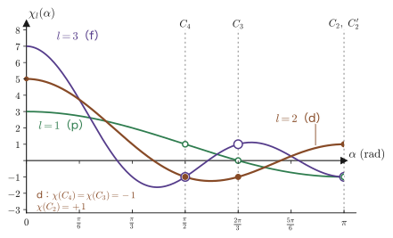

第45章群論で見る配位子場 — 点群・指標表・既約表現
前の章（第44章）では，八面体に並んだ 6 個の負の点電荷の場の中にある 3d 電子 1 個のエネルギーを，5×5 の永年方程式を解いて求めた．5 重に縮退していた d 準位は，2 重の $e_g$ と 3 重の $t_{2g}$ に分かれ，その位置は $+6Dq$ と $-4Dq$ であった．しかし，あの計算は「点電荷」と「水素様の 3d 軌道」という具体的な模型を使っていた．読者はこう疑うかもしれない．「2 個と 3 個に分かれる」という結論は，模型を少し変えれば変わってしまうのではないか．配位子の電子雲が金属に共有結合的にしみ込んでいるような，現実の錯体や結晶でも，$t_{2g}$ と $e_g$ という区別は成り立つのだろうか．
答えは「成り立つ」である．いくつの準位に分かれ，それぞれが何重に縮退するかという分裂のパターンは，模型の細部ではなく，配位子の並び方がもつ対称性だけで決まる．身近な例で考えてみよう．正方形の太鼓をたたくと，同じ高さの音を出す振動のしかたが 2 通りある（横方向に腹が 1 つで縦方向に腹が 2 つの振動と，その縦横を入れ替えた振動）．これは偶然ではなく，正方形は 90° 回すと自分自身に重なるからである．長方形の太鼓にすると，この 2 つの音の高さはずれてしまう．量子力学でも全く同じで，電子の軌道の縮退は，ポテンシャルの対称性を反映する．古典力学では対称性は保存量を生む（大学基礎物理学 AD 03 第46章 46.2）が，量子力学では，保存量に加えて縮退と選択則を生む．
対称性を数学として整理した言葉が群論（group theory）である．抽象的に聞こえるが，本章では「群とは行列の集まりである」という具体的な見方から出発する．八面体の対称操作 48 個は，成分が $0,\pm1$ だけの 3×3 行列 48 個として書ける．その行列の対角和（指標）をとるだけで，d 軌道 5 個が $e_g$ と $t_{2g}$ に分かれること，それ以上は割れないこと，さらに p 軌道は割れず f 軌道は 3 つに割れることが，計算の見通しよく出てくる．この同じ道具で，金属と配位子の分子軌道をどう組むか（対称適合軌道），なぜ d–d 遷移は弱いのか（Laporte の規則），2 個の $t_{2g}$ 電子がつくる項は何か（15 状態）といった，次章以降で使う問いにも答えられる．群論を量子力学に持ち込んだのは Wigner や Bethe で，配位子場理論の出発点になった Bethe の論文（1929 年）は，まさに結晶中の原子の準位の分裂を群論で論じたものである．
- 対称操作 $\hat{R}$ の関数への作用 $\hat{R}f(\bm{r})=f(R^{-1}\bm{r})$ と，$\comm{\hat{H}}{\hat{R}}=0$ から，縮退した固有関数の組が対称操作のもとで閉じること
- 群の定義と点群．八面体群 $O_h$（48 元，10 類）の対称操作が符号つき置換行列 48 個であること．$T_d$，$D_{4h}$，$D_{3d}$，$C_{3v}$ の紹介，Schoenflies 記号と国際記号，点群を決める手順
- 表現行列・指標・既約表現・大直交定理（概略）・指標の直交関係・簡約の公式，$O$ と $O_h$ の指標表の読み方
- Mulliken 記号（A，B，E，T，添字 1，2，g，u，′，″）の意味，小文字（軌道）と大文字（状態）の約束，$\Gamma$ の二重使用
- d 軌道の指標 $(5,-1,1,-1,1)$ から $E_g+T_{2g}$ を得ること．一般の $\chi_l(\alpha)=\sin\frac{(2l+1)\alpha}{2}/\sin\frac{\alpha}{2}$ と，s，p，d，f 軌道および S〜I 項の $O_h$ での分解表．5 が 2+3 以上に割れない理由（Schur の補題）
- $T_d$ の指標表，部分群への降下の相関表（$O_h\to D_{4h},D_{3d},T_d$），$\mathrm{MX_6}$ の基準振動の既約表現と，Jahn–Teller 効果の群論的な条件
- 射影演算子と，配位子の σ 軌道・π 軌道の対称適合軌道（$\Gamma_\sigma=A_{1g}+E_g+T_{1u}$，$\Gamma_\pi=T_{1g}+T_{2g}+T_{1u}+T_{2u}$）
- 直積表現と選択則（Wigner–Eckart の定理への入口），Laporte の規則とスピン選択則，$(t_{2g})^2={}^3T_{1g}+{}^1A_{1g}+{}^1E_g+{}^1T_{2g}$（15 状態）
もとにしたノート：本章はノートにない内容を補った章である．関連するノート：望月泰英『物理学ノート 量子力学3』 pp. 67–68（立方対称場中の 1 個の d 電子）．
45.1 縮退は対称性から生まれる — $[\hat{H},\hat{R}]=0$
45.1.1 対称操作と，関数への作用
第44章の問題のハミルトニアンは，1 個の電子に対する
\begin{equation} \hat{H}=-\frac{\hbar^2}{2m_{\mathrm{e}}}\nabla^2+V(\bm{r}),\qquad V(\bm{r})=V_{\mathrm{core}}(r)+V_{\mathrm{lig}}(\bm{r}) \label{eq:45-H} \end{equation}であった．$V_{\mathrm{core}}(r)$ は金属イオンの核と内殻電子がつくる球対称なポテンシャル，$V_{\mathrm{lig}}(\bm{r})$ は 6 個の配位子がつくるポテンシャルである．配位子の並び方が八面体であることは，$V_{\mathrm{lig}}$ が「ある種の座標変換で変わらない」という性質として現れる．この性質を正確に述べるために，まず「座標変換」と「関数の変換」を区別して定義する．
定義45.1 対称操作
原点を動かさない空間の変換 $\bm{r}\to R\bm{r}$ を考える．$R$ は $R^{\mathsf T}R=I$ を満たす 3×3 の実行列（直交行列）で，$\det R=+1$ なら回転，$\det R=-1$ なら鏡映や反転を含む変換（不適切な変換）である．配位子などの原子の並び全体を $R$ で動かしたとき，動かした後の並びがもとの並びと（原子の区別を除いて）重なるなら，$R$ をその並びの対称操作（symmetry operation）という．
たとえば八面体の配位子の位置 $(\pm a,0,0)$，$(0,\pm a,0)$，$(0,0,\pm a)$ は，$z$ 軸まわりの $90^\circ$ 回転 $R=C_4(z)$，すなわち $(x,y,z)\to(-y,x,z)$ で，$(a,0,0)\to(0,a,0)\to(-a,0,0)\to\cdots$ と互いに入れ替わるだけで，全体としてもとに重なる．したがって $C_4(z)$ はこの並びの対称操作である．
次に，関数（波動関数）への作用を決める．座標変換 $R$ に対して，波動関数 $f(\bm{r})$ を「$R$ で動かした関数」$\hat{R}f$ を次のように定義する（ハットは，関数に作用する演算子であることを表す）．
定義45.2 関数に対する対称操作の作用
\begin{equation} (\hat{R}f)(\bm{r})=f(R^{-1}\bm{r}) \label{eq:45-Rhat} \end{equation}すなわち，点 $\bm{r}$ での $\hat{R}f$ の値は，$R$ によって $\bm{r}$ に移ってくる点 $R^{-1}\bm{r}$ での $f$ の値である．
なぜ $R$ ではなく逆の $R^{-1}$ なのか．図45.1 を見よう．関数 $f$ が点 $\bm{r}_0$ のまわりにピークをもつとする．この関数を $R$ で動かすと，ピークは点 $R\bm{r}_0$ のまわりに移るはずである．つまり，新しい関数 $\hat{R}f$ の点 $R\bm{r}_0$ での値は，もとの関数 $f$ の点 $\bm{r}_0$ での値に等しくなければならない：$(\hat{R}f)(R\bm{r}_0)=f(\bm{r}_0)$．点 $R\bm{r}_0$ を改めて $\bm{r}$ と書けば $\bm{r}_0=R^{-1}\bm{r}$ だから，式 \eqref{eq:45-Rhat} になる．「関数をずらすとき，値は逆向きに引き戻して取ってくる」のである．この事情は，高校数学で「グラフを右へ $a$ だけ平行移動すると $f(x)\to f(x-a)$ になる」と習ったことと同じである（$x$ を $x-a$ にするのは，平行移動 $x\to x+a$ の逆）．
定理45.1 対称操作の積と関数への作用
2 つの座標変換 $R_1$，$R_2$ について，関数への作用は積の順序を保つ：
\begin{equation} \hat{R}_1\hat{R}_2=\widehat{R_1R_2} \label{eq:45-prod} \end{equation}ここで左辺は「$\hat{R}_2$ を先に作用させ，次に $\hat{R}_1$ を作用させる」ことを表し，右辺は座標変換 $R_1R_2$（$R_2$ が先，$R_1$ が後）に対応する演算子である．また $\hat{R}$ は線形で，内積を変えない：$\int(\hat{R}f)^*(\hat{R}g)\,\dd\tau=\int f^*g\,\dd\tau$．
証明
$g=\hat{R}_2f$ とおくと，$g(\bm{r})=f(R_2^{-1}\bm{r})$ である．これに $\hat{R}_1$ を作用させると，式 \eqref{eq:45-Rhat} の $\bm{r}$ に $R_1^{-1}\bm{r}$ を代入して，
$$(\hat{R}_1\hat{R}_2f)(\bm{r})=g(R_1^{-1}\bm{r})=f\bigl(R_2^{-1}R_1^{-1}\bm{r}\bigr)=f\bigl((R_1R_2)^{-1}\bm{r}\bigr)=(\widehat{R_1R_2}f)(\bm{r}).$$3 つ目の等号で $(R_1R_2)^{-1}=R_2^{-1}R_1^{-1}$ を使った．線形性は，$(\hat{R}(\alpha f+\beta g))(\bm{r})=\alpha f(R^{-1}\bm{r})+\beta g(R^{-1}\bm{r})=\alpha(\hat{R}f)(\bm{r})+\beta(\hat{R}g)(\bm{r})$ から従う（$f$ に $R^{-1}\bm{r}$ を代入する操作は，$f$ について線形である）．内積については，積分変数を $\bm{r}'=R^{-1}\bm{r}$ に変換する．直交行列の行列式の絶対値は 1 なので体積要素 $\dd\tau$ は変わらず，$\int f^*(R^{-1}\bm{r})\,g(R^{-1}\bm{r})\,\dd\tau=\int f^*(\bm{r}')g(\bm{r}')\,\dd\tau'$ となる．
（証明終わり）
注意：$f(R\bm{r})$ と定義してはいけない
$(\hat{R}'f)(\bm{r})=f(R\bm{r})$ と定義すると，1 回の作用だけを見ていればよいが，積の順序が逆転して $\hat{R}_1'\hat{R}_2'=\widehat{R_2R_1}'$ となってしまい，式 \eqref{eq:45-prod} が成り立たない．行列の積と順序をそろえて「群の表現」をつくるために，$R^{-1}$ が必要なのである（次の例題で具体的に確かめる）．
例題45.1 $C_4(z)$ で 2 次式はどう変わるか，積の順序
(1) $R_1=C_4(z)$（$(x,y,z)\to(-y,x,z)$）の作用 $\hat{R}_1$ を，$xy$，$yz$，$zx$，$x^2-y^2$，$z^2$ に対して求めよ．(2) $R_2=C_2(x)$（$x$ 軸まわりの $180^\circ$ 回転，$(x,y,z)\to(x,-y,-z)$）とする．関数 $f=y$ に対して $\hat{R}_1\hat{R}_2f$ を計算し，座標変換 $R_1R_2$ に対応する $\widehat{R_1R_2}f$ と一致することを確かめよ．また，$(\hat{R}'f)(\bm{r})=f(R\bm{r})$ とする（誤った）定義では一致しないことを示せ．
解答 (1) $R_1^{-1}$ は $(x,y,z)\to(y,-x,z)$ である（$R_1$ が $x\to y$，$y\to-x$ と動かすことの逆）．式 \eqref{eq:45-Rhat} より $(\hat{R}_1f)(x,y,z)=f(y,-x,z)$．したがって
$$\hat{R}_1(xy)=y\cdot(-x)=-xy,\quad \hat{R}_1(yz)=(-x)\,z=-zx,\quad \hat{R}_1(zx)=z\,y=yz,$$ $$\hat{R}_1(x^2-y^2)=y^2-x^2=-(x^2-y^2),\quad \hat{R}_1(z^2)=z^2.$$(2) $R_2^{-1}=R_2$ なので $(\hat{R}_2f)(x,y,z)=f(x,-y,-z)$．$f=y$ なら $\hat{R}_2y=-y$．次に $\hat{R}_1$ を作用させる．$\hat{R}_1y=(\text{2 番目の引数})=-x$（$f(x,y,z)=y$ に $(y,-x,z)$ を代入すると $-x$）だから，$\hat{R}_1(-y)=x$．よって $\hat{R}_1\hat{R}_2y=x$．一方，$R_1R_2$ は，$C_2(x)$ で $(x,y,z)\to(x,-y,-z)$，続けて $C_4(z)$ で $(x,-y,-z)\to(y,x,-z)$ となるから，$R_1R_2:(x,y,z)\to(y,x,-z)$．この逆も同じ変換なので，$(\widehat{R_1R_2}y)(x,y,z)=(\text{2 番目の引数})=x$．たしかに一致する．
誤った定義では，$\hat{R}_2'y=(R_2\bm{r})_y=-y$，$\hat{R}_1'y=(R_1\bm{r})_y=x$ だから，$\hat{R}_1'\hat{R}_2'y=\hat{R}_1'(-y)=-x$．ところが $(\widehat{R_1R_2}'y)=(R_1R_2\bm{r})_y=x$ で，符号が合わない．積の順序が逆になるために（$\widehat{R_2R_1}'y=(R_2R_1\bm{r})_y$ を計算すると $-x$ で一致する）．
45.1.2 $\comm{\hat{H}}{\hat{R}}=0$ と縮退
ハミルトニアンの対称性を次のように定義する．
定義45.3 ハミルトニアンの対称操作
対称操作 $R$ が，ハミルトニアン $\hat{H}$ の対称操作であるとは，$\hat{R}\hat{H}\hat{R}^{-1}=\hat{H}$，すなわち
\begin{equation} \comm{\hat{H}}{\hat{R}}=\hat{H}\hat{R}-\hat{R}\hat{H}=0 \label{eq:45-comm} \end{equation}が成り立つことをいう．式 \eqref{eq:45-H} の $\hat{H}$ では，運動エネルギー項は任意の直交変換で不変（下の説明）なので，条件は $V(R^{-1}\bm{r})=V(\bm{r})$ に帰着する．
この同値を確かめておこう．まず運動エネルギー：$\hat{R}$ の作用は変数を $\bm{r}\to R^{-1}\bm{r}$ に置き換えることで，ラプラシアン $\nabla^2=\partial_x^2+\partial_y^2+\partial_z^2$ は直交変換（回転・鏡映）で形を変えない．したがって $\hat{R}\nabla^2\hat{R}^{-1}=\nabla^2$ である．次に，ポテンシャルの項は掛け算演算子で，任意の関数 $f$ に対して
$$(\hat{R}V\hat{R}^{-1}f)(\bm{r})=(V\hat{R}^{-1}f)(R^{-1}\bm{r})=V(R^{-1}\bm{r})\,(\hat{R}^{-1}f)(R^{-1}\bm{r})=V(R^{-1}\bm{r})\,f(\bm{r}).$$最後の等号では $(\hat{R}^{-1}f)(\bm{r}')=f(R\bm{r}')$ に $\bm{r}'=R^{-1}\bm{r}$ を代入した（$f(RR^{-1}\bm{r})=f(\bm{r})$）．よって $\hat{R}V\hat{R}^{-1}$ は「$V(R^{-1}\bm{r})$ を掛ける演算子」であり，これが $V(\bm{r})$ を掛ける演算子に等しいことが対称の条件になる．第44章の八面体ポテンシャルは，48 個の操作（45.2 節）のすべてでこの条件を満たす．
定理45.2 対称性と縮退
$\hat{R}$ が $\hat{H}$ と可換で，$\hat{H}\psi=E\psi$ ならば，$\hat{R}\psi$ も同じエネルギー $E$ の固有関数である：$\hat{H}(\hat{R}\psi)=E(\hat{R}\psi)$．したがって，エネルギー $E$ の固有関数の全体（縮退した固有空間）は，$\hat{H}$ の対称操作 $\hat{R}$ すべてのもとで閉じている．
証明
$\hat{H}(\hat{R}\psi)=\hat{R}(\hat{H}\psi)=\hat{R}(E\psi)=E\,\hat{R}\psi$．最初の等号で $\comm{\hat{H}}{\hat{R}}=0$ を使い，最後の等号で $\hat{R}$ の線形性を使った．
（証明終わり）
このことから，縮退の構造が次のように読み取れる．$E$ に属する独立な固有関数が $d$ 個あり，$\psi_1,\dots,\psi_d$ とする（$d$ 重縮退）．各 $\hat{R}\psi_i$ も $E$ の固有関数なので，$\psi_1,\dots,\psi_d$ の線形結合で書ける：
\begin{equation} \hat{R}\psi_i=\sum_{j=1}^{d}D(R)_{ji}\,\psi_j \label{eq:45-Dmat} \end{equation}この $d\times d$ 行列 $D(R)$ が，次節で定義する「表現行列」である．縮退した準位の固有関数の組は，対称操作のもとで互いに移り合う．これが「縮退は対称性から生まれる」の意味である．逆に，対称操作で互いに移り合うことのない 2 つの関数の間には，縮退を強いる理由がない．
例題45.2 $t_{2g}$ の 3 重縮退は対称操作から「必然」である
八面体のポテンシャル中の 3d 準位について，(1) $d_{yz}$ と $d_{zx}$ が，(2) $d_{xy}$，$d_{yz}$，$d_{zx}$ の 3 個すべてが，(3) $d_{z^2}$ と $d_{x^2-y^2}$ の 2 個が，対称操作だけから縮退することを示せ．(4) $d_{z^2}$ と $d_{xy}$ の間には，そのような理由がないことを示せ．
解答 (1) 八面体の対称操作 $C_4(z)$ に対し，例題45.1 の (1) より $\hat{R}_1(yz)=-zx$，$\hat{R}_1(zx)=yz$．定理45.2 より，$\hat{R}_1d_{yz}=-d_{zx}$ は $d_{yz}$ と同じエネルギーをもつ．符号は規格化や位相の違いにすぎない（$-d_{zx}$ と $d_{zx}$ は同じエネルギー）ので，$d_{yz}$ と $d_{zx}$ は同じエネルギーをもつ．(2) 体対角線 $(1,1,1)$ の方向の軸まわりの $120^\circ$ 回転 $C_3$（$\bm{e}_x\to\bm{e}_y\to\bm{e}_z\to\bm{e}_x$，すなわち $R\bm{r}=(z,x,y)$）を考える．$R^{-1}\bm{r}=(y,z,x)$ なので $(\hat{R}f)(x,y,z)=f(y,z,x)$ で，
$$\hat{R}(xy)=yz,\qquad \hat{R}(yz)=zx,\qquad \hat{R}(zx)=xy$$となる．$d_{xy}\to d_{yz}\to d_{zx}\to d_{xy}$ と巡回するので 3 個はすべて同じエネルギーをもつ．(3) 同じ $C_3$ を，$e_1=(2z^2-x^2-y^2)/(2\sqrt3)$，$e_2=(x^2-y^2)/2$ に作用させると，
$$\hat{R}e_1=\frac{2x^2-y^2-z^2}{2\sqrt3}=-\tfrac12e_1+\tfrac{\sqrt3}{2}e_2,\qquad \hat{R}e_2=\frac{y^2-z^2}{2}=-\tfrac{\sqrt3}{2}e_1-\tfrac12e_2$$となる（式 \eqref{eq:45-Dd} の $C_3$ の表現行列の左上のブロックである）．$e_1$ がエネルギー $E$ の固有関数なら，定理45.2 より $\hat{R}e_1$ も同じ $E$ の固有関数であり，そこから $e_2=\tfrac{2}{\sqrt3}\bigl(\hat{R}e_1+\tfrac12e_1\bigr)$ も同じ $E$ の固有関数である．こうして $e_g$ の 2 重縮退も，対称操作だけから従う（$e_1$ と $e_2$ は $C_3$ で互いに混ざり合うので，切り離せない）．(4) $x^2,y^2,z^2$ の組の関数は，$\hat{R}$ の作用で $x^2,y^2,z^2$ の間の置換になり，$xy,yz,zx$ の組の関数は，同じ組の中で符号を変えるか入れ替わるだけである（符号つき置換行列の性質．45.2 節）．$z^2$ はどんな操作でも $xy$ の組には移らない（逆も同様）ので，$d_{z^2}$ と $d_{xy}$ を結びつける対称操作は存在しない．縮退を強いる対称性がないので，両者のエネルギーが等しいとしても，それは（$O_h$ の範囲では）偶然でしかなく，一般には異なる．これが「$t_{2g}$ の 3 重」と「$e_g$ の 2 重」の区別の，最も簡単な説明である．
例題45.3 正方形の箱の縮退 — 対称性による縮退と偶然の縮退
辺の長さ $L$ の正方形の 2 次元無限井戸（$0\lt x,y\lt L$）では，固有関数は $\psi_{n_1n_2}=\dfrac{2}{L}\sin\dfrac{n_1\pi x}{L}\sin\dfrac{n_2\pi y}{L}$，エネルギーは $E_{n_1n_2}=\dfrac{\pi^2\hbar^2}{2m_{\mathrm{e}}L^2}(n_1^2+n_2^2)$ である（第10章 10.3）．(1) $\psi_{12}$ と $\psi_{21}$ が対称性から縮退することを示せ．(2) $E_{n_1n_2}$ が最初に 3 重に縮退する $n_1^2+n_2^2$ の値を求め，この縮退が対称性で説明できるかを論ぜよ．
解答 (1) 正方形の中心 $(L/2,L/2)$ を通る垂直軸まわりの $90^\circ$ 回転 $C_4$ と，直線 $x=y$ に関する鏡映などが，この箱（と $V=0$ の内部，$V=\infty$ の外部）の対称操作である（全部で 8 個．点群 $C_{4v}$ と同じ構造の位数 8 の群で，既約表現の次元は $1,1,1,1,2$ である）．直線 $y=x$ に関する鏡映 $\sigma$ は $x\leftrightarrow y$ の入れ替えなので，$\hat{\sigma}\psi_{12}=\psi_{21}$．よって定理45.2 から，$\psi_{12}$ と $\psi_{21}$ は同じエネルギー $5\times\pi^2\hbar^2/(2m_{\mathrm{e}}L^2)$ をもつ．$n_1\ne n_2$ の状態は必ず，$(n_1,n_2)$ と $(n_2,n_1)$ の 2 重縮退になる．(2) $n_1^2+n_2^2=N$ を満たす $(n_1,n_2)$ の組（$n_i\ge1$）を調べると，$N=50$ で初めて $(1,7),(7,1),(5,5)$ の 3 個が現れる（$1+49=25+25=50$）．このうち $(1,7)$ と $(7,1)$ は入れ替えで結ばれる対称性による 2 重縮退だが，$(5,5)$ は $x\leftrightarrow y$ に対して自分自身に移る（$\hat{\sigma}\psi_{55}=\psi_{55}$）ので，$\psi_{17}$ とは対称操作で移り合わない．$E_{55}=E_{17}$ は，数の上で $7^2+1^2=5^2+5^2$ だという偶然の一致である．対称性から「必然」の縮退は 2 重までで（この群の既約表現の次元は 1 か 2），3 重はこのような偶然の縮退である．
水素原子で $l$ の異なる状態（2s と 2p など）が同じエネルギーをもつのも，球対称性 SO(3) だけでは説明できない「偶然」の縮退で，Coulomb ポテンシャルに固有の隠れた対称性（SO(4)，4 次元空間の回転のなす群）によって説明される（リー群シミュレーター）．配位子場では，こうした偶然の縮退は起こらず，縮退度は後に見るように既約表現の次元 1，2，3 のどれかになる．
45.1.3 群論でわかること，わからないこと
対称性からどこまでわかるかを，あらかじめ整理しておく．第44章の計算では，点電荷と 3d 軌道という具体的な模型を使って，上下の位置（$e_g$ が $+6Dq$，$t_{2g}$ が $-4Dq$）と大きさ（$Dq$ の式）までを求めた．群論は，その一部——分裂のパターン——だけを，模型に依存せずに与える．
| 群論（対称性）だけで決まること | 物理（ハミルトニアンの具体的な形）が決めること |
|---|---|
| 分裂のパターン：いくつの準位に分かれ，それぞれが何重に縮退するか（d 軌道なら $E_g$ と $T_{2g}$） | 準位の上下の順序（$e_g$ が上か下か．点電荷では上，四面体では下） |
| 各準位に属する基底関数（$\{z^2,x^2-y^2\}$ と $\{xy,yz,zx\}$） | 分裂の大きさ（$\Delta_o$ が何 eV か．共有結合性・配位子の種類・距離に依存する） |
| 摂動の行列要素のうち 0 になるもの（永年方程式のブロック対角化） | 0 でない行列要素の値（$Dq$，Racah パラメータなど） |
| 許される遷移と禁制の遷移（選択則），Jahn–Teller 効果が起こるか | 遷移の強さ，ひずみの大きさ |
| 配位子軌道と金属軌道が結合できる対称性の組（対称適合軌道） | 結合の強さ，軌道のエネルギー |
| 重心則：$l=0$ 成分を除いたポテンシャルでは，分裂した準位の縮退度による重みつき平均が動かない（対称性に，球対称な回転群 $SO(3)$ の性質を加えて出る．例題45.12） | 平均の位置そのもの（球対称な部分 $V_0$ の大きさ） |
この分業は本章全体を貫く．模型が変わると右の列は変わるが，左の列は変わらない．たとえば第44章で見た「$e_g:t_{2g}=+6Dq:-4Dq$」のうち，「2 個と 3 個に分かれる」ことは群論で保証される（45.5 節）．比 $3:-2$（重心則）は，群論に球対称な回転群の性質を加えると出る（例題45.12）．一方，$10Dq$ が何 $\mathrm{cm^{-1}}$ になるかは，遷移金属の酸化数・配位子・結合距離を決めて，実験か精密な計算（次章以降）で求めるしかない．また，対称性が低いほど，許される成分が増えて分裂が細かくなる．これも群論（45.6 節の部分群への降下）の領域である．
イメージ：群論は「何がそろって動くか」の台帳
対称操作で互いに移り合う軌道の組は，いつも同じエネルギーで「そろって」動く．この「そろい方」を漏れなく数え上げる台帳が，指標表である．どの軌道が同じ組に入り，別の組になるかは台帳から読み取れるが，各組を高く持ち上げるか低く押し下げるかは，台帳には書かれていない．それを決めるのは，前の章で計算した点電荷との反発のような，具体的な物理である．
45.2 点群と対称操作 — $O_h$，$T_d$，$D_{4h}$，$C_{3v}$
45.2.1 群の定義と，最小の例 $C_{3v}$
ある対象の対称操作を全部集めると，どのような構造ができるだろうか．2 つの対称操作を続けて行う（積）と，やはりその対象の対称操作になる．何もしない操作（恒等操作）も対称操作であり，どの対称操作にも，もとに戻す逆の操作がある．この 4 つの性質を抜き出したものが群である．
定義45.4 群，共役と類
集合 $G$ の任意の 2 つの元 $a,b$ に対して積 $ab$ が決まっていて，次の 4 条件を満たすとき，$G$ を群（group）という．(i) 閉じている：$a,b\in G\Rightarrow ab\in G$．(ii) 結合則：$(ab)c=a(bc)$．(iii) 単位元 $E$ が存在する：すべての $a$ に対して $Ea=aE=a$．(iv) 逆元が存在する：すべての $a$ に対して $aa^{-1}=a^{-1}a=E$ となる $a^{-1}\in G$ がある．群の元の個数を位数（order）といい，$h$ と書く（Planck 定数 $h$ とは無関係）．積は一般に可換でなくてよい（$ab\ne ba$ でもよい）．
群の 2 つの元 $a,b$ は，$b=xax^{-1}$ となる元 $x\in G$ が存在するとき共役（conjugate）であるという．互いに共役な元の集まりを共役類（conjugacy class，単に類）といい，類に含まれる元の個数を $h_c$ と書く．どの元もちょうど 1 つの類に入り，$h_c$ は位数 $h$ の約数である．たとえば，$C_4(x)$，$C_4(y)$，$C_4(z)$ は，座標軸を入れ替える $O_h$ の操作（たとえば $C_3$）で互いに結ばれるので共役で，「同じ種類の操作を別の見方から見たもの」である．
対称操作の積は「操作を続けて行う」ことで，右側の操作を先に行う（関数への作用の定理45.1 と同じ約束：$ab$ は $b$ を先，$a$ を後）．原点を動かさない対称操作（回転・鏡映・反転など）からなる群を点群（point group）という．結晶の並進操作を含む群は空間群（固体物理学 AD 06 第5章）である．本章で扱う配位子場は，金属イオンという 1 点を中心とするので点群で十分である．
例題45.4 $C_{3v}$ の乗積表と共役類
正三角形の頂点に 3 個の原子が並び，その中心の真上に別の原子が 1 個ある配置（アンモニア $\mathrm{NH_3}$ の H 3 個を上から見た形．3 個の H を 1，2，3 と番号づけ，上から見る）の対称操作は，次の 6 個である（図45.2）．$E$（何もしない），$C_3$（中心を通る軸のまわりの $120^\circ$ 回転，$1\to2\to3\to1$），$C_3^2$（$240^\circ$ 回転），$\sigma_1,\sigma_2,\sigma_3$（頂点 1，2，3 と中心を含む鏡映面による鏡映．たとえば $\sigma_1$ は 2 と 3 を交換）．(1) 乗積表を作り，群の 4 条件を確かめよ．(2) 共役類を求め，類の数を答えよ．
解答 (1) 各操作を，頂点の入れ替え（置換）として書く．$C_3$ は $(1\to2,\ 2\to3,\ 3\to1)$，$\sigma_1$ は $(2\leftrightarrow3)$ などである．積 $ab$ は「$b$ を先，$a$ を後」に行う．たとえば $C_3\sigma_1$ は，まず $\sigma_1$（$1\to1$，$2\to3$，$3\to2$）を行い，続いて $C_3$ を行うので，$1\to1\to2$，$2\to3\to1$，$3\to2\to3$．結局 $1\leftrightarrow2$ の入れ替えで，3 を動かさないから $\sigma_3$ である．同様に $\sigma_1C_3$ は，$C_3$ を先に行い，次に $\sigma_1$ を行うので $1\to2\to3$，$2\to3\to2$，$3\to1\to1$，すなわち $\sigma_2$ になる．全部の積を求めると，表45.2 のようになる．
| $a\backslash b$ | $E$ | $C_3$ | $C_3^2$ | $\sigma_1$ | $\sigma_2$ | $\sigma_3$ |
|---|---|---|---|---|---|---|
| $E$ | $E$ | $C_3$ | $C_3^2$ | $\sigma_1$ | $\sigma_2$ | $\sigma_3$ |
| $C_3$ | $C_3$ | $C_3^2$ | $E$ | $\sigma_3$ | $\sigma_1$ | $\sigma_2$ |
| $C_3^2$ | $C_3^2$ | $E$ | $C_3$ | $\sigma_2$ | $\sigma_3$ | $\sigma_1$ |
| $\sigma_1$ | $\sigma_1$ | $\sigma_2$ | $\sigma_3$ | $E$ | $C_3$ | $C_3^2$ |
| $\sigma_2$ | $\sigma_2$ | $\sigma_3$ | $\sigma_1$ | $C_3^2$ | $E$ | $C_3$ |
| $\sigma_3$ | $\sigma_3$ | $\sigma_1$ | $\sigma_2$ | $C_3$ | $C_3^2$ | $E$ |
表の欄はすべて 6 個の元のどれかだから，(i) 閉じている．(iii) 単位元は $E$（行と列が見出しと同じ）．(iv) 逆元は，各行に $E$ が 1 つずつあることから読み取れる：$C_3^{-1}=C_3^2$，$\sigma_k^{-1}=\sigma_k$．(ii) 結合則は，置換の合成が常に結合則を満たすことから成り立つ．また，$C_3\sigma_1=\sigma_3$ と $\sigma_1C_3=\sigma_2$ は異なるので，この群は可換ではない．各行・各列に 6 個の元がちょうど 1 回ずつ現れる（再配列定理．$ab=ac$ なら，左から $a^{-1}$ を掛けて $b=c$ となるので，同じ行に同じ元は 2 回現れない）．
(2) 定義45.4 の共役を，乗積表を使って調べる．$\sigma_1C_3\sigma_1^{-1}=\sigma_1C_3\sigma_1$ を表から求める．$C_3\sigma_1=\sigma_3$ なので $\sigma_1\sigma_3=C_3^2$ となり（行 $\sigma_1$・列 $\sigma_3$），$C_3$ と $C_3^2$ は共役である．次に $C_3\sigma_1C_3^{-1}=C_3\sigma_1C_3^2$ を求めると，$\sigma_1C_3^2=\sigma_3$（行 $\sigma_1$・列 $C_3^2$），$C_3\sigma_3=\sigma_2$ なので，$\sigma_1$ と $\sigma_2$ は共役である．同様に $\sigma_3$ も共役で，結局 3 つの類に分かれる：
$$\{E\},\qquad \{C_3,\,C_3^2\},\qquad \{\sigma_1,\,\sigma_2,\,\sigma_3\}$$類の数は 3，記号で書くと $E,\ 2C_3,\ 3\sigma_v$ である（「$2C_3$」は類に属する操作の個数 2 を前に付けたもの）．類が同じなら，以下で定義する指標も同じ値になる（45.3.3 節）．この群の既約表現は 3 個あり，その次元は $1,1,2$（$1^2+1^2+2^2=6=h$）であることを 45.3 節で示す．
この群は，アンモニア分子 $\mathrm{NH_3}$ や，三角錐形の配位子場（3 個の配位子が正三角形に並び，その軸上に 1 個の原子）の点群である．マテリアル計算科学 AD 05 第12章 12.2も，この群を第一の例にしている．
45.2.2 対称要素と対称操作 — 3×3 行列で書く
点群の操作は，次の 5 種類に分類される．回転軸・鏡映面・点のように，操作のもとになる幾何学的な図形を対称要素（symmetry element）といい，その要素に関する操作を対称操作という．定義45.1 のとおり，どの操作も 3×3 の直交行列で書ける．$z$ 軸まわり・$xy$ 面に関する操作の行列を表45.3 に示す．
| 記号 | 対称要素 | 操作 | 行列 | $\det$ |
|---|---|---|---|---|
| $E$ | （なし） | 何もしない | $\begin{pmatrix}1&0&0\\0&1&0\\0&0&1\end{pmatrix}$ | $+1$ |
| $C_n$ | $n$ 回軸 | $2\pi/n$ の回転 | $\begin{pmatrix}\cos\frac{2\pi}{n}&-\sin\frac{2\pi}{n}&0\\\sin\frac{2\pi}{n}&\cos\frac{2\pi}{n}&0\\0&0&1\end{pmatrix}$ | $+1$ |
| $\sigma$ | 鏡映面 | 面に関する鏡映 | $\sigma_h\ (xy\text{ 面}):\ \begin{pmatrix}1&0&0\\0&1&0\\0&0&-1\end{pmatrix}$ | $-1$ |
| $i$ | 反転中心 | $\bm{r}\to-\bm{r}$ | $\begin{pmatrix}-1&0&0\\0&-1&0\\0&0&-1\end{pmatrix}$ | $-1$ |
| $S_n$ | $n$ 回回映軸 | $2\pi/n$ 回転してから軸に垂直な面で鏡映 | $\sigma_hC_n=\begin{pmatrix}\cos\frac{2\pi}{n}&-\sin\frac{2\pi}{n}&0\\\sin\frac{2\pi}{n}&\cos\frac{2\pi}{n}&0\\0&0&-1\end{pmatrix}$ | $-1$ |
補足すると，鏡映面は主軸（最も高次の回転軸）との関係で 3 種類に区別する：主軸に垂直な面を $\sigma_h$（horizontal），主軸を含む面を $\sigma_v$（vertical），主軸を含み，かつ隣り合う 2 本の $C_2$ 軸（主軸に垂直）の真ん中を通る面を $\sigma_d$（dihedral）という．$C_n^k$ は $C_n$ を $k$ 回続けて行う操作で，たとえば $C_4^2=C_2$ である．$S_2=i$，$S_1=\sigma$ であり，$C_2(z)$ に反転を続けると $\sigma_h$ になる（$i\,C_2(z)=\sigma_h$：$\mathrm{diag}(-1,-1,1)$ に $-I$ を掛けると $\mathrm{diag}(1,1,-1)$）．行列式が $+1$ の操作を回転（適切な操作），$-1$ の操作を不適切な操作という．
数学の道具：回転行列と行列の積
表45.3 の $C_n$ の行列は，$z$ 軸まわりに反時計回りに $2\pi/n$ だけ回す回転行列である（大学数学 第16章 16.4）．$n=4$ なら $\cos\frac{\pi}{2}=0$，$\sin\frac{\pi}{2}=1$ を入れて $C_4(z)=\begin{pmatrix}0&-1&0\\1&0&0\\0&0&1\end{pmatrix}$ となり，$(x,y,z)\to(-y,x,z)$ に対応する．操作を続けて行うことは行列の積（右の行列を先に作用させる）に対応する（大学数学 第8章 8.1）．
45.2.3 八面体群 $O_h$ — 48 個の符号つき置換行列
第44章の配位子の並びは，座標軸上の 6 点 $(\pm a,0,0)$，$(0,\pm a,0)$，$(0,0,\pm a)$，すなわち正八面体の頂点であった．この並びの対称操作を全部数え上げよう．正八面体の各面の中心を頂点とする立方体（双対の立体）は，もとの八面体と同じ対称操作をもつので，同じ群が立方体の対称操作でもある．
定理45.3 八面体群 $O_h$ は 48 個の符号つき置換行列である
正八面体の頂点 $(\pm a,0,0)$，$(0,\pm a,0)$，$(0,0,\pm a)$ の並びの対称操作は，各行・各列にちょうど 1 個だけ $+1$ か $-1$ があり，残りが 0 であるような 3×3 行列（符号つき置換行列）であり，その個数は $3!\times2^3=48$ である．この群を八面体群 $O_h$ という．48 個のうち $\det=+1$ の 24 個が回転で，これは群をなし，回転群 $O$ と呼ぶ．
証明
対称操作 $R$（直交行列）は 6 個の頂点を互いに入れ替えるから，頂点 $a\bm{e}_j$ の像 $R(a\bm{e}_j)=a\times(R\text{ の第 }j\text{ 列})$ は，6 個の頂点 $\pm a\bm{e}_k$ のどれかでなければならない．したがって $R$ の各列は $\pm\bm{e}_k$ の形をしている．直交性から異なる列は異なる $k$ に対応する（そうでないと列どうしが平行になってしまう）ので，各列の $k$ は $\{1,2,3\}$ の置換（$3!=6$ 通り）をなし，各列の符号は独立に $\pm$ を選べる（$2^3=8$ 通り）．逆に，こうしてできる行列はすべて頂点の集合を自分自身に移し，直交行列だから距離を変えないので，対称操作である．よって $6\times8=48$ 個．$\det R=(\text{置換の符号})\times(\text{列の符号の積})$ なので，半数の 24 個が $+1$，半数が $-1$ である．$-1$ のものは，$+1$ のものに反転 $i=-I$（$\det=-1$）を掛けたものに等しい：$O_h=O\times\{E,i\}$．
（証明終わり）
この 48 個を，共役なもの（同じ類）ごとに分けよう．共役な行列は，同じ対角和 $\operatorname{tr}R$ と同じ行列式をもつ（$\operatorname{tr}(xRx^{-1})=\operatorname{tr}R$，$\det(xRx^{-1})=\det R$）．さらに，対角行列かどうか（軸の入れ替えがあるか）も共役では変わらない．逆に，この 3 つ（$\operatorname{tr}R$，$\det R$，対角かどうか）が等しい行列どうしが共役になっていることは，48 個の行列のすべてについて $xRx^{-1}$ を作って確かめられる（例題45.5 (3)）．その結果，3 つの組ごとに，ちょうど 1 つの類ができる（表45.4）．
| 類 | 個数 | $\operatorname{tr}R$ | $\det R$ | 幾何学的な意味と行列の例 |
|---|---|---|---|---|
| $E$ | 1 | 3 | $+1$ | 何もしない．単位行列 |
| $8C_3$ | 8 | 0 | $+1$ | 4 本の体対角線まわりの $\pm120^\circ$ 回転．$C_3(1,1,1)$：$(x,y,z)\to(z,x,y)$ |
| $3C_2$（$=C_4^2$） | 3 | $-1$ | $+1$ | 座標軸まわりの $180^\circ$ 回転（対角行列）．$C_2(z)=\mathrm{diag}(-1,-1,1)$ |
| $6C_4$ | 6 | 1 | $+1$ | 座標軸まわりの $\pm90^\circ$ 回転．$C_4(z)=\begin{pmatrix}0&-1&0\\1&0&0\\0&0&1\end{pmatrix}$ |
| $6C_2'$ | 6 | $-1$ | $+1$ | 辺の中点を通る軸（$(1,\pm1,0)$ など）まわりの $180^\circ$ 回転（非対角）．$(x,y,z)\to(y,x,-z)$ |
| $i$ | 1 | $-3$ | $-1$ | 反転．$-I$ |
| $8S_6$ | 8 | 0 | $-1$ | $i\times C_3$．$(x,y,z)\to(-z,-x,-y)$ |
| $3\sigma_h$ | 3 | 1 | $-1$ | 座標面に関する鏡映（対角行列）．$\sigma_h(xy)=\mathrm{diag}(1,1,-1)$ |
| $6S_4$ | 6 | $-1$ | $-1$ | $i\times C_4$．$(x,y,z)\to(y,-x,-z)$ |
| $6\sigma_d$ | 6 | 1 | $-1$ | 対角面（$x=\pm y$ など）に関する鏡映（非対角）．$(x,y,z)\to(y,x,z)$ |
個数の合計は $1+8+3+6+6+1+8+3+6+6=48$ で，定理45.3 と一致する．回転 24 個は表の上の 5 行の類（$E,8C_3,3C_2,6C_4,6C_2'$：$1+8+3+6+6=24$），反転を掛けた 24 個が下の 5 行の類である．$O_h$ の類は全部で 10 個である．本章では，類をこの順（$E,8C_3,3C_2,6C_4,6C_2',i,8S_6,3\sigma_h,6S_4,6\sigma_d$）に並べる．
例題45.5 $O_h$ の行列を数える
(1) $C_4(z)$，$C_3(1,1,1)$，$i$ の 3×3 行列を書き，それぞれ $C_4^4=E$，$C_3^3=E$，$i^2=E$ を確かめよ．(2) 積 $C_4(z)\,C_2(x)$ はどの類の，どんな操作か．(3) 符号つき置換行列を計算機で全部生成し，$(\operatorname{tr}R,\det R)$ と対角行列かどうかで分類すると，表45.4 の個数になることを確かめる手順を示せ．
解答 (1) $C_4(z)=\begin{pmatrix}0&-1&0\\1&0&0\\0&0&1\end{pmatrix}$ は $\bm{e}_x\to\bm{e}_y\to-\bm{e}_x$ と動かす．$C_4^2=\mathrm{diag}(-1,-1,1)=C_2(z)$，$C_4^4=(C_4^2)^2=I$．$C_3(1,1,1)=\begin{pmatrix}0&0&1\\1&0&0\\0&1&0\end{pmatrix}$ は $\bm{e}_x\to\bm{e}_y\to\bm{e}_z\to\bm{e}_x$ と動かす（$\bm{r}\to(z,x,y)$）．3 回続けると各成分が一巡して $I$ に戻る：$C_3^3=I$．$i=-I$ は $i^2=I$．(2) $C_2(x)=\mathrm{diag}(1,-1,-1)$ を先に行うと，$C_4(z)C_2(x)$ の第 1 列は $C_4\bm{e}_x=\bm{e}_y$，第 2 列は $C_4(-\bm{e}_y)=\bm{e}_x$，第 3 列は $C_4(-\bm{e}_z)=-\bm{e}_z$ なので，
$$C_4(z)\,C_2(x)=\begin{pmatrix}0&1&0\\1&0&0\\0&0&-1\end{pmatrix},\qquad (x,y,z)\to(y,x,-z).$$$\operatorname{tr}=-1$，$\det=(0\cdot0-1\cdot1)\cdot(-1)=+1$，対角行列ではないので，これは $6C_2'$ の類の操作（$(1,1,0)$ 軸まわりの $180^\circ$ 回転）である．(3) 次のようにする．
import itertools, numpy as np
mats = []
for p in itertools.permutations(range(3)): # 列の置換 3! = 6 通り
for s in itertools.product([1, -1], repeat=3): # 符号 2^3 = 8 通り
M = np.zeros((3, 3), int)
for i in range(3):
M[p[i], i] = s[i] # 第 i 列の成分は s[i] e_{p(i)}
mats.append(M)
print(len(mats)) # 48
from collections import Counter
classes, seen = [], set()
for A in mats:
if tuple(A.flat) in seen:
continue
cl = {tuple((X @ A @ X.T).flat) for X in mats} # A と共役な行列の全体（直交行列では X^{-1} = X^T）
seen |= cl
classes.append(cl)
print(len(classes), sorted(len(c) for c in classes)) # 10 [1, 1, 3, 3, 6, 6, 6, 6, 8, 8]
print(Counter((int(np.trace(M)), int(round(np.linalg.det(M))), bool((M == np.diag(np.diag(M))).all())) for M in mats))共役類の数は 10 個で，個数は $1,1,3,3,6,6,6,6,8,8$ である（表45.4 の個数と同じ）．各行列の $(\operatorname{tr}M,\ \det M,\ M\text{ が対角か})$ の組を数える（最後の Counter）と，$(3,+1)$ が 1 個，$(0,+1)$ が 8 個，$(-1,+1)$ が 対角 3 個と非対角 6 個，$(1,+1)$ が 6 個，$(-3,-1)$ が 1 個，$(0,-1)$ が 8 個，$(1,-1)$ が 対角 3 個と非対角 6 個，$(-1,-1)$ が 6 個で，表45.4 の個数と一致する．48 個の任意の 2 つの積がまた 48 個のどれかになること（閉じていること）も，同じ集合で確かめられる．
45.2.4 もう少し低い対称性 — $T_d$，$D_{4h}$，$D_{3d}$ と点群の名前
実際の錯体や結晶では，配位子の並びが完全な八面体であるとは限らない．配位数 4 の四面体，軸方向に伸びた（または縮んだ）八面体，三方にねじれた八面体など，$O_h$ より低い対称性の点群が次々に現れる．代表的なものを，位数・国際記号・例とともに表45.5 にまとめる．これらはすべて，$O_h$ の操作のうち，その配位を保つものだけを集めた部分群（subgroup）になっている（$C_{3v}$ は $T_d$ の，したがって $O_h$ の部分群である）．
| 点群 | 位数 | 国際記号 | 例 | $O_h$ との関係 |
|---|---|---|---|---|
| $O_h$ | 48 | $m\bar{3}m$（$m$-3$m$） | 正八面体：$\mathrm{SF_6}$，$[\mathrm{Fe(CN)_6}]^{3-}$，$\mathrm{NaCl}$ 型結晶の陽イオン席 | — |
| $O$ | 24 | $432$ | （八面体の回転だけ．キラルな場合） | $O_h$ のうち回転だけ |
| $T_d$ | 24 | $\bar{4}3m$（-43$m$） | 正四面体：$\mathrm{CH_4}$，$[\mathrm{CoCl_4}]^{2-}$ | 部分群（反転をもたない） |
| $D_{4h}$ | 16 | $4/mmm$ | 正方平面：$[\mathrm{PtCl_4}]^{2-}$．軸方向に伸縮した八面体 | 部分群（$z$ 軸が 4 回軸） |
| $D_{3d}$ | 12 | $\bar{3}m$（-3$m$） | 三方にひずんだ八面体（三角反プリズム） | 部分群（体対角線が 3 回軸） |
| $C_{3v}$ | 6 | $3m$ | $\mathrm{NH_3}$，三脚形の配位 | 部分群（$T_d$ の部分群でもある） |
| $C_3$ | 3 | $3$ | コランダム $\mathrm{Al_2O_3}$ の $\mathrm{Al^{3+}}$（$\mathrm{Cr^{3+}}$）席（3 回軸だけが残る低対称） | 部分群 |
2 つの書き方．点群には 2 種類の名前がある．分子の分光学・化学では Schoenflies（シェーンフリース）記号（$O_h$，$T_d$，$D_{4h}$，$C_{3v}$）を，結晶学では国際記号（Hermann–Mauguin 記号）を使う．国際記号は，いくつかの決まった方向（立方晶なら $[100]$，$[111]$，$[110]$ の順）ごとに，その方向にある最も高次の回転軸（数字 $n$）または回反軸（$\bar{n}$，回転と反転を続けて行う軸），およびその方向に垂直な鏡映面（$m$）を書く．たとえば $m\bar{3}m$ は「座標軸に垂直な鏡映面があり，体対角線方向に $\bar{3}$ 軸があり，面対角線方向に垂直な鏡映面がある」という意味である（座標軸方向は 4 回軸もある：完全な記号は $4/m\,\bar{3}\,2/m$）．$4/mmm$ は「4 回軸に垂直な鏡映面（$4/m$）と，その軸を含む 2 種類の鏡映面 $m$，$m$」である．2 つの記号の対応は，$O_h=m\bar{3}m$，$T_d=\bar{4}3m$，$D_{4h}=4/mmm$ のように，表から引く．関連シミュレーターの解説ページ（多電子状態の導出）の計算コマンドでは，点群を国際記号（$m$-3$m$）で指定している．$T_d$ には反転がないので，以下で導入する添字 g，u は付かない．
例題45.6 点群を決める
次の分子・錯体の点群を，図45.4 の手順で決めよ．(1) $\mathrm{SF_6}$，(2) $\mathrm{CH_4}$，(3) $[\mathrm{PtCl_4}]^{2-}$（平面正方形），(4) 水 $\mathrm{H_2O}$，(5) 体対角線（$(1,1,1)$）の方向に引き伸ばして，3 回軸まわりの三方ひずみだけをもつ八面体（三方にひずんだ八面体）．
解答 (1) $\mathrm{SF_6}$：正八面体．直線分子ではなく，$C_3$ 以上の軸が複数ある（$C_4$ 軸 3 本，$C_3$ 軸 4 本）ので立方系．図45.4 の (b) に進むと，$C_5$ 軸はなく，$C_4$ 軸があって，反転中心があるから $O_h$．(2) $\mathrm{CH_4}$：正四面体．立方系で，(b) に進むと，$C_5$ 軸はなく，$C_4$ 軸もない（$C_3$ 軸 4 本と $C_2$ 軸 3 本だけ）．$S_4$ 軸 3 本と $\sigma_d$ 面 6 枚があり，反転中心はないので $T_d$．(3) $[\mathrm{PtCl_4}]^{2-}$：直線でも立方でもない．最高次の軸は分子面に垂直な $C_4$．この軸に垂直な $C_2$ 軸が 4 本ある（$\mathrm{Cl}$ を通る 2 本と，$\mathrm{Cl}$ の間を通る 2 本）ので $D_{n}$ 系．分子面が $\sigma_h$ なので $D_{4h}$．(4) $\mathrm{H_2O}$：直線ではない．$C_2$ 軸が 1 本だけ（$n=2$）．$C_2$ に垂直な $C_2$ 軸はなく，$\sigma_h$ もない．$C_2$ 軸を含む鏡映面が 2 枚あるので $C_{2v}$．(5) 三方にひずんだ八面体：$C_3$ 以上の軸は体対角線の 1 本だけなので，立方系ではない．主軸は $C_3$．主軸に垂直な $C_2$ が 3 本あり，$\sigma_h$ はなく，主軸を含む鏡映面（$\sigma_d$）が 3 枚あるので $D_{3d}$（反転 $i$ もある）．（上下の配位子三角形の金属–配位子距離が異なると，反転で移り合わなくなって反転中心がなくなり，$C_{3v}$ に下がる．さらに 2 つの三角形のねじれ角が $60^\circ$ からずれると，鏡映面もなくなって $C_3$ になる．コランダム $\mathrm{Al_2O_3}$ の $\mathrm{Al^{3+}}$（$\mathrm{Cr^{3+}}$）席は $C_3$ で，その例である．上下の $\mathrm{O_3}$ 三角形までの $\mathrm{Al}$–$\mathrm{O}$ 距離は，約 $1.86$ Å と約 $1.97$ Å で異なる．）
45.2.5 結晶場の点群 — ハミルトニアンの対称性
ここまでの対称操作は「配位子の並び」の対称性であった．式 \eqref{eq:45-H} のハミルトニアン $\hat{H}$ の対称性との関係を整理しておく．$V_{\mathrm{core}}(r)$ は球対称で，すべての回転・鏡映で不変である（この対称性を $O(3)$ と書く．原点まわりのすべての回転と反転がなす群（3 次元直交群）で，本書の角運動量の議論の出発点である）．したがって $\hat{H}$ の対称性は，配位子のポテンシャル $V_{\mathrm{lig}}$ の対称性，すなわち配位子の並びの点群で決まる．八面体配置なら $\hat{H}$ は $O_h$ の 48 個すべての対称操作をもつ．
第44章の結果を，この言葉で言い直そう．44.2 節で得た立方対称ポテンシャル
$$V_4=\frac{35\Lambda}{4a^5}\left(x^4+y^4+z^4-\frac35r^4\right)$$は，$O_h$ のどの操作でも不変である．実際，符号つき置換行列は座標の符号を変え，座標を入れ替えるだけなので，$x^4+y^4+z^4$ も $r^2=x^2+y^2+z^2$ も変わらない．この「すべての操作で不変」な性質をもつ量を全対称（$A_{1g}$ に属する）といい，その正確な意味は 45.3 節以降で与える．第44章の定数項 $V_0=6\Lambda/a$ も全対称である．一方，配位子が 6 個でなく 4 個（正方形）のときのポテンシャルは $k=2$ の項（$x^2+y^2-2z^2$ に比例）をもち，これは $O_h$ の操作 $C_4(x)$（$x\to x,y\to-z,z\to y$ など）で形が変わるので，$O_h$ では不変でない．その場合のハミルトニアンの対称性は $D_{4h}$ に下がる．このように，結晶場の点群は，$\hat{H}$ の対称性を指定する．以下，縮退の構造はすべて，この点群から読み取られる．
45.3 表現・指標・既約表現
注意：この章の記号の使い分け
(i) $h$ は群の位数（元の個数）で，Planck 定数 $h$ とは無関係．$h_c$ は類 $c$ に含まれる元の個数．(ii) $d_a$ は既約表現 $a$ の次元．(iii) $D(R)$ は操作 $R$ の表現行列で，多電子原子の D 項（第34章）や分裂の単位 $Dq$（第44章）とは別のもの．(iv) 既約表現を区別する添字 $a,b$ と，配位子までの距離 $a$（第44章と同じ）は別．(v) $\sigma_h$，$\sigma_v$，$\sigma_d$ は鏡映面（対称操作）で，45.7 節の配位子の σ 型の軌道 $\sigma_{\pm x}$ などや，スピンの Pauli 行列 $\sigma_x$ とは別のもの．(vi) $\Gamma$ は表現を指す（45.4.2 節）．
45.3.1 表現行列 — 関数の組が対称操作で閉じるとき
45.1 節で，縮退した固有関数の組 $\psi_1,\dots,\psi_d$ は，対称操作 $\hat{R}$ で互いに移り合い，式 \eqref{eq:45-Dmat} の行列 $D(R)$ で結ばれることを見た．この構造は，固有関数に限らず，対称操作のもとで閉じている関数の組（d 軌道の 5 個，配位子の σ 軌道の 6 個，$x,y,z$ の 3 個など）なら何にでも使える．
定義45.5 表現行列と表現
関数の組 $f_1,\dots,f_d$（基底という）が，群 $G$ のすべての対称操作 $\hat{R}$ のもとで閉じていて，
\begin{equation} \hat{R}f_i=\sum_{j=1}^{d}D(R)_{ji}\,f_j \label{eq:45-repdef} \end{equation}と書けるとき，$d\times d$ 行列 $D(R)$ を $R$ の表現行列という．全操作の表現行列の集合 $\{D(R)\}$ を，$G$ の（$d$ 次元の）表現（representation）という．$D(R)_{ji}$ は「$f_i$ に $\hat{R}$ を作用させたときの，$f_j$ の成分」である（第 $i$ 列が $\hat{R}f_i$ の成分）．
表現行列は，元の群と同じ積の規則に従う：
\begin{equation} D(R_1R_2)=D(R_1)\,D(R_2) \label{eq:45-Dprod} \end{equation}実際，定理45.1 より $\hat{R}_1\hat{R}_2=\widehat{R_1R_2}$ なので，$\hat{R}_1\hat{R}_2f_i=\hat{R}_1\sum_jD(R_2)_{ji}f_j=\sum_jD(R_2)_{ji}\sum_kD(R_1)_{kj}f_k=\sum_k\bigl[D(R_1)D(R_2)\bigr]_{ki}f_k$ が $\widehat{R_1R_2}f_i=\sum_kD(R_1R_2)_{ki}f_k$ と等しい．$f_k$ が独立なので各係数が等しく，式 \eqref{eq:45-Dprod} が出る．（定義45.2 で $R^{-1}$ を使ったことの意味は，ここで効く．）つまり，表現とは，群の元を，積の規則を保ったまま行列に対応させたものである．
イメージ：$x,y,z$ の表現行列は $R$ そのもの
基底 $f_1=x$，$f_2=y$，$f_3=z$ を考える．直交行列では $R^{-1}=R^{\mathsf T}$ なので，$\hat{R}x_j=(R^{-1}\bm{r})_j=\sum_k(R^{-1})_{jk}x_k=\sum_kR_{kj}x_k$ となり，式 \eqref{eq:45-repdef} と比べて $D(R)_{kj}=R_{kj}$，すなわち $D(R)=R$ である．$O_h$ の 48 個の符号つき置換行列が，そのまま $x,y,z$ を基底とする 3 次元表現になっている．「群＝行列の集まり」という見方の最も単純な実例である．
ほかの例も挙げておく．(a) 配位子の σ 軌道 6 個 $\sigma_{+x},\sigma_{-x},\dots,\sigma_{-z}$（金属イオンの方向を向いた軌道）は，対称操作で互いに入れ替わるだけなので，表現行列は 6×6 の置換行列になる（45.7 節）．(b) 1 個の関数 $r^2=x^2+y^2+z^2$ はどの操作でも変わらず，$D(R)=(1)$（1×1 行列）：これを全対称表現という．(c) 関数 $xyz$ は，$C_4(z)$ で $xyz\to y\cdot(-x)\cdot z=-xyz$ と符号が反転し，$D(C_4)=(-1)$ である．
45.3.2 可約表現と既約表現
基底の選び方は 1 通りではない．新しい基底 $f_j'=\sum_iS_{ij}f_i$（$S$ は可逆行列）を取ると，表現行列は相似変換 $D'(R)=S^{-1}D(R)S$ で変わる．このように相似変換で移り合う表現は同じものと見なす（同値な表現）．
定義45.6 可約表現と既約表現
適当な基底の取り替えによって，すべての $D(R)$ を同時に（同じ形の）ブロック対角行列
$$D(R)=\begin{pmatrix}D^{(1)}(R)&0\\0&D^{(2)}(R)\end{pmatrix}$$にできるとき，その表現は可約（reducible）であるといい，$D=D^{(1)}\oplus D^{(2)}$ と書く．どのような基底の取り替えでもブロック対角化できないとき既約（irreducible）であるという．
可約であることは，基底関数がいくつかの小さな組に分けられ，各組がそれぞれ対称操作のもとで閉じている（他の組の関数を含まない）ことを意味する．既約表現は，これ以上分けられない最小の関数の組である．ある準位の縮退した固有関数の組がつくる表現は，（偶然縮退でない限り）既約表現になる．したがって，縮退度は既約表現の次元である．
イメージ：ブロック対角化は「仕分け」である
対称操作が関数の組を「かき混ぜる」とき，かき混ぜられる範囲が組の内側にとどまるなら，組は独立に扱える．5 個の d 軌道 $(u,v,xy,yz,zx)$（$u=2z^2-x^2-y^2$，$v=x^2-y^2$）では，八面体の 48 個の操作は，$x,y,z$ の符号を変えるか入れ替えるだけである．したがって，$x^2,y^2,z^2$ から作る関数 $u,v$ は互いの間でしか混ざらず，$xy,yz,zx$ は，互いの間で符号を変えながら入れ替わるだけである．この仕分け $5=2\oplus3$ が，第44章の 5×5 行列が 2×2 と 3×3 のブロックに分かれたことの本質である（次の例で具体的に確かめる）．
具体的に，$C_4(z)$ と $C_3(1,1,1)$ の表現行列を，d 軌道の基底（規格化した $e_1=(2z^2-x^2-y^2)/(2\sqrt3)$，$e_2=(x^2-y^2)/2$ と $xy,yz,zx$．$e_1,e_2$ は単位球面上で同じ規格化定数をもつ）で書いてみる．例題45.1 の結果と，$C_3$ の作用 $\hat{R}f(x,y,z)=f(y,z,x)$（例題45.2）から，
\begin{equation} D(C_4)=\begin{pmatrix}1&0\\0&-1\end{pmatrix}\oplus\begin{pmatrix}-1&0&0\\0&0&1\\0&-1&0\end{pmatrix},\qquad D(C_3)=\begin{pmatrix}-\tfrac12&-\tfrac{\sqrt3}{2}\\ \tfrac{\sqrt3}{2}&-\tfrac12\end{pmatrix}\oplus\begin{pmatrix}0&0&1\\1&0&0\\0&1&0\end{pmatrix} \label{eq:45-Dd} \end{equation}である（基底の順序は $(e_1,e_2)$ と $(xy,yz,zx)$）．たとえば $\hat{R}_{C_3}e_1=\dfrac{2x^2-y^2-z^2}{2\sqrt3}=-\tfrac12e_1+\tfrac{\sqrt3}{2}e_2$，$\hat{R}_{C_3}e_2=\dfrac{y^2-z^2}{2}=-\tfrac{\sqrt3}{2}e_1-\tfrac12e_2$ である．左上の 2×2 ブロックは，$C_4$ では鏡映 $\mathrm{diag}(1,-1)$，$C_3$ では $120^\circ$ の回転行列になっている．この 2×2 の組は，どんな基底を選んでも，さらに 1×1 に分けることはできない（$C_4$ の固有ベクトルは $e_1$ と $e_2$ だけだが，$C_3$ は $e_1$ を $e_1$ の定数倍には戻さないため）．右下の 3×3 の組の既約性は，次節の指標で確かめる．
45.3.3 指標
定義45.7 指標
表現行列の対角和（トレース）を指標（character）という：
\begin{equation} \chi(R)=\operatorname{tr}D(R)=\sum_iD(R)_{ii} \label{eq:45-chi} \end{equation}指標は，行列全体の情報を 1 個の数字に縮めたものだが，群論で必要な情報をほぼすべて保っている．次の性質がある．
- 基底の取り替えで変わらない：$\operatorname{tr}(S^{-1}DS)=\operatorname{tr}D$．したがって，同値な表現は同じ指標をもつ．
- 同じ類の元は同じ指標をもつ：$D(xRx^{-1})=D(x)D(R)D(x)^{-1}$ で，$R$ と $xRx^{-1}$ の表現行列は相似だから指標が等しい．
- $\chi(E)=d$：単位行列のトレースだから，指標の $E$ の欄は表現の次元に等しい．
- 直和の指標は和：$\chi=\chi^{(1)}+\chi^{(2)}$（ブロック対角行列のトレースはブロックのトレースの和）．
したがって，各類について 1 つずつ（$O_h$ なら 10 個の）数を知れば，表現の指標がすべてわかる．たとえば $x,y,z$ の表現では $D(R)=R$ なので，$\chi(R)=\operatorname{tr}R$：表45.4 の対角和の欄から，類 $(E,8C_3,3C_2,6C_4,6C_2',i,8S_6,3\sigma_h,6S_4,6\sigma_d)$ に対して $(3,0,-1,1,-1,-3,0,1,-1,1)$ である．d 軌道の表現の指標（$e_1,e_2$ の部分を $C_4$ で見ると $1-1=0$，$xy,yz,zx$ の部分は $-1+0+0=-1$．合計 $-1$）は，45.5 節でゆっくり調べる．
45.3.4 Schur の補題と大直交定理
既約表現の指標は，驚くほど強い直交関係をもつ．これを示すために，次の 2 つの定理を使う．ここで，対称操作 $\hat{R}$ は内積を変えない（定理45.1）ので，正規直交基底を取れば表現行列 $D(R)$ はユニタリ行列（$D(R)^\dagger=D(R)^{-1}=D(R^{-1})$）である．以下，すべての表現をユニタリに取る．
定理45.4 Schur の補題
(1) $D$ が既約表現で，行列 $M$ がすべての $R$ について $D(R)M=MD(R)$ を満たすなら，$M=\lambda I$（単位行列の定数倍）である．(2) $D^{(a)}$，$D^{(b)}$ が互いに同値でない 2 つの既約表現で，行列 $M$ がすべての $R$ について $D^{(a)}(R)M=MD^{(b)}(R)$ を満たすなら，$M=0$ である．
証明（概略）
(1) $M$ の固有値 $\lambda$ の固有ベクトル $\bm{c}$ をとる．$M\bm{c}=\lambda\bm{c}$ に $D(R)$ を掛けると $MD(R)\bm{c}=\lambda D(R)\bm{c}$ なので，固有値 $\lambda$ の固有ベクトルの全体（固有空間）は，すべての $D(R)$ のもとで閉じている．既約だから，この固有空間は全空間でなければならず，$M=\lambda I$．(2) $M$ の列ベクトルの張る空間は $D^{(a)}(R)$ で閉じ，$M$ の零空間は $D^{(b)}(R)$ で閉じる．既約だから，像は 0 か全空間，核は 0 か全空間．両方が全空間か，両方が 0 の場合に限って $M\ne0$ にできるが，それは 2 つの表現が同値（$M$ が可逆）になる場合である．同値でないので $M=0$．
（証明終わり）
定理45.5 大直交定理（Great Orthogonality Theorem）
位数 $h$ の群の，互いに同値でない既約表現 $D^{(a)}$，$D^{(b)}$（次元 $d_a$，$d_b$）の行列要素について，次が成り立つ：
\begin{equation} \frac1h\sum_{R}D^{(a)}(R)^*_{ij}\,D^{(b)}(R)_{kl}=\frac{1}{d_a}\,\delta_{ab}\,\delta_{ik}\,\delta_{jl} \label{eq:45-great} \end{equation}証明（概略）
任意の $d_a\times d_b$ 行列 $X$ に対して $M=\sum_RD^{(a)}(R)\,X\,D^{(b)}(R)^{-1}$ をつくる．$S$ を任意の元として，$D^{(a)}(S)M=\sum_RD^{(a)}(SR)\,X\,D^{(b)}(R)^{-1}$．ここで $R'=SR$ とおく（$R$ が全元を動くとき $R'$ も全元を動く）と $R^{-1}=R'^{-1}S$ なので，$D^{(a)}(S)M=\sum_{R'}D^{(a)}(R')\,X\,D^{(b)}(R')^{-1}D^{(b)}(S)=MD^{(b)}(S)$ となる．定理45.4 から，$a\ne b$ なら $M=0$，$a=b$ なら $M=\lambda I$ で，両辺のトレースをとって $\lambda d_a=h\operatorname{tr}X$，すなわち $\lambda=h\operatorname{tr}X/d_a$．$X$ として $(j,l)$ 成分だけが 1 の行列を取り，$D(R)^{-1}=D(R)^\dagger$（ユニタリ）を使って $M$ の $(i,k)$ 成分を書くと $M_{ik}=\sum_RD^{(a)}(R)_{ij}\,D^{(b)}(R)^*_{kl}$ なので，$a\ne b$ なら 0，$a=b$ なら $(h/d_a)\delta_{ik}\delta_{jl}$ である．両辺の複素共役をとると，式 \eqref{eq:45-great} になる．
（証明終わり）
この定理は「異なる既約表現の行列要素は，関数として（$R$ の関数として）直交している」と読める．この段階で，証明の細部に立ち入る必要はない．実用上は，次の指標の直交関係だけを使う．
定理45.6 指標の直交関係
既約表現 $a,b$ の指標について，
\begin{equation} \frac1h\sum_{R}\chi^{(a)}(R)^*\,\chi^{(b)}(R)=\frac1h\sum_{c}h_c\,\chi^{(a)}(c)^*\,\chi^{(b)}(c)=\delta_{ab} \label{eq:45-charorth} \end{equation}ここで $c$ は類，$h_c$ はその類に属する元の個数（同じ類では指標が等しいので，和を類ごとにまとめた）である．さらに次が成り立つ：
- 既約表現の個数は，類の個数に等しい．
- $\displaystyle\sum_ad_a^2=h$（既約表現の次元の 2 乗の和は群の位数に等しい）．
- $\displaystyle\sum_a\chi^{(a)}(c)^*\chi^{(a)}(c')=\dfrac{h}{h_c}\delta_{cc'}$（列どうしの直交関係）．
証明（概略）
式 \eqref{eq:45-great} で $i=j$，$k=l$ として $i$ と $k$ について和をとると，左辺は $\frac1h\sum_R\chi^{(a)}(R)^*\chi^{(b)}(R)$，右辺は $\frac{1}{d_a}\delta_{ab}\sum_{i,k}\delta_{ik}\delta_{ik}=\frac{1}{d_a}\delta_{ab}\,d_a=\delta_{ab}$ となる．これが式 \eqref{eq:45-charorth} である．次に，$U_{ac}=\sqrt{h_c/h}\,\chi^{(a)}(c)$ という行列を作ると，式 \eqref{eq:45-charorth} は「各行（既約表現）が正規直交」を意味する．既約表現の数を $n_{\mathrm{ir}}$，類の数を $n_{\mathrm{cl}}$ とすると，$U$ は $n_{\mathrm{ir}}\times n_{\mathrm{cl}}$ 行列で，互いに直交する $n_{\mathrm{ir}}$ 本の行ベクトルが $n_{\mathrm{cl}}$ 次元空間にあるから $n_{\mathrm{ir}}\le n_{\mathrm{cl}}$．一方，類の関数（各類で一定の関数）の空間は $n_{\mathrm{cl}}$ 次元で，大直交定理の一般論（正則表現の分解）から，既約表現の指標がその全体を張る．したがって $n_{\mathrm{ir}}=n_{\mathrm{cl}}$ で $U$ は正方行列になり，行が正規直交なら列も正規直交（ユニタリ行列）：$\sum_aU_{ac}^*U_{ac'}=\delta_{cc'}$．これが列の直交関係である．$c=c'=E$ と置くと $\sum_a d_a^2=h$ が出る．（$O_h$ については，後の表45.7 の 10 行が実際に互いに直交し，各行の規格化が 48（$\sum_ch_c\chi^2=48$）で，さらに $\sum d_a^2=48$ となることを，1 行ずつ確かめてある．これ以上の既約表現は $n_{\mathrm{ir}}\le n_{\mathrm{cl}}=10$ から存在しないので，この 10 行で完全である．）
（証明終わり）
この結果から，$O_h$（位数 48，類は 10 個）の既約表現は 10 個ある．ただし，「10 個で次元の 2 乗の和が 48」という条件だけでは，次元は 1 通りに決まらない（たとえば $(1,1,1,1,2,2,3,3,3,3)$ でも $4+8+36=48$ になる）．次元を決めるのは，$O_h=O\times\{E,i\}$ という直積の構造である．反転 $i$ はすべての操作と可換で $i^2=E$ なので，$O_h$ の既約表現は，回転群 $O$ の既約表現のそれぞれに，$i$ に対して偶（$g$）か奇（$u$）かの 2 通りを付けたものになる．$O$（位数 24）の類は 5 個（$E,8C_3,3C_2,6C_4,6C_2'$）だから既約表現も 5 個で，5 個の正整数の 2 乗の和が 24 になる組は $1,1,2,3,3$ だけである（$1+1+4+9+9=24$）．したがって $O_h$ の既約表現の次元は $1,1,2,3,3$ が $g$ と $u$ の 2 組で，$2(1^2+1^2+2^2+3^2+3^2)=48$ となる．次元が 4 以上の既約表現は存在しない．
これが「立方対称では縮退度は最大 3」であることの根拠である（スピンを含まない軌道の話である．スピン軌道相互作用まで含めたスピンつきの二重群には，4 重縮退の既約表現もある）．したがって，(i) 5 重縮退は $O_h$ 対称な場の中ではそのまま残れず，必ず割れる．(ii) 割れたあとに残る縮退は最大 3 重である．5 を 3 以下の次元の和で書く方法には $2+3$，$1+1+3$，$1+2+2$ などがあり，どれになるかは 45.5 節の指標の計算で決まる．
45.3.5 簡約の公式
可約表現が与えられたとき，それがどの既約表現を何回ずつ含むかを，指標だけから求める公式がある．
公式45.1 簡約の公式
指標 $\chi(R)$ をもつ表現が，既約表現 $a$ を $n_a$ 回含む（$\chi=\sum_an_a\chi^{(a)}$）とき，
\begin{equation} n_a=\frac1h\sum_{c}h_c\,\chi^{(a)}(c)^*\,\chi(c) \label{eq:45-reduce} \end{equation}である．また $\frac1h\sum_ch_c\lvert\chi(c)\rvert^2=\sum_an_a^2$ で，これが 1 になるのは既約表現であるとき（かつそのときに限る）である．次元は $\chi(E)=\sum_an_ad_a$ を満たす．
証明
可約表現をブロック対角化すると，指標は既約表現の指標の和 $\chi=\sum_bn_b\chi^{(b)}$ である．両辺に $\chi^{(a)}(c)^*h_c$ を掛けて類について和をとり，指標の直交関係 \eqref{eq:45-charorth} を使うと，$\frac1h\sum_ch_c\chi^{(a)}(c)^*\chi(c)=\sum_bn_b\delta_{ab}=n_a$．同様に $\chi$ 自身の内積は $\sum_{a,b}n_an_b\delta_{ab}=\sum_an_a^2$ で，非負整数 $n_a$ について $\sum n_a^2=1$ となるのは，ある $a$ だけ $n_a=1$ で他は 0 のとき，すなわち既約のときである．
（証明終わり）
この公式が，本章の計算の中心である．実際の計算は，(i) 各類の代表的な操作について指標を求める，(ii) 指標表の各行との「内積」をとって $h$ で割る，(iii) 得られた $n_a$ が非負の整数であること，$\sum n_ad_a=\chi(E)$ であることを検算する，という手順になる．
例題45.7 指標の直交性と，$T_2$ の既約性
回転群 $O$ の指標表（次項の表45.6）を用いて，(1) $T_1$ と $T_2$ の指標が直交すること，(2) $T_2$ の指標の内積が 1（既約）であること，(3) $E$ と $T_2$ が直交することを確かめよ．類の個数は $(E,8C_3,3C_2,6C_4,6C_2')$ に対して $(1,8,3,6,6)$，$h=24$，$T_1$ の指標は $(3,0,-1,1,-1)$，$T_2$ は $(3,0,-1,-1,1)$，$E$ は $(2,-1,2,0,0)$ である．
解答 (1) $\displaystyle\sum_ch_c\chi_{T_1}\chi_{T_2}=1\cdot3\cdot3+8\cdot0\cdot0+3\cdot(-1)(-1)+6\cdot(1)(-1)+6\cdot(-1)(1)=9+0+3-6-6=0$．(2) $\displaystyle\sum_ch_c\chi_{T_2}^2=1\cdot9+8\cdot0+3\cdot1+6\cdot1+6\cdot1=24=h$，よって $\frac{1}{24}\cdot24=1$ で既約．$T_1$ も同様に 24．(3) $\displaystyle\sum_ch_c\chi_E\chi_{T_2}=1\cdot2\cdot3+8\cdot(-1)\cdot0+3\cdot2\cdot(-1)+6\cdot0+6\cdot0=6-6=0$．なお，$E$ 自身の内積は $1\cdot4+8\cdot1+3\cdot4+0+0=24$（既約）．したがって $A_1$，$A_2$，$E$，$T_1$，$T_2$ は互いに直交する既約表現である．$O_h$（$h=48$）では，同じ偶奇（$g$ どうし，$u$ どうし）の表の和が 2 倍の 48 に，異なる偶奇では，$i$ を含む 5 個の類の積が符号を変えて打ち消し合い 0 になる：たとえば $T_{1g}$ と $T_{1u}$ で $24-24=0$．
例題45.8 簡約の練習 — 6 個の σ 軌道
八面体の頂点にある 6 個の配位子の σ 軌道（金属に向いた軌道）は，$O$ の操作のもとで入れ替わる．それぞれの操作で動かずに自分自身に戻る軌道の数が指標になるので，$\chi_\sigma=(6,0,2,2,0)$（$E,8C_3,3C_2,6C_4,6C_2'$）である．これを既約表現に簡約せよ．
解答 式 \eqref{eq:45-reduce} を 5 つの既約表現に適用する．$h=24$，$h_c=(1,8,3,6,6)$ である．
$$n_{A_1}=\frac{1}{24}\bigl[1\cdot6\cdot1+8\cdot0\cdot1+3\cdot2\cdot1+6\cdot2\cdot1+6\cdot0\cdot1\bigr]=\frac{24}{24}=1,$$ $$n_{A_2}=\frac{1}{24}\bigl[6+0+6-12-0\bigr]=0,\qquad n_{E}=\frac{1}{24}\bigl[1\cdot6\cdot2+0+3\cdot2\cdot2+0+0\bigr]=\frac{24}{24}=1,$$ $$n_{T_1}=\frac{1}{24}\bigl[1\cdot6\cdot3+0+3\cdot2\cdot(-1)+6\cdot2\cdot1+0\bigr]=\frac{24}{24}=1,\qquad n_{T_2}=\frac{1}{24}\bigl[18+0-6-12+0\bigr]=0.$$よって $\Gamma_\sigma=A_1\oplus E\oplus T_1$．次元の検算：$1+2+3=6=\chi_\sigma(E)$．（反転の有無まで含めた $O_h$ の結果は $A_{1g}+E_g+T_{1u}$ で，45.7 節で示す．）
45.3.6 $O$ と $O_h$ の指標表
まず回転群 $O$（位数 24）の指標表を示す．行は既約表現，列は類，欄は指標である．$E$ の列の値がその既約表現の次元（$\chi(E)$）で，最右の欄は，その表現に従って変換する基底関数である．
| $O$ | $E$ | $8C_3$ | $3C_2(=C_4^2)$ | $6C_4$ | $6C_2'$ | 基底関数 |
|---|---|---|---|---|---|---|
| $A_1$ | 1 | 1 | 1 | 1 | 1 | $x^2+y^2+z^2$ |
| $A_2$ | 1 | 1 | 1 | $-1$ | $-1$ | $xyz$ |
| $E$ | 2 | $-1$ | 2 | 0 | 0 | $(2z^2-x^2-y^2,\ x^2-y^2)$ |
| $T_1$ | 3 | 0 | $-1$ | 1 | $-1$ | $(x,y,z)$，回転 $(R_x,R_y,R_z)$ |
| $T_2$ | 3 | 0 | $-1$ | $-1$ | 1 | $(xy,yz,zx)$ |
$O_h$ の指標表は，$O$ の 5 つの既約表現それぞれに，反転 $i$ に対して偶（$g$）か奇（$u$）かの 2 通りがあるので 10 行になり，類も $i$ を掛けた 5 つが加わって 10 列になる．$O_h=O\times\{E,i\}$ で，$i$ を掛けた類の指標は，$g$ では $O$ と同じ値，$u$ では符号が反対の値になる．
| $O_h$ | $E$ | $8C_3$ | $3C_2$ | $6C_4$ | $6C_2'$ | $i$ | $8S_6$ | $3\sigma_h$ | $6S_4$ | $6\sigma_d$ | 基底関数 |
|---|---|---|---|---|---|---|---|---|---|---|---|
| $A_{1g}$ | 1 | 1 | 1 | 1 | 1 | 1 | 1 | 1 | 1 | 1 | $x^2+y^2+z^2$ |
| $A_{2g}$ | 1 | 1 | 1 | $-1$ | $-1$ | 1 | 1 | 1 | $-1$ | $-1$ | （6 次式） |
| $E_g$ | 2 | $-1$ | 2 | 0 | 0 | 2 | $-1$ | 2 | 0 | 0 | $(2z^2-x^2-y^2,\ x^2-y^2)$ |
| $T_{1g}$ | 3 | 0 | $-1$ | 1 | $-1$ | 3 | 0 | $-1$ | 1 | $-1$ | $(R_x,R_y,R_z)$ |
| $T_{2g}$ | 3 | 0 | $-1$ | $-1$ | 1 | 3 | 0 | $-1$ | $-1$ | 1 | $(xy,yz,zx)$ |
| $A_{1u}$ | 1 | 1 | 1 | 1 | 1 | $-1$ | $-1$ | $-1$ | $-1$ | $-1$ | （高次の関数） |
| $A_{2u}$ | 1 | 1 | 1 | $-1$ | $-1$ | $-1$ | $-1$ | $-1$ | 1 | 1 | $xyz$ |
| $E_u$ | 2 | $-1$ | 2 | 0 | 0 | $-2$ | 1 | $-2$ | 0 | 0 | （高次の関数） |
| $T_{1u}$ | 3 | 0 | $-1$ | 1 | $-1$ | $-3$ | 0 | 1 | $-1$ | 1 | $(x,y,z)$ |
| $T_{2u}$ | 3 | 0 | $-1$ | $-1$ | 1 | $-3$ | 0 | 1 | 1 | $-1$ | $\bigl(x(y^2-z^2),\ y(z^2-x^2),\ z(x^2-y^2)\bigr)$ |
指標表の読み方．(1) 各行（既約表現）は，$\sum_ch_c\chi^{(a)}\chi^{(b)}=48\,\delta_{ab}$ を満たす（例題45.7）．(2) $E$ の列は次元を与える：$E_g$ が 2 次元，$T$ が 3 次元．(3) 最右欄の基底関数が，その既約表現に従って変換する最も低次の関数である．$x^2+y^2+z^2$ は全対称（$A_{1g}$），$(x,y,z)$ は $T_{1u}$，$(xy,yz,zx)$ は $T_{2g}$，$(z^2,x^2-y^2)$ は $E_g$，$(R_x,R_y,R_z)$ は $T_{1g}$．回転 $R_x,R_y,R_z$ の「$T_{1g}$」は，$(x,y,z)$ の「$T_{1u}$」とは反転で符号が違う：位置ベクトル（極性ベクトル）は反転で符号を変えるが，回転（軸性ベクトル，$\bm{r}\times\bm{p}$ のような外積）は反転で変わらない．$O_h$ の操作 $R$ の行列式が $-1$ のとき，$(R_x,R_y,R_z)$ の表現行列は $\det R$ が余分に掛かる．(4) 表の値が 1 と $-1$ だけの行（$A_1,A_2$）は 1 次元の表現である．これらの値はすべて，$O_h$ の 48 個の行列から，上の方法（例：$x,y,z$ の表現の指標は $\operatorname{tr}R$，軸性ベクトルの指標は $\det R\cdot\operatorname{tr}R$）で直接計算して確かめられる．
数学の道具：指標表の作り方と検算
指標表は，(i) $x,y,z$ の表現から $T_{1u}$，その $\det R$ 倍から $T_{1g}$，(ii) $x^2,y^2,z^2$ の置換表現（$\chi=(3,0,3,1,1,3,0,3,1,1)$）から $A_{1g}+E_g$ を，(iii) $xy,yz,zx$ から $T_{2g}$ を，(iv) $xyz$ から $A_{2u}$ を，それぞれ求め，最後に指標の直交関係と $\sum d^2=48$ を使って残りを埋める，という手順で作られる．作った表は，各行の規格化（$\sum h_c\chi^2=48$）と異なる行の直交性で検算できる．次元の 2 乗の和（$2\times(1+1+4+9+9)=48$）も，先に挙げた条件を満たしている．大学数学の線形代数の範囲（表現行列，対角化）で理解できる．なお，この章で手計算する d 軌道の既約表現への分解，基底関数と既約表現の対応，多重項の分解は，CrystOD の crystod-group コマンド（--ligand-field，--generate-basis，--multiplet）でも計算でき，本章の表を再現できる（使い方は，関連シミュレーターの解説ページ多電子状態の導出を参照）．
45.4 Mulliken 記号の読み方
45.4.1 記号の規則
既約表現の名前 $A_{1g}$，$E_g$，$T_{2g}$，$T_{1u}$ は，R. S. Mulliken が分子の電子状態の分類のために導入した記号（Mulliken 記号）で，分光学・無機化学・固体物理学で共通に使われる．読み方の規則を表45.8 にまとめる．
| 記号 | 意味 | 指標表での見分け方 |
|---|---|---|
| $A$ | 1 次元の表現．主軸まわりの $C_n$ 回転で対称 | $\chi(E)=1$，$\chi(C_n)=+1$ |
| $B$ | 1 次元の表現．主軸まわりの $C_n$ 回転で反対称 | $\chi(E)=1$，$\chi(C_n)=-1$（$D_{4h}$ など主軸が偶数次の群にだけある） |
| $E$ | 2 次元の表現（2 重縮退）．恒等操作 $E$ やエネルギー $E$ とは別のもの | $\chi(E)=2$ |
| $T$ | 3 次元の表現（3 重縮退）．立方系の群（$O_h$，$T_d$ など）と正 20 面体系の群にだけある | $\chi(E)=3$ |
| 添字 $1,2$ | $A$，$B$ の区別：主軸に垂直な $C_2$ 軸（なければ鏡映面 $\sigma_v$）に対して対称なら 1，反対称なら 2．立方系では $A_1,A_2$ は $C_2'$（または $C_4$）に対する対称・反対称．$T_1,T_2$ の 1，2 は慣習で，2 つを区別する番号 | $D_{4h}$：$A_{1g}$ の $\chi(C_2')=+1$，$A_{2g}$ は $-1$ |
| 添字 $g,u$ | 反転 $i$ に対して偶（gerade）か奇（ungerade）．反転中心がある群にだけ付く | $\chi(i)=+\chi(E)$ なら $g$，$-\chi(E)$ なら $u$ |
| 右上の ′，″ | 主軸に垂直な鏡映面 $\sigma_h$ に対して対称なら ′，反対称なら ″．（$\sigma_h$ はあるが反転中心がない $D_{3h}$ などで使う） | $\chi(\sigma_h)=+\chi(E)$ なら ′ |
この規則を，$O_h$ の指標表（表45.7）に当てはめてみよう．$O_h$ には主軸が 1 本に決まらない（$C_4$ が 3 本ある）ので $B$ はなく，1 次元の表現は $A_{1},A_2$ だけである．$A_1$ は $C_4$ で $+1$，$A_2$ は $-1$．2 次元は $E$，3 次元は $T_1$，$T_2$ で，それぞれ $g$ と $u$ がある．名前の「$g$」「$u$」は，指標表の $i$ の列の値（$\pm\chi(E)$）から決まる．
例題45.9 記号を読む — $E_g$，$T_{2g}$，$A_{1g}$，$T_{1u}$，${}^4A_{2g}$
(1) 表45.7 を用いて，$E_g$，$T_{2g}$，$A_{1g}$，$T_{1u}$ が何を意味するか，g/u と縮退度から言葉で答えよ．(2) なぜ p 軌道は $T_{1u}$ で，d 軌道は $E_g+T_{2g}$ なのか．(3) ${}^4A_{2g}$ は何を表すか．
解答 (1) $E_g$：次元 2（2 重縮退），反転で偶．代表は $d_{z^2}$，$d_{x^2-y^2}$．$T_{2g}$：次元 3，反転で偶，添字 2 は $T_1$ とは別の組（$C_4$ で $-1$，$C_2'$ で $+1$）．代表は $d_{xy},d_{yz},d_{zx}$．$A_{1g}$：次元 1，反転で偶，すべての操作で $+1$ の全対称表現．代表は球対称な s 軌道，配位子 6 個の σ 軌道の「全部を同じ符号で足した」組み合わせ．$T_{1u}$：次元 3，反転で奇，代表は $(x,y,z)$ すなわち 3 個の p 軌道．(2) p 軌道 $p_x,p_y,p_z$ は，角度部分が $x,y,z$ に比例するので（第22章），$x,y,z$ と同じ変換を受け，表現行列は $R$ そのもの．その指標は $\operatorname{tr}R$ で，特に反転 $i=-I$ で $-3$ なので，既約で奇（$u$）．指標 $(3,0,-1,1,-1,-3,\dots)$ は表45.7 の $T_{1u}$ の行と一致する．d 軌道は座標の 2 次式 $xy,\,x^2-y^2$ などで，反転（$x,y,z\to-x,-y,-z$）で不変（偶）．その分解 $E_g+T_{2g}$ は 45.5 節で導く．(3) 多電子の状態（項）の記号で，左肩の 4 はスピン多重度 $2S+1=4$（$S=\tfrac32$），$A_{2g}$ は軌道部分が 1 次元の表現 $A_{2g}$ に従うこと（縮退なし，$C_4$ で符号が変わる）を表す．たとえば $\mathrm{Cr^{3+}}$（$d^3$）の八面体場での基底状態は $(t_{2g})^3$ 配置の ${}^4A_{2g}$ である（第46章・第47章）．
45.4.2 小文字は軌道，大文字は状態
既約表現の名前を書くとき，次の約束を本書では守る．
定義45.8 小文字と大文字の約束
1 個の電子の軌道（1 電子軌道）の対称性は小文字で書く：$a_{1g}$，$e_g$，$t_{2g}$，$t_{1u}$．多電子の状態・項・表現そのもの（軌道が 1 個でない場合，または表現を抽象的に指す場合）は大文字で書く：$E_g$，$T_{2g}$，${}^4A_{2g}$，$\Gamma=A_{1g}+E_g+T_{1u}$．
たとえば $d_{z^2}$，$d_{x^2-y^2}$ は「$e_g$ 軌道」，その 2 つを 1 個の電子が占めた状態 $(e_g)^1$ は状態として $E_g$（${}^2E_g$）である．また，$t_{2g}$ 軌道に電子 1 個が入った配置 $(t_{2g})^1$（$d^1$ イオン）は，状態としては ${}^2T_{2g}$ という項になる．表現行列の基底が 1 電子軌道のときは小文字，その表現を指標表の行として指すとき（たとえば「$e_g$ 軌道は $E_g$ 表現に属する」）は大文字と使い分ける．第44章で $e_g$，$t_{2g}$ と小文字を使ったのは，1 電子の軌道の話だったからである．
注意：$\Gamma$ の二重使用
本書では，表現を抽象的に指す記号として $\Gamma$ を使う（$\Gamma_\sigma$＝配位子の σ 軌道が作る表現，$\Gamma=A_{1g}+E_g+T_{1u}$ のように）．一方，結晶のバンド構造では，第一 Brillouin 域の中心 $\bm{k}=0$ の点を「$\Gamma$ 点」と呼ぶ（固体物理学 AD 06，マテリアル計算科学 AD 05 も同じ）．両者は別のものである：前者は対称操作の表現を，後者は波数空間の点を表す．ただし偶然ではなく，$\Gamma$ 点の電子状態も群論で（$\Gamma$ 点での対称性の群の既約表現として）分類されるため，両方が同じ記号で登場する．文脈で区別する．本章で $\Gamma$ を単独で使うのは表現の意味だけで，Brillouin 域の点は「$\Gamma$ 点」と必ず書く．波数ごとの群の既約表現による分類は，固体物理学 AD 06 第11章で扱われ，表現と指標の基礎は同第7章・第8章にある．
45.5 d 軌道の変換性から $t_{2g}$ と $e_g$ を導く
45.5.1 d 軌道 5 個の表現行列と指標
道具がそろったので，第44章の結論 $5\to2+3$ を群論で導く．5 個の実数の d 軌道の基底として，$e_1\propto2z^2-x^2-y^2$（$d_{z^2}$），$e_2\propto x^2-y^2$（$d_{x^2-y^2}$），$xy,yz,zx$ を取る（角度部分だけを書く．動径部分 $R_{32}(r)$ は $r=\lvert\bm{r}\rvert$ だけに依存し，回転・鏡映で変わらないので，$\hat{R}$ は角度部分だけに作用する）．八面体の対称操作 $R$ に対する $\hat{R}$ の作用は，座標の符号つき置換（45.2 節）に $R^{-1}$ を施すことなので，$x^2,y^2,z^2$ は互いの間で入れ替わるだけ，$xy,yz,zx$ は符号を変えながら入れ替わるだけである．したがって 5×5 の表現行列は，すべての操作で 2×2 と 3×3 のブロックにそろって分かれる（式 \eqref{eq:45-Dd} の $C_4,C_3$ がその例）．
指標は，各類の代表操作について，表現行列の対角成分（基底関数が自分自身に戻る成分）を足せばよい．図45.5 に $C_4(z)$ の作用を示す．
他の類も同様に求められる（表45.9）．代表操作として，$C_3$：$\hat{R}f(x,y,z)=f(y,z,x)$，$C_2(z)$：$f(-x,-y,z)$，$C_2'$：$f(y,x,-z)$，$C_4(z)$：$f(y,-x,z)$ を使う．
| 類（代表操作） | $e_1$ | $e_2$ | $xy$ | $yz$ | $zx$ | $\chi_d$ |
|---|---|---|---|---|---|---|
| $E$ | 1 | 1 | 1 | 1 | 1 | 5 |
| $8C_3$：$(y,z,x)$ | $-\tfrac12$ | $-\tfrac12$ | 0 | 0 | 0 | $-1$ |
| $3C_2$：$(-x,-y,z)$ | 1 | 1 | 1 | $-1$ | $-1$ | 1 |
| $6C_4$：$(y,-x,z)$ | 1 | $-1$ | $-1$ | 0 | 0 | $-1$ |
| $6C_2'$：$(y,x,-z)$ | 1 | $-1$ | 1 | 0 | 0 | 1 |
反転 $i$ では，d 軌道は座標の 2 次式なので符号が変わらず（$f(-\bm{r})=f(\bm{r})$），$D(i)=I_5$，$\chi_d(i)=5$．$iR$ の形の操作（$S_6,\sigma_h,S_4,\sigma_d$）では $D(iR)=D(i)D(R)=D(R)$ なので，指標は対応する回転の値と同じになる．結局，$O_h$ の 10 類について
\begin{equation} \chi_d=(5,\,-1,\,1,\,-1,\,1,\,5,\,-1,\,1,\,-1,\,1) \label{eq:45-chid} \end{equation}である（類の並びは表45.7 と同じ）．この指標をもつ表現を簡約しよう．
例題45.10 d 軌道の指標から $E_g+T_{2g}$ を導く
指標 \eqref{eq:45-chid} を簡約し，d 軌道 5 個が $O_h$ で $E_g\oplus T_{2g}$ になることを示せ．また，$C_2'$ の指標 $+1$ を，表45.9 の対角成分から確かめよ．
解答 まず既約性の判定：$\sum_ch_c\chi_d^2$ を回転部分（$O$，$h=24$）で作ると $1\cdot25+8\cdot1+3\cdot1+6\cdot1+6\cdot1=48=2\times24$．$\sum n_a^2=2$ なので，異なる 2 個の既約表現を 1 回ずつ含む（同じ既約表現が 2 回なら $\sum n_a^2=4$）．次に簡約の公式 \eqref{eq:45-reduce} を $O$ の 5 個の既約表現に使う（$g$ か $u$ かは $\chi_d(i)=+5$ から $g$ と決まる）：
$$n_{A_1}=\tfrac{1}{24}[1\cdot5\cdot1+8\cdot(-1)\cdot1+3\cdot1\cdot1+6\cdot(-1)\cdot1+6\cdot1\cdot1]=\tfrac{5-8+3-6+6}{24}=0,$$ $$n_{A_2}=\tfrac{1}{24}[5-8+3+6-6]=0,\qquad n_{E}=\tfrac{1}{24}[1\cdot5\cdot2+8\cdot(-1)(-1)+3\cdot1\cdot2+0+0]=\tfrac{10+8+6}{24}=1,$$ $$n_{T_1}=\tfrac{1}{24}[1\cdot5\cdot3+0+3\cdot1\cdot(-1)+6\cdot(-1)\cdot1+6\cdot1\cdot(-1)]=\tfrac{15-3-6-6}{24}=0,$$ $$n_{T_2}=\tfrac{1}{24}[15+0-3+6\cdot(-1)(-1)+6\cdot1\cdot1]=\tfrac{15-3+6+6}{24}=1.$$したがって $\Gamma_d=E_g\oplus T_{2g}$．次元の検算 $2+3=5$．$C_2'$ の指標は，表45.9 の行 $6C_2'$ の対角成分の和 $1+(-1)+1+0+0=1$ で，指標 \eqref{eq:45-chid} の値と一致する（$yz\to-zx$ と $zx\to-yz$ は入れ替わるので対角成分は 0）．
結論として，5 個の d 軌道は，$O_h$ 対称の場の中で，2 重縮退の $E_g$ と 3 重縮退の $T_{2g}$ に分かれ，それ以上は割れない．$E_g$ に属する基底関数は表45.7 の最右欄より $d_{z^2}$ と $d_{x^2-y^2}$，$T_{2g}$ は $d_{xy},d_{yz},d_{zx}$ で，これは第44章の定義44.1 の $e_g$，$t_{2g}$ と同じである．第44章では 5×5 の行列をまともに計算して分けたが，ここでは指標（5 個の数）の計算で同じ結論に達した．
45.5.2 一般の $l$ の指標 — 回転の角だけで決まる
d 軌道は $l=2$ だったが，s（$l=0$），p（$l=1$），f（$l=3$），さらに多電子原子の項 S，P，D，F，G，H，I（$L=0,\dots,6$）の分裂も，同じ方法で調べられる．そのために，$(2l+1)$ 個の球面調和関数 $Y_l^m$（$m=-l,\dots,l$）の表現の指標を，一般の $l$ について求めておこう．
公式45.2 回転の指標 $\chi_l(\alpha)$
角度 $\alpha$ の回転に対する，$(2l+1)$ 個の $Y_l^m$ の表現の指標は
\begin{equation} \chi_l(\alpha)=\sum_{m=-l}^{l}e^{im\alpha}=\frac{\sin\frac{(2l+1)\alpha}{2}}{\sin\frac{\alpha}{2}},\qquad \chi_l(0)=2l+1 \label{eq:45-chil} \end{equation}である．回転の軸がどの方向でも，角度 $\alpha$ が同じなら指標は同じ．また，反転 $i$ を掛けた操作では $\chi_l(iR)=(-1)^l\chi_l(R)$ である．
導出
$z$ 軸まわりに角 $\alpha$ だけ回す操作 $R_\alpha$ を考える．方位角 $\varphi$ の関数への作用は，式 \eqref{eq:45-Rhat} より $\varphi\to\varphi-\alpha$ の置き換えである．$Y_l^m\propto e^{im\varphi}$ なので（第22章），$\hat{R}_\alpha Y_l^m=Y_l^m(\theta,\varphi-\alpha)=e^{-im\alpha}Y_l^m$．つまり基底 $Y_l^m$ で表現行列は対角で，$D(R_\alpha)=\mathrm{diag}(e^{-im\alpha})$ である．指標は $\chi_l(\alpha)=\sum_{m=-l}^le^{-im\alpha}$ で，$m\to-m$ と置き換えても和は同じなので $\sum_me^{im\alpha}$ に等しい．この和は，初項 $e^{-il\alpha}$，公比 $e^{i\alpha}$，項数 $2l+1$ の等比級数なので
$$\sum_{m=-l}^{l}e^{im\alpha}=e^{-il\alpha}\,\frac{1-e^{i(2l+1)\alpha}}{1-e^{i\alpha}}=\frac{e^{-i(l+\frac12)\alpha}-e^{i(l+\frac12)\alpha}}{e^{-i\frac{\alpha}{2}}-e^{i\frac{\alpha}{2}}}=\frac{\sin\frac{(2l+1)\alpha}{2}}{\sin\frac{\alpha}{2}}.$$2 つ目の等号は，分子と分母に $e^{-i\alpha/2}$ を掛けて整理した．最後は $2i\sin\theta=e^{i\theta}-e^{-i\theta}$ を分子と分母に使った．$\alpha\to0$ の極限は，$\sin x\approx x$ を使って $(2l+1)\alpha/2\div(\alpha/2)=2l+1$ となる．別の軸まわりの同じ角度の回転は，座標軸を取り替えるだけなので，$z$ 軸まわりの回転と共役（回転して軸を $z$ に重ねれば同じ）であり，指標は等しい．反転 $i$ では $Y_l^m(-\bm{r})=(-1)^lY_l^m(\bm{r})$（第22章）なので，$D(i)=(-1)^lI$ となり，$D(iR)=(-1)^lD(R)$ である．
（導出終わり）
$O_h$ の回転 5 類は，$E$（$\alpha=0$），$C_3$（$\alpha=2\pi/3$），$C_2$ と $C_2'$（どちらも $\alpha=\pi$），$C_4$（$\alpha=\pi/2$）である．式 \eqref{eq:45-chil} に代入すると，$\chi_l(\pi)=\sin\frac{(2l+1)\pi}{2}=(-1)^l$，$\chi_l(2\pi/3)=\sin\frac{(2l+1)\pi}{3}\Big/\sin\frac{\pi}{3}$（$l=0,1,2,\dots$ に対して $1,0,-1,1,0,-1,\dots$ の周期 3），$\chi_l(\pi/2)=\sin\frac{(2l+1)\pi}{4}\Big/\sin\frac{\pi}{4}$（$1,1,-1,-1,1,1,-1,\dots$ の周期 4）となる．図45.6 に $l=1,2,3$ の $\chi_l(\alpha)$ を示す．d 軌道の指標 $(5,-1,1,-1,1)$ は，$l=2$ の曲線の $\alpha=0,\ 2\pi/3,\ \pi,\ \pi/2$ での値として読み取れる．

45.5.3 s，p，d，f 軌道と，S〜I 項の $O_h$ での分解
$l=0,\dots,6$ について指標を並べ，簡約の公式で分解した結果を表45.10 に示す．ここで軌道（1 電子）では反転 $i$ に対する偶奇が $(-1)^l$ で決まるので，偶数の $l$ は $g$，奇数の $l$ は $u$ である．
| $l$ | 軌道 | 項 | $\chi_l$ | $O$ での分解（次元の和） | 1 電子軌道の $O_h$ の既約表現 |
|---|---|---|---|---|---|
| 0 | s | S | $(1,1,1,1,1)$ | $A_1$（1） | $a_{1g}$ |
| 1 | p | P | $(3,0,-1,1,-1)$ | $T_1$（3） | $t_{1u}$ |
| 2 | d | D | $(5,-1,1,-1,1)$ | $E+T_2$（2+3） | $e_g+t_{2g}$ |
| 3 | f | F | $(7,1,-1,-1,-1)$ | $A_2+T_1+T_2$（1+3+3） | $a_{2u}+t_{1u}+t_{2u}$ |
| 4 | g | G | $(9,0,1,1,1)$ | $A_1+E+T_1+T_2$（1+2+3+3） | $a_{1g}+e_g+t_{1g}+t_{2g}$ |
| 5 | h | H | $(11,-1,-1,1,-1)$ | $E+2T_1+T_2$（2+6+3） | $e_u+2t_{1u}+t_{2u}$ |
| 6 | i | I | $(13,1,1,-1,1)$ | $A_1+A_2+E+T_1+2T_2$（1+1+2+3+6） | $a_{1g}+a_{2g}+e_g+t_{1g}+2t_{2g}$ |
この表から，立方対称の場で，原子の準位がいくつに分かれるかがわかる．s と p は分裂しない（p は 3 重縮退のまま）．d は 2 つ（$E_g+T_{2g}$），f は 3 つ（$A_{2u}+T_{1u}+T_{2u}$）に分かれる．g は 4 個の準位（$A_1+E+T_1+T_2$），h は $E+T_1+T_1+T_2$ の 4 個（$T_1$ が 2 回現れる），i は $A_1+A_2+E+T_1+T_2+T_2$ の 6 個（$T_2$ が 2 回現れる）の準位に分かれうる．同じ既約表現が 2 回現れる場合は，対称性だけでは 2 つの準位を区別できず，互いに混ざりうる．
ここで示した 1 電子の分類は，スピン軌道相互作用を無視する近似のもとでのものである．希土類の 4f 電子ではスピン軌道相互作用が結晶場より大きく，分裂は全角運動量 $J$ の多重項を，スピンまで含めた二重群（スピノルの既約表現）で分類して調べるのが普通である．二重群の既約表現は，$O_h$ では $E_{1/2}$，$E_{5/2}$（2 次元）と $G_{3/2}$（4 次元）のように，単純な点群の既約表現とは別のものになる．1 電子の描像が通用するのは，結晶場が強い 5f 系などに限られる．
右端の列は 1 電子軌道の場合（$g/u$ が付く）だが，多電子原子の項（L 値が決まった状態．第34章 34.2）にも全く同じ表が使える．理由は，全軌道角運動量 $L$ の $(2L+1)$ 個の状態も，回転に対して $Y_L^M$ と同じ変換をするからである．スピンは軌道の対称操作で変わらないので，多重度 $2S+1$ はそのまま付く．たとえば $d^n$ 配置の項は偶パリティなので，次のようになる：
\begin{equation} {}^{2S+1}D\to{}^{2S+1}(E_g+T_{2g}),\quad {}^{2S+1}F\to{}^{2S+1}(A_{2g}+T_{1g}+T_{2g}),\quad {}^{2S+1}G\to{}^{2S+1}(A_{1g}+E_g+T_{1g}+T_{2g}) \label{eq:45-terms} \end{equation}具体的には，${}^2D$（$d^1$，$d^9$）$\to{}^2E_g+{}^2T_{2g}$，${}^5D$（高スピン $d^4$，$d^6$）$\to{}^5E_g+{}^5T_{2g}$，${}^3F$（$d^2$，$d^8$）$\to{}^3A_{2g}+{}^3T_{1g}+{}^3T_{2g}$，${}^4F$（$d^3$，$d^7$）$\to{}^4A_{2g}+{}^4T_{1g}+{}^4T_{2g}$，${}^6S$（$d^5$）$\to{}^6A_{1g}$ である．これらが第47章の田辺–菅野図の出発点になる．
例題45.11 f 軌道と G 項の簡約
(1) f 軌道（$l=3$）の指標を公式 \eqref{eq:45-chil} から求め，簡約せよ．g/u も判定せよ．(2) G 項（$L=4$）を簡約せよ．
解答 (1) $\chi_3(0)=7$，$\chi_3(2\pi/3)=\sin(7\pi/3)/\sin(\pi/3)=1$，$\chi_3(\pi)=\sin(7\pi/2)/1=-1$，$\chi_3(\pi/2)=\sin(7\pi/4)/\sin(\pi/4)=-1$．よって $(E,8C_3,3C_2,6C_4,6C_2')$ に対して $\chi_f=(7,1,-1,-1,-1)$．
$$n_{A_1}=\tfrac{1}{24}[7+8\cdot1+3(-1)+6(-1)+6(-1)]=\tfrac{7+8-3-6-6}{24}=0,\quad n_{A_2}=\tfrac{1}{24}[7+8-3+6+6]=1,$$ $$n_{E}=\tfrac{1}{24}[1\cdot7\cdot2+8\cdot1\cdot(-1)+3(-1)\cdot2+0+0]=\tfrac{14-8-6}{24}=0,$$ $$n_{T_1}=\tfrac{1}{24}[21+0+3-6+6]=1,\qquad n_{T_2}=\tfrac{1}{24}[21+0+3+6-6]=1.$$したがって $\Gamma_f=A_2+T_1+T_2$（$1+3+3=7$）．f 軌道は反転で奇（$l=3$ は奇数）なので，$A_{2u}+T_{1u}+T_{2u}$．(2) G 項：$\chi_4(2\pi/3)=\sin(3\pi)/\sin(\pi/3)=0$，$\chi_4(\pi)=1$，$\chi_4(\pi/2)=\sin(9\pi/4)/\sin(\pi/4)=1$．$\chi_G=(9,0,1,1,1)$．$n_{A_1}=\frac{9+0+3+6+6}{24}=1$，$n_{A_2}=\frac{9+3-6-6}{24}=0$，$n_E=\frac{18+0+6}{24}=1$，$n_{T_1}=\frac{27+0-3+6-6}{24}=1$，$n_{T_2}=\frac{27-3-6+6}{24}=1$．よって G $\to A_1+E+T_1+T_2$（$1+2+3+3=9$）．（d 電子の G 項は偶なので，すべて $g$ が付く．）
45.5.4 なぜ 5 は $2+3$ で，それ以上は割れないのか — Schur の補題の威力
既約表現の次元は最大 3 なので，5 重に縮退した d 準位は，どんなに対称性を保つ摂動を加えても，$E_g$（2）と $T_{2g}$（3）より細かくは割れない．しかも，$E_g$ と $T_{2g}$ が別の既約表現であること自体が，2 つの組の間に，特別な理由のない限り，エネルギー差があってよいことを意味する．この関係を正確に述べると，次の定理になる．
定理45.7 $O_h$ 対称な摂動の d 軌道 5×5 行列
$O_h$ のすべての操作と可換な演算子 $\hat{V}$（たとえば八面体場のポテンシャル）の，d 軌道の空間での行列 $V_{ij}=\mel{d_i}{\hat{V}}{d_j}$ は，基底を $(e_1,e_2\,|\,xy,yz,zx)$ と取ると
\begin{equation} V=\begin{pmatrix}\varepsilon_e&0&0&0&0\\0&\varepsilon_e&0&0&0\\0&0&\varepsilon_t&0&0\\0&0&0&\varepsilon_t&0\\0&0&0&0&\varepsilon_t\end{pmatrix} \label{eq:45-Vd} \end{equation}の形になる．すなわち独立なパラメータは 2 個（$e_g$ のエネルギー $\varepsilon_e$ と $t_{2g}$ のエネルギー $\varepsilon_t$）だけで，$\varepsilon_e,\varepsilon_t$ の値は対称性からは決まらない．
証明
$\hat{V}$ が対称操作と可換なら，その行列 $V$ は，表現行列 $D(R)=D_E(R)\oplus D_{T_2}(R)$ と可換である：$D(R)V=VD(R)$．$V$ を 2×2，3×3 のブロックに分けて $V=\begin{pmatrix}V_{EE}&V_{ET}\\V_{TE}&V_{TT}\end{pmatrix}$ と書くと，可換性から，$D_E(R)V_{EE}=V_{EE}D_E(R)$，$D_{T_2}(R)V_{TT}=V_{TT}D_{T_2}(R)$，$D_E(R)V_{ET}=V_{ET}D_{T_2}(R)$ が成り立つ．$E_g$ と $T_{2g}$ は既約で，次元が違うので互いに同値でない．したがって Schur の補題（定理45.4）の (1) から $V_{EE}=\varepsilon_eI_2$，$V_{TT}=\varepsilon_tI_3$，(2) から $V_{ET}=V_{TE}^\dagger=0$．
（証明終わり）
第44章では，$A_{ij}$ の 25 個の成分を 1 個ずつ評価した：非対角要素 10 個が 0，対角要素 5 個のうち $d_{z^2}$ と $d_{x^2-y^2}$ が等しく（ともに $4/35$ になること．44.3 節で，$d_{z^2}$ と $d_{x^2-y^2}$ が $C_3$ で混ざり合うことと結びつけて確かめた），$d_{xy},d_{yz},d_{zx}$ も等しいこと．群論は，その全体を定理45.7 の 1 文で与える．必要な数値計算は，$\varepsilon_e$ と $\varepsilon_t$ の 2 個だけになる．これが，群論を使うと問題が劇的に簡単になるということの意味である．
例題45.12 重心則 — 球対称な回転群の性質から出る
第44章の点電荷の場の $V_4$ について，1 次摂動の対角要素は $e_g$ で $\varepsilon_e=\dfrac{35\Lambda\langle r^4\rangle}{4a^5}\cdot\dfrac{4}{35}$，$t_{2g}$ で $\varepsilon_t=\dfrac{35\Lambda\langle r^4\rangle}{4a^5}\cdot\Bigl(-\dfrac{8}{105}\Bigr)$ であった（角度積分の値 $4/35$ と $-8/105$．$a$ は配位子までの距離）．(1) 重み付き和 $2\varepsilon_e+3\varepsilon_t$ が 0 になることを確かめよ．(2) 定理45.7 の Schur の補題だけで，この比が決まるか．これが $V_4$ だけでなく，$l=0$ 成分を除いた任意の $O_h$ 対称ポテンシャルで成り立つことを説明せよ．
解答 (1) 共通因子を除くと $2\cdot\frac{4}{35}+3\cdot\bigl(-\frac{8}{105}\bigr)=\frac{8}{35}-\frac{24}{105}=\frac{24}{105}-\frac{24}{105}=0$．(2) Schur の補題（定理45.7）は，行列が $\mathrm{diag}(\varepsilon_e,\varepsilon_e,\varepsilon_t,\varepsilon_t,\varepsilon_t)$ の形になることを教えるだけで，比 $\varepsilon_e:\varepsilon_t$ までは決めない（$\varepsilon_e,\varepsilon_t$ はそれぞれ自由な値をとりうる）．比を決めるのは，行列のトレース $2\varepsilon_e+3\varepsilon_t=\operatorname{tr}V=\sum_i\mel{d_i}{\hat{V}}{d_i}$ の値で，これは $O_h$ ではなく，球対称な回転群 $SO(3)$ の性質（球面調和関数の加法定理）から出る．$V_4$ は球面上で平均すると 0 になる（$l=4$ だけの関数で，$l=0$ の成分をもたないため，44.2節）．5 個の d 軌道（$m=-2,\dots,2$）についての和 $\sum_m\mel{Y_2^m}{V_4}{Y_2^m}$ は，$\sum_m\lvert Y_2^m(\bm{r})\rvert^2=\dfrac{5}{4\pi}$（加法定理，$\bm{r}$ によらない定数）を使って $\dfrac{5}{4\pi}\int V_4\,\dd\Omega=0$．このトレースは基底によらないので，実数の d 軌道で書いても同じ．したがって $2\varepsilon_e+3\varepsilon_t=0$，すなわち「$e_g$ が $+6Dq$ なら $t_{2g}$ は $-4Dq$」の比 $3:-2$ は，$V_4$ に限らず，$l=0$ 成分のない（$k\ge1$ の項だけの）任意のポテンシャルで成り立つ．$O_h$ 対称性の役割は，その上で行列が 2 個のパラメータだけをもつこと（定理45.7）を保証することである．
45.5.5 $V_4$ は $A_{1g}$ 成分だけをもつ — $k=0,4$ だけが効く理由
第44章では，配位子のポテンシャルを $k=0,1,2,\dots$ の項（Legendre 多項式）に展開して，立方対称性から $k=0$ と $k=4$ の項だけが残ることを，直接計算で示した．これも指標表から読み取れる．ポテンシャルを $V(\bm{r})=\sum_{k,q}v_{kq}(r)\,Y_k^q(\theta,\varphi)$ と展開したとき，第 $k$ 項は，$(2k+1)$ 個の $Y_k^q$ がつくる表現（45.5.2 節の $l=k$ の表現）に属する．ポテンシャルが $O_h$ のすべての操作で不変なら，各 $k$ について，その表現の全対称成分 $A_{1g}$ だけが残らなければならない．したがって，$k$ の各値について，表45.10 の分解に $A_1$ が含まれるかどうかを見ればよい：
- $k=0$（S）：$A_1$ を含む（1 個）．定数項 $V_0$．
- $k=1,3,5$（P，F，H）：奇数次で，$A_{1g}$ を含まない（P $=T_{1u}$，F $=A_{2u}+T_{1u}+T_{2u}$，H $=E_u+2T_{1u}+T_{2u}$）．反転対称な場では奇数次は消える．
- $k=2$（D）：$E_g+T_{2g}$ で $A_{1g}$ を含まない．八面体場では $k=2$ の項は消える．
- $k=4$（G）：$A_{1g}+E_g+T_{1g}+T_{2g}$ で $A_{1g}$ をちょうど 1 個含む．その 1 個が立方調和関数 $K_4\propto x^4+y^4+z^4-\tfrac35r^4$ で，$Y_4^0$ と $Y_4^{\pm4}$ の組み合わせ $Y_4^0+\sqrt{5/14}\,(Y_4^4+Y_4^{-4})$ にあたる．これが第44章の $V_4$ である．
- $k=6$（I）：$A_{1g}$ を 1 個含む．別の立方調和関数．ただし d 軌道（$l=2$）の行列要素には $k\le4$ しか効かない（$\mel{Y_2^m}{Y_k^q}{Y_2^{m'}}\ne0$ には $k\le2l=4$ が必要）ので，d 電子に $k=6$ は無関係で，f 電子（$l=3$，$k\le6$）では効く．
d 電子の行列要素に効くのが $k=0,4$ だけである理由は，次の 3 段で言い直せる．(i) 積 $Y_2^{m*}Y_2^{m'}$ は，2 つの $l=2$ の角運動量の合成（第25章）と同じ規則で，$L=0,1,\dots,4$ の成分（$D\otimes D=S+P+D+F+G$）しかもたない．$Y_k^q$ との積分が 0 でないためには $k\le4$ でなければならない．(ii) 反転で 2 つの d 軌道の積は偶なので，$k$ は偶数：$k=0,2,4$．(iii) 表45.10 で，$k=2$（D）は $A_{1g}$ を含まないので，$O_h$ 対称なポテンシャルからは $k=2$ の項が消え，$k=0,4$ が残る．
つまり，八面体場の d 電子への影響は，全対称な定数 $V_0$ と，ただ 1 種類の立方調和関数 $V_4$ の 2 つだけで書ける．この $V_4$ の大きさ（係数）を 1 個決めれば，分裂の大きさ（$Dq$）がすべて決まる．これが，点電荷のような具体的な物理量の値に依存せずに，「分裂のパターンは 2+3」が言える理由である．比 $3:-2$ は，さらに，$V_0$ が全体を一様にずらすだけで，$V_4$ の d 殻内のトレースが 0 であること（例題45.12）から出る．
イメージ：$k=4$ に全対称な立方調和関数がちょうど 1 個ある
球面上の関数のうち $l=4$ の関数は 9 個の独立な自由度をもつ．これが $O_h$ の下で $A_{1g}\oplus E_g\oplus T_{1g}\oplus T_{2g}$（$1+2+3+3=9$）に分かれる．この中で「$O_h$ のどの操作でも符号も形も変わらない関数」は，$A_{1g}$ の 1 個だけ．その関数の方向依存性は，図44.2 の $V_4$ の球面分布（軸方向が高く体対角線方向が低い）である．$k=2$ で $A_{1g}$ がないのは，「3 本の座標軸を対等に扱う，$l=2$ の 2 次式」が存在しない，すなわち，トレースが 0 の 2 次形式 $\sum_{ij}c_{ij}x_ix_j$ で，3 軸の入れ替えと符号変更で不変なものは $c\,(x^2+y^2+z^2)$ しかなく，それは $l=0$ に属するからである．
45.6 対称性の低下と Jahn–Teller 効果
45.6.1 対称性が下がると既約表現は割れる — 相関表
実際の結晶や錯体では，配位子が完全な八面体の位置からずれている．軸方向に伸びたり（正方ひずみ），3 回軸方向にねじれたり（三方ひずみ），配位子の数が 4 個に減ったり（四面体）すると，対称性は $O_h$ から部分群 $D_{4h}$，$D_{3d}$，$T_d$ に下がる．このとき，$O_h$ の既約表現は，部分群の操作だけに着目すると，一般に可約になる．たとえば $O_h$ の 3 次元の表現 $T_{2g}$ は，$D_{4h}$ の操作だけを見ると，1 次元の表現と 2 次元の表現に分けられる．縮退の一部が解けるということである．
どう分けるかは，簡約の公式で決まる．部分群 $H$ に含まれる操作だけの指標を取り出し，$H$ の指標表で簡約すればよい（部分群の各類に，もとの群のどの類が対応するかを見る）．結果を相関表（correlation table，compatibility table）という．
| $D_{4h}$ | $E$ | $2C_4$ | $C_2(=C_4^2)$ | $2C_2'$ | $2C_2''$ | $i$ | $2S_4$ | $\sigma_h$ | $2\sigma_v$ | $2\sigma_d$ | 基底関数 |
|---|---|---|---|---|---|---|---|---|---|---|---|
| $A_{1g}$ | 1 | 1 | 1 | 1 | 1 | 1 | 1 | 1 | 1 | 1 | $z^2$，$x^2+y^2$ |
| $A_{2g}$ | 1 | 1 | 1 | $-1$ | $-1$ | 1 | 1 | 1 | $-1$ | $-1$ | $R_z$ |
| $B_{1g}$ | 1 | $-1$ | 1 | 1 | $-1$ | 1 | $-1$ | 1 | 1 | $-1$ | $x^2-y^2$ |
| $B_{2g}$ | 1 | $-1$ | 1 | $-1$ | 1 | 1 | $-1$ | 1 | $-1$ | 1 | $xy$ |
| $E_g$ | 2 | 0 | $-2$ | 0 | 0 | 2 | 0 | $-2$ | 0 | 0 | $(yz,zx)$，$(R_x,R_y)$ |
ここで 4 回軸は $z$ 軸，$2C_2'$ は $x$ 軸と $y$ 軸まわりの $180^\circ$ 回転，$2C_2''$ は $xy$ 面内の対角線（$(1,\pm1,0)$）まわりの $180^\circ$ 回転，$2\sigma_v$ は $xz$ 面と $yz$ 面，$2\sigma_d$ は $x=\pm y$ の面に関する鏡映である．$O_h$ の類との対応は，$2C_4\subset6C_4$，$C_2$，$2C_2'\subset3C_2$，$2C_2''\subset6C_2'$，$2S_4\subset6S_4$，$\sigma_h$，$2\sigma_v\subset3\sigma_h$，$2\sigma_d\subset6\sigma_d$ である（$O_h$ の $3C_2$ は座標軸まわりの回転 3 個で，そのうち $z$ 軸まわりが $D_{4h}$ の $C_2$，$x,y$ 軸まわりが $2C_2'$；$3\sigma_h$ は座標面 3 枚で，そのうち $xy$ 面が $\sigma_h$，$xz,yz$ 面が $2\sigma_v$）．
| $D_{3d}$ | $E$ | $2C_3$ | $3C_2'$ | $i$ | $2S_6$ | $3\sigma_d$ | 基底関数 |
|---|---|---|---|---|---|---|---|
| $A_{1g}$ | 1 | 1 | 1 | 1 | 1 | 1 | $z'^2$，$x'^2+y'^2$ |
| $A_{2g}$ | 1 | 1 | $-1$ | 1 | 1 | $-1$ | $R_{z'}$ |
| $E_g$ | 2 | $-1$ | 0 | 2 | $-1$ | 0 | $(x'^2-y'^2,\,x'y')$，$(x'z',y'z')$ |
$D_{3d}$ の 3 回軸は $O_h$ の体対角線 $(1,1,1)$ で，$2C_3\subset8C_3$，$3C_2'\subset6C_2'$（$(1,-1,0)$ など），$2S_6\subset8S_6$，$3\sigma_d\subset6\sigma_d$ である．
続いて，四面体群 $T_d$（位数 24）の指標表を示す．$T_d$ の操作は $E,8C_3,3C_2$（回転群 $O$ と共通）と，$O$ の $6C_4$ に相当する $6S_4$，$6C_2'$ に相当する $6\sigma_d$ である．
| $T_d$ | $E$ | $8C_3$ | $3C_2$ | $6S_4$ | $6\sigma_d$ | 基底関数 |
|---|---|---|---|---|---|---|
| $A_1$ | 1 | 1 | 1 | 1 | 1 | $x^2+y^2+z^2$，$xyz$ |
| $A_2$ | 1 | 1 | 1 | $-1$ | $-1$ | $(x^2-y^2)(y^2-z^2)(z^2-x^2)$ |
| $E$ | 2 | $-1$ | 2 | 0 | 0 | $(2z^2-x^2-y^2,\ x^2-y^2)$ |
| $T_1$ | 3 | 0 | $-1$ | 1 | $-1$ | $(R_x,R_y,R_z)$ |
| $T_2$ | 3 | 0 | $-1$ | $-1$ | 1 | $(x,y,z)$，$(xy,yz,zx)$ |
$O$ と $T_d$ は，$6C_4\leftrightarrow6S_4$，$6C_2'\leftrightarrow6\sigma_d$ の対応で積の規則が同じ（同型な）群なので，指標の数字の並びは表45.6 と同じである．ところが，基底関数の割り当ては変わる．$(x,y,z)$ の指標は $\operatorname{tr}R$ で，$S_4$ の行列 $(x,y,z)\to(y,-x,-z)$ の対角和は $-1$，$\sigma_d$ の行列 $(x,y,z)\to(y,x,z)$ の対角和は $+1$ である（$O$ の $C_4$ では $+1$，$C_2'$ では $-1$ だった）．この値は $T_2$ の行の $(3,0,-1,-1,1)$ と一致するので，$T_d$ では $(x,y,z)$ は $T_1$ ではなく $T_2$ に属する．d 軌道は $E$（$d_{z^2},d_{x^2-y^2}$）と $T_2$（$d_{xy},d_{yz},d_{zx}$）に分かれ，$(x,y,z)$ すなわち p 軌道も $T_2$ なので，四面体場では d 軌道の $t_2$ と p 軌道が同じ既約表現に属する．また，$O_h$ では奇パリティの $xyz$（$A_{2u}$）が，$T_d$ では全対称 $A_1$ になる．回転 $(R_x,R_y,R_z)$ は，行列式 $\det R$ が余分にかかるので $T_1$ である．
これらの指標表を使って，$O_h$ の 10 個の既約表現を部分群の既約表現に簡約した結果が表45.14 である（$T_d$ の列は，$O_h$ の操作のうち $T_d$ に含まれる $E,8C_3,3C_2,6S_4,6\sigma_d$ だけを取り出して，表45.13 で簡約したものである）．
| $O_h$ | $\to D_{4h}$（4 回軸 $=z$） | $\to D_{3d}$（3 回軸 $=(1,1,1)$） | $\to T_d$ |
|---|---|---|---|
| $A_{1g}$ | $A_{1g}$ | $A_{1g}$ | $A_1$ |
| $A_{2g}$ | $B_{1g}$ | $A_{2g}$ | $A_2$ |
| $E_g$ | $A_{1g}+B_{1g}$ | $E_g$ | $E$ |
| $T_{1g}$ | $A_{2g}+E_g$ | $A_{2g}+E_g$ | $T_1$ |
| $T_{2g}$ | $B_{2g}+E_g$ | $A_{1g}+E_g$ | $T_2$ |
| $A_{1u}$ | $A_{1u}$ | $A_{1u}$ | $A_2$ |
| $A_{2u}$ | $B_{1u}$ | $A_{2u}$ | $A_1$ |
| $E_u$ | $A_{1u}+B_{1u}$ | $E_u$ | $E$ |
| $T_{1u}$ | $A_{2u}+E_u$ | $A_{2u}+E_u$ | $T_2$ |
| $T_{2u}$ | $B_{2u}+E_u$ | $A_{1u}+E_u$ | $T_1$ |
この表から，次のことがわかる．(i) 正方ひずみ（$D_{4h}$）では，d 軌道の $e_g\to a_{1g}+b_{1g}$（$d_{z^2}$ と $d_{x^2-y^2}$ が別々に），$t_{2g}\to b_{2g}+e_g$（$d_{xy}$ と $\{d_{yz},d_{zx}\}$）に割れ，合計 4 準位．第44章の 4 準位 $a_{1g},b_{1g},b_{2g},e_g$ と同じである．p 軌道は $t_{1u}\to a_{2u}+e_u$（$p_z$ と $\{p_x,p_y\}$）．(ii) 三方ひずみ（$D_{3d}$）では，$e_g\to e_g$ のまま，$t_{2g}\to a_{1g}+e_g$．(iii) 四面体（$T_d$）では，反転がないので g/u が付かない．$e_g\to e$，$t_{2g}\to t_2$ で，縮退度は変わらない．後の章で見るように $e$ が下，$t_2$ が上で，八面体とは順序が逆転する．これら 3 つの並びを図45.7 に示す．
例題45.13 $T_{2g}$ が $D_{4h}$ と $D_{3d}$ で割れる様子
(1) $T_{2g}$ の 3 個の基底関数 $xy,yz,zx$ が，$D_{4h}$ で $B_{2g}+E_g$ に分かれることを，$C_4(z)$ の作用と指標の両方で示せ．(2) $D_{3d}$ では $xy+yz+zx$ が $A_{1g}$ であることから，$T_{2g}\to A_{1g}+E_g$ を示せ．
解答 (1) 例題45.1 から，$C_4(z)$ は $xy\to-xy$，$yz\to-zx$，$zx\to yz$．したがって $xy$ は単独で閉じており $C_4$ の指標 $-1$，$\{yz,zx\}$ は $\begin{pmatrix}0&1\\-1&0\end{pmatrix}$ で互いに入れ替わり 2 次元．$xy$ は 1 次元で，$C_4$ で $-1$，$C_2'$（$x$ 軸まわり，$y\to-y$，$z\to-z$）で $xy\to-xy$ なので，$D_{4h}$ の $B_{2g}$（$\chi(C_4)=-1$，$\chi(C_2')=-1$）である（$B_{1g}$ は $\chi(C_2')=+1$）．$\{yz,zx\}$ は $E_g$．指標での確認：$T_{2g}$ の指標を $D_{4h}$ の類で読むと $E:3$，$2C_4:-1$，$C_2:-1$，$2C_2':-1$，$2C_2'':+1$，$i:3$，$2S_4:-1$，$\sigma_h:-1$，$2\sigma_v:-1$，$2\sigma_d:+1$．簡約の公式（位数 $h=16$）で
$$n_{B_{2g}}=\tfrac{1}{16}\bigl[3\cdot1+2(-1)(-1)+(-1)(1)+2(-1)(-1)+2(1)(1)+3+2(-1)(-1)+(-1)(1)+2(-1)(-1)+2(1)(1)\bigr]=\tfrac{16}{16}=1,$$ $$n_{E_g}=\tfrac{1}{16}\bigl[3\cdot2+0+(-1)(-2)+0+0+3\cdot2+0+(-1)(-2)+0+0\bigr]=\tfrac{16}{16}=1,$$他の既約表現は 0（たとえば $n_{A_{1g}}=\frac{3-2-1-2+2+3-2-1-2+2}{16}=0$）．次元 $1+2=3$ も合う．(2) $D_{3d}$ の操作で $xy+yz+zx$ がどう変わるかを調べる．3 回軸 $C_3$（$\hat{R}f(x,y,z)=f(y,z,x)$）では $xy\to yz\to zx\to xy$ と巡回するので，和 $xy+yz+zx$ は不変．$3C_2'$ は 3 回軸に垂直な軸，たとえば $(1,-1,0)$ 軸まわりの $180^\circ$ 回転で，$(x,y,z)\to(-y,-x,-z)$ と動かす（逆も同じ）ので，$\hat{R}f(x,y,z)=f(-y,-x,-z)$ となり，$xy\to(-y)(-x)=xy$，$yz\to(-x)(-z)=zx$，$zx\to(-z)(-y)=yz$．やはり $xy+yz+zx$ は不変．$3\sigma_d$（たとえば平面 $x=y$ に関する鏡映 $(x,y,z)\to(y,x,z)$）では $xy\to xy$，$yz\to zx$，$zx\to yz$ で不変．反転 $i$ では 2 次式なので不変で，$S_6=i\,C_3^{\pm1}$ も不変．したがって $xy+yz+zx$ は，全操作で指標 $+1$ の $A_{1g}$ である．残りの 2 次元の組（$xy-yz$ と $xy+yz-2zx$ など）は $E_g$ となり，$T_{2g}\to A_{1g}+E_g$ である．指標でも確かめられる：$D_{3d}$ の類で $T_{2g}$ の指標は $(E,2C_3,3C_2',i,2S_6,3\sigma_d)=(3,0,1,3,0,1)$，$n_{A_{1g}}=\frac{1}{12}[3+0+3\cdot1+3+0+3\cdot1]=1$，$n_{E_g}=\frac{1}{12}[3\cdot2+0+0+3\cdot2+0+0]=1$．（$xy+yz+zx\propto z'^2-\tfrac12(x'^2+y'^2)$ で，$z'$ は $(1,1,1)$ 方向．これは 3 回軸を向いた $d_{z'^2}$ 軌道にあたる．）
45.6.2 八面体錯体 $\mathrm{MX_6}$ の基準振動
Jahn–Teller 効果で問題になる核の変位は，分子の基準振動である．定理45.8 を使う前に，八面体の $\mathrm{MX_6}$ に，どの既約表現の基準振動が実在するかを確かめておこう．金属 M と配位子 X 6 個（計 7 原子）の変位の自由度は $3\times7=21$ 個で，並進 3 個と回転 3 個を除いた $21-6=15$ 個が基準振動である（第19章 19.5 節で触れた $3N-6$ 個）．
導出：$\mathrm{MX_6}$ の基準振動の既約表現
7 個の原子の変位ベクトルの $x,y,z$ 成分（21 個）を基底にとる．操作 $R$ で別の位置へ移る原子の変位は，表現行列の対角成分に寄与しない．動かない原子の変位だけが，3×3 の行列 $R$ の対角和 $\operatorname{tr}R$ を与える．したがって $\chi_{3N}(R)=(R\text{ で動かない原子の数})\times\operatorname{tr}R$ である．中心の M は常に動かず，配位子は，操作の軸や面の上にあるときだけ動かない（$3C_2$ と $6C_4$ では M と $\pm z$ の 2 個，$3\sigma_h$ では M と $xy$ 面内の 4 個，$6\sigma_d$ では M と $\pm z$ の 2 個）．
$$\begin{array}{l|cccccccccc} & E & 8C_3 & 3C_2 & 6C_4 & 6C_2' & i & 8S_6 & 3\sigma_h & 6S_4 & 6\sigma_d\\ \hline \text{動かない原子の数} & 7&1&3&3&1&1&1&5&1&3\\ \operatorname{tr}R & 3&0&-1&1&-1&-3&0&1&-1&1\\ \chi_{3N} & 21&0&-3&3&-1&-3&0&5&-1&3 \end{array}$$簡約の公式 \eqref{eq:45-reduce}（$h=48$）を，表45.7 の各行に使う．たとえば
$$n_{A_{1g}}=\tfrac{1}{48}\bigl[21+3(-3)+6\cdot3+6(-1)+(-3)+3\cdot5+6(-1)+6\cdot3\bigr]=\tfrac{48}{48}=1,$$ $$n_{T_{1u}}=\tfrac{1}{48}\bigl[63+3(-3)(-1)+6\cdot3\cdot1+6(-1)(-1)+(-3)(-3)+3\cdot5\cdot1+6(-1)(-1)+6\cdot3\cdot1\bigr]=\tfrac{144}{48}=3.$$すべての行について計算すると，
$$\Gamma_{3N}=A_{1g}\oplus E_g\oplus T_{1g}\oplus T_{2g}\oplus3T_{1u}\oplus T_{2u}\qquad(1+2+3+3+9+3=21)$$となる．このうち並進は $(x,y,z)$ と同じ $T_{1u}$，回転は $(R_x,R_y,R_z)$ と同じ $T_{1g}$ に属する（表45.7）ので，それぞれ 1 組ずつ除くと，基準振動の表現は
\begin{equation} \Gamma_{\mathrm{vib}}=A_{1g}\oplus E_g\oplus T_{2g}\oplus2T_{1u}\oplus T_{2u}\qquad(1+2+3+6+3=15) \label{eq:45-Gvib} \end{equation}である．
式 \eqref{eq:45-Gvib} のうち，$A_{1g}$ は 6 個の X が同時に伸び縮みする呼吸モード，$E_g$ は 2 重縮退の伸縮モード（44.6 節の $Q_\theta$ と $Q_\varepsilon$），$T_{2g}$ は配位子が M–X 軸に垂直に動く 3 重縮退の変角モードである．2 組の $T_{1u}$ は M–X 伸縮と変角で，電気双極子 $(x,y,z)$ と同じ対称性をもつので赤外で活性である．$T_{2u}$ は赤外にもラマン散乱にも現れない．こうして，次項の Jahn–Teller 効果の候補となる $e_g$ モードと $t_{2g}$ モードは，$\mathrm{MX_6}$ に実際に存在することが確かめられた．
45.6.3 Jahn–Teller 効果の群論的な条件
第44章（44.6 節）で，軌道が縮退した電子状態をもつ配置は，自発的にひずんで縮退を解く（Jahn–Teller 効果）ことを，$E\otimes e$ 模型で見た．どの電子状態が，どの振動モードでひずむかは，群論で判定できる．ここで問題にするのは，電子状態 $\Gamma_e$（縮退度 $d_e\ge2$）をもつ，対称な核配置（$Q=0$）まわりの核の変位 $Q$ である．
核の変位を，基準振動の座標 $Q_v$（各原子の変位を，分子全体が 1 つの振動数で動く基準振動の組み合わせに直した座標で，既約表現 $\Gamma_v$ に属する．44.6 節の $Q_\theta$，$Q_\varepsilon$ がその例）で展開すると，ハミルトニアンは $\hat{H}(Q)=\hat{H}_0+\sum_v\hat{W}_vQ_v+\cdots$，$\hat{W}_v=\partial\hat{H}/\partial Q_v|_{Q=0}$ と書ける．$\hat{H}_0$ は対称配置のハミルトニアン，$\hat{W}_v$ は $\Gamma_v$ に属する演算子（$Q_v$ が $\Gamma_v$ に従って変換するので，$\hat{H}$ が不変であるためには $\hat{W}_v$ も $\Gamma_v$ に従って変換する）．縮退した電子状態 $\{\psi_i\}$ の空間での 1 次摂動行列は，$W_{ij}=\mel{\psi_i}{\hat{W}_v}{\psi_j}\,Q_v$ である．この行列が 0 でない（縮退が解ける）ための条件が，選択則（45.8 節）から次のように決まる．
定理45.8 Jahn–Teller の定理（群論による言い方）
非線形な分子・錯体の，軌道が縮退した電子状態 $\Gamma_e$ は，対称配置では，次の条件を満たす（実際に存在する）基準振動 $\Gamma_v$ に沿ったひずみに対して不安定（1 次の項 $\propto Q_v$ がある）である：
\begin{equation} \Gamma_v\in\bigl[\Gamma_e\otimes\Gamma_e\bigr]_{\mathrm{sym}},\qquad \Gamma_v\ne A_1\text{（全対称でない）} \label{eq:45-JT} \end{equation}ここで $[\Gamma_e\otimes\Gamma_e]_{\mathrm{sym}}$ は直積の対称部分（45.8 節）．$\Gamma_v=A_1$（全対称な「呼吸」モード）は縮退を解かず，全エネルギーを $Q$ に比例して動かすだけである．
導出
行列要素 $\mel{\psi_i}{\hat{W}_v}{\psi_j}$ が 0 でないためには，$\Gamma_e\otimes\Gamma_v\otimes\Gamma_e$ が全対称表現 $A_1$ を含まねばならない（選択則，45.8 節）．これは $\Gamma_v\in\Gamma_e\otimes\Gamma_e$ と同値である．基底を実数の関数に取れば $W_{ij}=W_{ji}$ と対称なので，直積のうち対称部分だけが寄与する（反対称部分は，対角成分を含まず $W_{ij}=-W_{ji}$ となるもので，実数の行列要素の対称性に反する）．$\Gamma_v=A_1$ の場合は Schur の補題（定理45.4）から $W=w\,I$ で，すべての縮退した状態を同じだけ動かすだけで，縮退を解かない．したがって，$A_1$ 以外の $\Gamma_v$ が $[\Gamma_e^2]_{\mathrm{sym}}$ に含まれるとき，$Q_v$ の 1 次の項が縮退を解き，$Q_v\ne0$ でエネルギーが下がる方向がある（$W$ の固有値は $\pm$ 両方の符号で現れ，$Q_v$ を適当な符号に取れば 1 次の項は負）ので，対称な配置は不安定である．
（導出終わり）
| 電子状態 $\Gamma_e$ | $[\Gamma_e\otimes\Gamma_e]_{\mathrm{sym}}$ | 活性な振動モード（$A_{1g}$ を除く） | 例 |
|---|---|---|---|
| $A_{1g},A_{2g}$（縮退なし） | $A_{1g}$ | なし（安定） | ${}^6A_{1g}$（高スピン $d^5$），${}^4A_{2g}$（$d^3$），${}^3A_{2g}$（$d^8$） |
| $E_g$ | $A_{1g}+E_g$ | $e_g$ モード（$E\otimes e$ 問題） | ${}^2E_g$（$d^9$，低スピン $d^7$），${}^5E_g$（高スピン $d^4$） |
| $T_{1g}$，$T_{2g}$ | $A_{1g}+E_g+T_{2g}$ | $e_g$，$t_{2g}$ モード（$T\otimes(e+t_2)$ 問題） | ${}^2T_{2g}$（$d^1$），${}^3T_{1g}$（$d^2$），${}^5T_{2g}$（高スピン $d^6$） |
表の $[E_g\otimes E_g]_{\mathrm{sym}}=A_{1g}+E_g$ と $[T_g\otimes T_g]_{\mathrm{sym}}=A_{1g}+E_g+T_{2g}$ は 45.8 節で導く．これらの $e_g$ モードと $t_{2g}$ モードが $\mathrm{MX_6}$ に実在することは，45.6.2 節の式 \eqref{eq:45-Gvib} で確かめた．注意すべき点が 3 つある．第一に，電子のスピンの縮退だけでは Jahn–Teller 効果は起きない（電子数が奇数の系では，時間反転対称性のために，磁場がなければスピンの向きによる 2 重縮退が必ず残る．これを Kramers の縮退といい，核の変位では解けない）．第二に，この定理は，ひずみが起こること・どのモードで起こるかを言うだけで，ひずみの向き（伸長か圧縮か）や大きさは言わない．それは 44.6 節のように，具体的なハミルトニアンの計算で決まる．第三に，軌道縮退のない状態でも，近くに別の電子状態がある場合は，2 次の効果（擬 Jahn–Teller 効果）が働くことがあるが，ここでは触れない．実際の強さは，$e_g$ 電子は配位子を向いているので結合が直接ひずみに反応して強く，$t_{2g}$ 電子は配位子を避けているので弱い（${}^2T_{2g}$ などは小さなひずみにとどまる）．これが，第44章で見た「強く現れるのは高スピン $d^4$，低スピン $d^7$，$d^9$」という結論の，群論側の説明である．
例題45.14 Jahn–Teller 活性の判定
八面体場の次の状態について，Jahn–Teller 活性かどうかを判定し，活性なら関与する振動モードを答えよ．(1) $\mathrm{Cu^{2+}}$（$d^9$，基底状態 ${}^2E_g$），(2) $\mathrm{Ni^{2+}}$（$d^8$，基底状態 ${}^3A_{2g}$），(3) 高スピンの $\mathrm{Mn^{3+}}$（$d^4$，${}^5E_g$），(4) $\mathrm{Ti^{3+}}$（$d^1$，${}^2T_{2g}$）．
解答 (1) $\Gamma_e=E_g$．表45.15 から $[E_g^2]_{\mathrm{sym}}=A_{1g}+E_g$．全対称でない成分は $E_g$ なので，$e_g$ モードで活性．$e_g$ モードは 2 重縮退で（$Q_\theta$ と $Q_\varepsilon$），その一方の $Q_\theta$ が，八面体を軸方向に伸ばす・縮める正方ひずみ（$D_{4h}$）に，もう一方の $Q_\varepsilon$ が斜方ひずみに対応する．$\mathrm{Cu^{2+}}$ 錯体が軸方向に伸びた八面体になることは，$Q_\theta$ の方向へのひずみと合う（44.6 節）．(2) $A_{2g}$ は 1 次元で，$[A_{2g}\otimes A_{2g}]=A_{1g}$ しかないので，縮退を解くモードがなく，Jahn–Teller 不活性．(3) 高スピン $d^4$ は $(t_{2g})^3(e_g)^1$ で，スピン部分を除くと軌道は $e_g$ の電子 1 個，${}^5E_g$ なので (1) と同じく $e_g$ モードで強く活性．(4) $\Gamma_e=T_{2g}$．$[T_{2g}^2]_{\mathrm{sym}}=A_{1g}+E_g+T_{2g}$ なので，$e_g$ と $t_{2g}$ の 2 種類のモードで活性だが，$t_{2g}$ 電子の配位子との結合は弱く，ひずみは小さい．
まとめ：群論とハミルトニアンの役割分担（Jahn–Teller 効果の場合）
群論は「どの状態が，どのモードで，ひずむ可能性があるか」という可能性の一覧を与える．実際にひずむかどうか，伸びるか縮むか，何 eV 得するかは，電子と核の結合の大きさ（$F$，$K$．44.6 節）を決める物理が与える．群論は，調べるべき量を，一般には膨大な数から，少数のパラメータ（$E\otimes e$ なら $F$ と $K$ の 2 個）に絞ってくれる．これは，本章の冒頭の表45.1 の分業と同じである．
45.7 射影演算子と配位子の対称適合軌道（SALC）
45.7.1 射影演算子 — 関数から既約表現の成分を取り出す
ここまでは「与えられた基底が，どの既約表現に属するか」を調べてきた．逆向きの問い——「任意の関数から，特定の既約表現に属する成分を取り出す」——を解く道具が射影演算子である．これは，金属と配位子の分子軌道をつくるとき（配位子の軌道の組み合わせ），そのまま使う．
定義45.9 射影演算子
既約表現 $\Gamma$（次元 $d_\Gamma$，指標 $\chi^\Gamma$）に対する射影演算子を次で定義する：
\begin{equation} \hat{P}^\Gamma=\frac{d_\Gamma}{h}\sum_{R}\chi^\Gamma(R)^*\,\hat{R} \label{eq:45-proj} \end{equation}定理45.9 射影演算子の性質
任意の関数 $f$ を，既約表現 $\Gamma'$ の基底関数 $f^{\Gamma'}_j$（$\hat{R}f^{\Gamma'}_j=\sum_iD^{\Gamma'}(R)_{ij}f^{\Gamma'}_i$）の和に分解したとき，$\hat{P}^\Gamma f^{\Gamma'}_j=\delta_{\Gamma\Gamma'}f^{\Gamma'}_j$ である．したがって，(i) $\hat{P}^\Gamma f$ は $f$ のうち $\Gamma$ に属する成分だけ，(ii) $\hat{P}^\Gamma\hat{P}^{\Gamma'}=\delta_{\Gamma\Gamma'}\hat{P}^\Gamma$，(iii) $\sum_\Gamma\hat{P}^\Gamma=1$．
証明
$\hat{P}^\Gamma f^{\Gamma'}_j=\dfrac{d_\Gamma}{h}\displaystyle\sum_R\chi^\Gamma(R)^*\sum_iD^{\Gamma'}(R)_{ij}f^{\Gamma'}_i$．指標 $\chi^\Gamma(R)^*=\sum_kD^\Gamma(R)^*_{kk}$ を代入し，大直交定理 \eqref{eq:45-great} を使うと，$\displaystyle\sum_RD^\Gamma(R)^*_{kk}D^{\Gamma'}(R)_{ij}=\dfrac{h}{d_\Gamma}\delta_{\Gamma\Gamma'}\delta_{ki}\delta_{kj}$．これを $k$ について足すと $\dfrac{h}{d_\Gamma}\delta_{\Gamma\Gamma'}\delta_{ij}$．したがって $\hat{P}^\Gamma f^{\Gamma'}_j=\dfrac{d_\Gamma}{h}\cdot\dfrac{h}{d_\Gamma}\delta_{\Gamma\Gamma'}\sum_i\delta_{ij}f^{\Gamma'}_i=\delta_{\Gamma\Gamma'}f^{\Gamma'}_j$．(i)〜(iii) はこれから直ちに従う．
（証明終わり）
実際の使い方は次のとおりである．(1) 出発点として，何か 1 個の関数 $f$（たとえば 1 個の配位子の軌道）を選ぶ．(2) 目的の既約表現の射影演算子を作用させ，$\hat{P}^\Gamma f$ を得る．(3) これを規格化する．(4) $d_\Gamma\ge2$ なら，出発点の $f$ を別の関数に換えて，別の（独立な）成分を得る（または対称性の低い方の成分から組み立てる）．$\hat{R}f$ は，$f$ に $R$ で作用させるだけなので，「$f$ を対称操作で全部動かして，指標の重みを掛けて足し合わせる」という単純な計算である．
45.7.2 配位子の σ 軌道と対称適合軌道（SALC）
八面体の頂点にある 6 個の配位子のそれぞれに，金属イオンの方向を向いた 1 個の σ 型の軌道 $\sigma_{+x},\sigma_{-x},\sigma_{+y},\sigma_{-y},\sigma_{+z},\sigma_{-z}$ があるとする（たとえば $\mathrm{NH_3}$ の窒素の孤立電子対，$\mathrm{F^-}$ の $2p_z$ など．ここでの $\sigma_{\pm x}$ などは配位子の σ 型の軌道の名前で，鏡映面 $\sigma_h$ やスピンの Pauli 行列 $\sigma_x$ とは別のものである）．これらの線形結合のうち，$O_h$ の既約表現に従って変換するものを対称適合軌道（symmetry-adapted linear combination，SALC）という．金属の軌道（s，p，d）のうち，同じ既約表現に属するものだけが配位子の SALC と結合（重なり）をもてる（選択則，45.8 節）ので，SALC を求めることは，分子軌道図を組み立てる最初の作業になる．以下，異なる配位子の軌道の重なりは無視し，6 個は正規直交であるとする．
$\hat{R}$ を作用させると，$\sigma_j$ は $R$ によって移った位置の配位子の軌道になる：$\hat{R}\sigma_j=\sigma_{R(j)}$．したがって 6×6 の表現行列は置換行列で，指標は「その操作で動かない配位子の数」である．
| 類 | $E$ | $8C_3$ | $3C_2$ | $6C_4$ | $6C_2'$ | $i$ | $8S_6$ | $3\sigma_h$ | $6S_4$ | $6\sigma_d$ |
|---|---|---|---|---|---|---|---|---|---|---|
| $\chi_\sigma$ | 6 | 0 | 2 | 2 | 0 | 0 | 0 | 4 | 0 | 2 |
各欄の理由は次のとおり．$E$：6 個すべてが動かない．$8C_3$：体対角線まわりの回転ではどの配位子も別の位置に動く（0）．$3C_2$：$z$ 軸まわりの $C_2$ では $\pm z$ の 2 個が動かない（2）．$6C_4$：$C_4(z)$ でも $\pm z$ の 2 個が動かない（2）．$6C_2'$：辺の中点を通る軸まわりでは，すべての配位子が入れ替わる（0）．$i$ と $8S_6$：動かない配位子はない（0）．$3\sigma_h$：$xy$ 面に関する鏡映では，面内にある $\pm x,\pm y$ の 4 個が動かない（4）．$6S_4$：$S_4(z)$ では $\pm z$ も互いに入れ替わる（0）．$6\sigma_d$：$x=y$ の面に関する鏡映では，面内にある $\pm z$ の 2 個が動かない（2）．
簡約の公式を $O_h$（$h=48$）の 10 個の既約表現に適用する．$\chi_\sigma$ がゼロでない類は $E,3C_2,6C_4,3\sigma_h,6\sigma_d$ だけなので，和は 5 項になる：
\begin{align} n_{A_{1g}}&=\tfrac{1}{48}\bigl[1\cdot6\cdot1+3\cdot2\cdot1+6\cdot2\cdot1+3\cdot4\cdot1+6\cdot2\cdot1\bigr]=\tfrac{6+6+12+12+12}{48}=1,\\ n_{E_g}&=\tfrac{1}{48}\bigl[1\cdot6\cdot2+3\cdot2\cdot2+0+3\cdot4\cdot2+0\bigr]=\tfrac{12+12+24}{48}=1,\\ n_{T_{1u}}&=\tfrac{1}{48}\bigl[1\cdot6\cdot3+3\cdot2\cdot(-1)+6\cdot2\cdot1+3\cdot4\cdot1+6\cdot2\cdot1\bigr]=\tfrac{18-6+12+12+12}{48}=1.\label{eq:45-gsig} \end{align}残りの 7 個（$A_{2g},T_{1g},T_{2g},A_{1u},A_{2u},E_u,T_{2u}$）は，同様に 0 になる．たとえば $n_{T_{2g}}=\frac{18-6-12-12+12}{48}=0$．次元の検算 $1+2+3=6$．したがって
\begin{equation} \Gamma_\sigma=A_{1g}\oplus E_g\oplus T_{1u} \label{eq:45-Gsigma} \end{equation}である．注目すべきは，$T_{2g}$ が含まれない（$\sigma$ 型の配位子の組み合わせには $t_{2g}$ がない）ことである．
次に，射影演算子で各成分の具体的な形を求める．$\sigma_{+z}$（$\sigma_z$ と略す）に $\hat{P}^\Gamma$ を作用させる．48 個の操作 $R$ を，$\sigma_z$ がどの配位子に移るかで 6 組（各 8 個）に分けると，$\hat{P}^\Gamma\sigma_z$ の各配位子の係数は，その組の操作の $\chi^\Gamma(R)$ の和に $d_\Gamma/48$ を掛けたものになる．
例題45.15 射影演算子で $a_{1g}$，$e_g$，$t_{1u}$ の SALC を作る
$\hat{P}^{A_{1g}}\sigma_z$，$\hat{P}^{E_g}\sigma_z$，$\hat{P}^{T_{1u}}\sigma_z$ を求め，規格化した SALC を書け．また $\hat{P}^{T_{2g}}\sigma_z=0$ を確かめよ．
解答 $\sigma_z$ を $\sigma_z$ 自身に戻す操作は，$+z$ を通る軸を保つ 8 個：$E$，$2C_4(z)$，$C_2(z)$，$2\sigma_v$（$xz$，$yz$ 面），$2\sigma_d$（$x=\pm y$ の面）（点群 $C_{4v}$）．$\sigma_z$ を $\sigma_{-z}$ に移す 8 個は，これらに反転 $i$ を掛けたもの，$\sigma_{+x},\sigma_{-x},\sigma_{+y},\sigma_{-y}$ に移すものも各 8 個ずつ．
(a) $A_{1g}$（$\chi=1$）：どの組も 8 個ずつなので $\hat{P}^{A_{1g}}\sigma_z=\frac{1}{48}\cdot8\,(\sigma_{+x}+\sigma_{-x}+\sigma_{+y}+\sigma_{-y}+\sigma_{+z}+\sigma_{-z})=\frac16\sum\sigma$．規格化すると $a_{1g}=\frac{1}{\sqrt6}\sum_{j}\sigma_j$（6 個の等しい重み）．
(b) $E_g$（$d=2$）：$\chi_{E_g}$ は $E:2$，$2C_4:0$，$C_2(z):2$，$2\sigma_v:2$（$\sigma_v$ は $O_h$ の $3\sigma_h$ の類），$2\sigma_d:0$．$\sigma_z\to\sigma_z$ の 8 個の $\chi$ の和は $2+0+2+2\cdot2+0=8$，$\sigma_z\to\sigma_{-z}$ も $i$ を掛けて $\chi_{E_g}(iR)=\chi_{E_g}(R)$ なので 8．よって $\sigma_{\pm z}$ の係数は $\frac{2}{48}\cdot8=\frac13$．残り 4 組（$\sigma_z$ を $\sigma_{+x},\sigma_{-x},\sigma_{+y},\sigma_{-y}$ に移す操作の組）については，まず 4 組の $\chi$ の和が互いに等しいことを示す．$C_4(z)$ は $\sigma_z$ を動かさず，$\sigma_{+x}\to\sigma_{+y}\to\sigma_{-x}\to\sigma_{-y}$ と巡回させる．$R$ が $\sigma_z$ を $\sigma_{+x}$ に移す操作なら，$R'=C_4(z)\,R\,C_4(z)^{-1}$ は $\sigma_z$ を $\sigma_{+y}$ に移し（$C_4(z)^{-1}\sigma_z=\sigma_z$ を使う），$R'$ と $R$ は共役なので $\chi(R')=\chi(R)$ である．この対応で $\sigma_{+x}$ の組と $\sigma_{+y}$ の組の和が等しく，同様に 4 組すべてが等しい．その値を $s$ とする．$\sum_R\chi_{E_g}(R)=0$（$E_g$ は $A_{1g}$ と直交）だから $8+8+4s=0$，$s=-4$ で，係数は $\frac{2}{48}(-4)=-\frac16$．したがって
$$\hat{P}^{E_g}\sigma_z=\tfrac13(\sigma_{+z}+\sigma_{-z})-\tfrac16(\sigma_{+x}+\sigma_{-x}+\sigma_{+y}+\sigma_{-y})=\tfrac16\bigl(2\sigma_{+z}+2\sigma_{-z}-\sigma_{+x}-\sigma_{-x}-\sigma_{+y}-\sigma_{-y}\bigr).$$規格化の因子：$\frac16\sqrt{4+4+1+1+1+1}=\frac16\sqrt{12}$ なので $e_g^{(1)}=\frac{1}{\sqrt{12}}\bigl(2\sigma_{+z}+2\sigma_{-z}-\sigma_{+x}-\sigma_{-x}-\sigma_{+y}-\sigma_{-y}\bigr)$．別の出発点 $\sigma_x,\sigma_y$ から $\hat{P}^{E_g}\sigma_x=\frac13(\sigma_{+x}+\sigma_{-x})-\frac16(\sigma_{+y}+\sigma_{-y}+\sigma_{+z}+\sigma_{-z})$ と $\hat{P}^{E_g}\sigma_y$ が得られ，その差 $\hat{P}^{E_g}\sigma_x-\hat{P}^{E_g}\sigma_y=\frac12(\sigma_{+x}+\sigma_{-x}-\sigma_{+y}-\sigma_{-y})$ は $e_g^{(1)}$ と直交する（係数の積の和が $-1-1+1+1=0$）．この関数の規格化の因子は 1（$4\times\frac14=1$）で，$e_g^{(2)}=\frac12(\sigma_{+x}+\sigma_{-x}-\sigma_{+y}-\sigma_{-y})$．
(c) $T_{1u}$（$d=3$）：$\chi_{T_{1u}}$ は $E:3$，$C_4:1$，$C_2:-1$，$\sigma_v:1$，$\sigma_d:1$ で，$\sigma_z\to\sigma_z$ の組の和 $3+2\cdot1+(-1)+2\cdot1+2\cdot1=8$，$\sigma_z\to\sigma_{-z}$ の組は $\chi_{T_{1u}}(iR)=-\chi_{T_{1u}}(R)$ で $-8$，$\sigma_{\pm x},\sigma_{\pm y}$ の 4 組は，(b) と同じ共役の議論で和が互いに等しく，その値を $s$ とすると，全体の和 $\sum_R\chi_{T_{1u}}(R)=0$ から $8-8+4s=0$，$s=0$ である．係数は $\frac{3}{48}(\pm8)=\pm\frac12$ で $\hat{P}^{T_{1u}}\sigma_z=\frac12(\sigma_{+z}-\sigma_{-z})$．規格化して $t_{1u}^{(z)}=\frac{1}{\sqrt2}(\sigma_{+z}-\sigma_{-z})$，$x$，$y$ も同様．(d) $T_{2g}$：$\sigma_z\to\sigma_z$ の組の和 $=3+2(-1)+(-1)+2(-1)+2(+1)=0$，他の組も同様に 0 で，$\hat{P}^{T_{2g}}\sigma_z=0$．$T_{2g}$ の成分は σ 軌道の組み合わせからは作れない．
近道：基底関数の欄を読めば係数のパターンがわかる
SALC は，指標表の基底関数の欄にある関数と同じように変換する．たとえば $E_g$ の基底関数 $2z^2-x^2-y^2$ は，$z$ 軸方向の係数 2（$\sigma_{\pm z}$），$x,y$ 方向の係数 $-1$（$\sigma_{\pm x}$，$\sigma_{\pm y}$）に対応し，$x^2-y^2$ は $(+1,+1,-1,-1)$ の組に対応する．$T_{1u}$ の基底関数 $z$ は $\sigma_{+z}-\sigma_{-z}$ に，$A_{1g}$ の $x^2+y^2+z^2$ は全部同符号に対応する．射影演算子の計算は，この見通しを確認するものである．
45.7.3 金属軌道との対応 — $t_{2g}$ は σ 結合に参加しない
式 \eqref{eq:45-Gsigma} の 3 つの SALC を，金属イオンの価電子軌道（3d，4s，4p）と対応させる．表45.7 の基底関数の欄から，金属側の軌道が属する既約表現は，4s：$a_{1g}$，4p（$p_x,p_y,p_z$）：$t_{1u}$，3d：$e_g$（$d_{z^2},d_{x^2-y^2}$）$+$ $t_{2g}$（$d_{xy},d_{yz},d_{zx}$）である．同じ既約表現に属する金属軌道と SALC だけが，重なり積分が 0 でなくなり，結合性（と反結合性）の分子軌道をつくる（重なり積分がなぜ 0 になるかは 45.8 節の選択則）．これは，等核 2 原子分子の MO 図で使った「同じ対称性をもつ AO だけが混ざる」という組合せの規則（第40章 40.1節の法則40.1 (ii)）を，σ，π，g，u の代わりに八面体の既約表現で言い直したものである．
| 既約表現 | 金属の軌道 | 配位子の σ SALC | 結合できるか |
|---|---|---|---|
| $a_{1g}$ | 4s | $\frac{1}{\sqrt6}\sum\sigma_j$（1 個） | 結合できる（$\sigma$ 結合） |
| $e_g$ | $3d_{z^2}$，$3d_{x^2-y^2}$ | $e_g^{(1)}$，$e_g^{(2)}$（2 個） | 結合できる（$\sigma$ 結合） |
| $t_{1u}$ | $4p_x,4p_y,4p_z$ | $t_{1u}$（3 個） | 結合できる（$\sigma$ 結合） |
| $t_{2g}$ | $3d_{xy},3d_{yz},3d_{zx}$ | （なし） | σ では結合できず，非結合 |
結合性の軌道が 6 個（$a_{1g}$，$e_g$，$t_{1u}$ の各結合性軌道）ができ，配位子から来た電子 12 個（各配位子 2 個）がそこに入る．金属の 3d 電子は，残る反結合性の $e_g^*$ と，非結合の $t_{2g}$ に入る．$t_{2g}$ は σ 結合に関与しないので配位子との混合がなく，金属の 3d 軌道のままである．一方 $e_g$ は配位子の σ 軌道と結合して反結合性の $e_g^*$ となり，$t_{2g}$ より上に押し上げられる．これが，点電荷のモデル（静電反発）に代わる，共有結合の立場からの 10Dq（$\Delta_o$）の説明である．静電的な描像と共有結合の描像は，「$e_g$ が上，$t_{2g}$ が下」という同じパターンを与えるが，その大きさは別のメカニズムで決まる．この群論の結論——$e_g$ だけが σ 結合で配位子の影響を強く受ける——は，分子軌道図（第48章）の基礎になる．
45.7.4 π 軌道の SALC
配位子は，金属–配位子の軸に対して垂直な向きの π 型の軌道（$\mathrm{Cl^-}$ の $3p_x,3p_y$，$\mathrm{CO}$ や $\mathrm{CN^-}$ の $\pi^*$ など）も 2 個ずつもつ．6 個の配位子で，全部で 12 個の π 軌道がある．その表現 $\Gamma_\pi$ の指標を求める．配位子の位置が動かず，しかも軌道が自分自身に戻る（または符号を変える）操作の寄与だけを数える．
| 類 | $E$ | $8C_3$ | $3C_2$ | $6C_4$ | $6C_2'$ | $i$ | $8S_6$ | $3\sigma_h$ | $6S_4$ | $6\sigma_d$ |
|---|---|---|---|---|---|---|---|---|---|---|
| $\chi_\pi$ | 12 | 0 | $-4$ | 0 | 0 | 0 | 0 | 0 | 0 | 0 |
$E$ は 12．$3C_2$：$z$ 軸まわりの $C_2$ では，動かない $\pm z$ の配位子の 2 個の π 軌道（$p_x,p_y$）はどちらも符号が反転し（$-1$），各配位子が $-2$，合わせて $-4$．$6C_4$：$C_4(z)$ では $\pm z$ の配位子の $(p_x,p_y)$ は互いに入れ替わり対角成分は 0．$3\sigma_h$：$xy$ 面では，面内の配位子（$\pm x,\pm y$）は，面内に向いた π 軌道（$+1$）と面に垂直な π 軌道（$-1$）が打ち消して 0．$6\sigma_d$：$x=y$ の面では $\pm z$ の配位子の $(p_x,p_y)$ が入れ替わって 0．その他の操作（$8C_3$，$6C_2'$，$i$，$8S_6$，$6S_4$）では，動かない配位子がないので 0．簡約は，$\chi_\pi$ が $E$ と $3C_2$ でしかゼロでないので，$n_a=\frac{1}{48}\bigl[12\,\chi_a(E)+3\cdot(-4)\chi_a(C_2)\bigr]=\frac{d_a-\chi_a(C_2)}{4}$ となり，$a=A_{1g},A_{2g},E_g$（$d_a=\chi_a(C_2)$）で 0，$T_{1g},T_{2g},T_{1u},T_{2u}$（$d_a=3$，$\chi_a(C_2)=-1$）で 1 になる：
\begin{equation} \Gamma_\pi=T_{1g}\oplus T_{2g}\oplus T_{1u}\oplus T_{2u}\qquad(3+3+3+3=12) \label{eq:45-Gpi} \end{equation}である（$A_{1u},A_{2u},E_u$ も $d_a=\chi_a(C_2)$ で 0）．金属の価電子軌道のうち，$T_{2g}$ に属するのは $d_{xy},d_{yz},d_{zx}$ だけである．したがって，π 型の配位子軌道は，金属の $t_{2g}$ 軌道と結合する．$t_{1u}$ は金属の $4p$ とも結合できるが，$4p$ はすでに σ 結合に使われている．$T_{1g}$ と $T_{2u}$ には，対応する金属の価電子軌道がなく，配位子だけの非結合の軌道になる．
応用：π 結合が 10Dq を決める — 分光化学系列
配位子の π 軌道が $t_{2g}$ と結合するかどうかで，分裂 $\Delta_o$ の大きさが変わる．(i) $\mathrm{Cl^-}$，$\mathrm{F^-}$ のように，π 軌道が満たされていて金属より低いエネルギーにある配位子（π ドナー）は，$t_{2g}$ と反結合的に混ざり，$t_{2g}$ を押し上げるので $\Delta_o$ は小さくなる．(ii) $\mathrm{CO}$，$\mathrm{CN^-}$ のように，空の $\pi^*$ 軌道が金属より高い配位子（π アクセプター）は，$t_{2g}$ の d 電子を受け取る（逆供与）ことで $t_{2g}$ を押し下げ，$\Delta_o$ は大きくなる．配位子を $\Delta_o$ の順に並べた分光化学系列（おおまかに $\mathrm{I^-}\lt\mathrm{Cl^-}\lt\mathrm{F^-}\lt\mathrm{H_2O}\lt\mathrm{NH_3}\lt\mathrm{CN^-}\lt\mathrm{CO}$）は，静電的な点電荷模型（第44章）だけでは説明できず，σ と π の両方の共有結合が必要である．群論は，「$t_{2g}$ と結合できるのは π だけ」という結論を，数値計算なしで与える．
45.8 直積・選択則・$(t_{2g})^2$ の項
45.8.1 直積表現
ここまで，1 個の関数の組がどの既約表現に属するかを調べてきた．2 つの関数の積が何に属するかがわかれば，行列要素（積分）がゼロになるかどうかを，計算せずに判定できる．関数の組 $\{f_i\}$（既約表現 $\Gamma_a$，次元 $d_a$）と $\{g_j\}$（$\Gamma_b$，次元 $d_b$）があるとき，積 $f_ig_j$（$d_ad_b$ 個）を考える．関数の積に対称操作を作用させると，式 \eqref{eq:45-Rhat} より $\hat{R}(f_ig_j)(\bm{r})=f_i(R^{-1}\bm{r})g_j(R^{-1}\bm{r})=(\hat{R}f_i)(\hat{R}g_j)$ だから，
$$\hat{R}(f_ig_j)=\Bigl(\sum_kD^{a}(R)_{ki}f_k\Bigr)\Bigl(\sum_lD^{b}(R)_{lj}g_l\Bigr)=\sum_{k,l}D^{a}(R)_{ki}D^{b}(R)_{lj}\,f_kg_l$$となり，積の組も対称操作のもとで閉じる．表現行列は $D^{a}(R)\otimes D^{b}(R)$（Kronecker 積．$d_ad_b$ 行 $d_ad_b$ 列の大きな行列で，成分は $D^a_{ki}D^b_{lj}$）で，その指標は，$\operatorname{tr}(A\otimes B)=\operatorname{tr}A\cdot\operatorname{tr}B$ より $\chi^a(R)\chi^b(R)$ である．
定義45.10 直積表現
既約表現 $\Gamma_a$，$\Gamma_b$ の直積表現 $\Gamma_a\otimes\Gamma_b$ は，指標が $\chi^a(R)\chi^b(R)$ の表現である．一般に可約なので，簡約の公式 \eqref{eq:45-reduce} で既約表現の和に分解する．$g/u$ については $g\otimes g=u\otimes u=g$，$g\otimes u=u$ である．
| $\otimes$ | $A_1$ | $A_2$ | $E$ | $T_1$ | $T_2$ |
|---|---|---|---|---|---|
| $A_1$ | $A_1$ | $A_2$ | $E$ | $T_1$ | $T_2$ |
| $A_2$ | $A_2$ | $A_1$ | $E$ | $T_2$ | $T_1$ |
| $E$ | $E$ | $E$ | $A_1+A_2+E$ | $T_1+T_2$ | $T_1+T_2$ |
| $T_1$ | $T_1$ | $T_2$ | $T_1+T_2$ | $A_1+E+T_1+T_2$ | $A_2+E+T_1+T_2$ |
| $T_2$ | $T_2$ | $T_1$ | $T_1+T_2$ | $A_2+E+T_1+T_2$ | $A_1+E+T_1+T_2$ |
この表は，指標を掛けて簡約するだけで作れる．また，次元の検算（左辺の次元の積 $=$ 右辺の次元の和）が必ず成り立つ：$T_2\otimes T_2$ は $3\times3=9=1+2+3+3$，$E\otimes E$ は $4=1+1+2$．
例題45.16 直積の簡約
$T_2\otimes T_2$，$E\otimes E$，$T_2\otimes E$ を指標から簡約せよ（回転群 $O$，$h=24$，類の個数 $(1,8,3,6,6)$）．
解答 $T_2$ の指標 $(3,0,-1,-1,1)$ の 2 乗は $T_2\otimes T_2:(9,0,1,1,1)$．$n_{A_1}=\frac{9+0+3+6+6}{24}=1$，$n_{A_2}=\frac{9+0+3-6-6}{24}=0$，$n_E=\frac{18+0+6}{24}=1$，$n_{T_1}=\frac{27+0-3+6-6}{24}=1$，$n_{T_2}=\frac{27+0-3-6+6}{24}=1$．よって $T_2\otimes T_2=A_1+E+T_1+T_2$（$1+2+3+3=9$）．$E\otimes E:(4,1,4,0,0)$ で，$n_{A_1}=\frac{4+8+12}{24}=1$，$n_{A_2}=1$，$n_E=\frac{8-8+24}{24}=1$，他は 0：$E\otimes E=A_1+A_2+E$（$1+1+2=4$）．$T_2\otimes E:(6,0,-2,0,0)$ で，$n_{T_1}=\frac{18+6}{24}=1$，$n_{T_2}=\frac{18+6}{24}=1$，他は 0：$T_2\otimes E=T_1+T_2$（$3+3=6$）．
45.8.2 行列要素がゼロになる条件 — 選択則
定理45.10 選択則（積分がゼロになる条件）
関数 $f_a$（既約表現 $\Gamma_a$），演算子 $\hat{O}$（$\hat{O}$ が $\Gamma_O$ に属する：$\hat{O}$ の成分が $\Gamma_O$ の基底関数のように変換する），関数 $f_b$（$\Gamma_b$）について，行列要素 $\int f_a^*\,\hat{O}f_b\,\dd\tau$ は，積表現 $\Gamma_a\otimes\Gamma_O\otimes\Gamma_b$ が全対称表現 $A_{1g}$（$A_1$）を含まないときは必ず 0 である．
証明
被積分関数 $F=f_a^*\hat{O}f_b$ は，指標が $\chi_a\chi_O\chi_b$（実数の場合）の積表現に従って変換する関数の組の 1 つである．積分 $I=\int F\,\dd\tau$ は，積分変数を $R$ で変換しても変わらない：$I=\int(\hat{R}F)\,\dd\tau$（体積要素は不変）．したがって $I=\dfrac1h\sum_R\int(\hat{R}F)\,\dd\tau=\int\Bigl(\dfrac1h\sum_R\hat{R}F\Bigr)\dd\tau=\int\hat{P}^{A_1}F\,\dd\tau$（射影演算子 \eqref{eq:45-proj} で $d=1$，$\chi=1$ とした）．$\hat{P}^{A_1}F$ は $F$ の全対称成分だけなので，$F$ が $A_1$ 成分をもたなければ $\hat{P}^{A_1}F=0$ で $I=0$ となる．
（証明終わり）
ポイントは，「積分が 0 でない」ことの保証ではなく，「0 になる」ことの保証である．全対称成分があれば 0 でない可能性があるが，値は計算しなければわからない（第44章の点電荷の計算など）．この定理の応用を 3 つ挙げる．
- ハミルトニアンの行列のブロック対角化：$\hat{H}$ は全対称（$A_{1g}$）なので，$\mel{f_a}{\hat{H}}{f_b}\ne0$ には $\Gamma_a\otimes\Gamma_b\ni A_{1g}$，すなわち（実の既約表現では）$\Gamma_a=\Gamma_b$ が必要．異なる既約表現の関数の間の行列要素は 0 で，永年方程式は既約表現ごとのブロックに分かれる．第44章で，$e_g$ と $t_{2g}$ の間の要素が 0 になったのがこれである．
- 重なり積分：金属の軌道と配位子の SALC の重なり積分（$\hat{O}=1$）は，両者が同じ既約表現に属するときしか 0 でない（45.7 節）．
- 電気双極子遷移：光の吸収・放出の強さは，電気双極子モーメント $\hat{\bm{d}}=-e_0\hat{\bm{r}}$ の行列要素 $\mel{f_a}{\hat{\bm{d}}}{f_b}$ で決まる．$\hat{\bm{r}}$ の成分 $(x,y,z)$ は $O_h$ で $T_{1u}$ に属する．したがって，許される遷移は，$\Gamma_a\otimes T_{1u}\otimes\Gamma_b\ni A_{1g}$ を満たすものに限られる．
一歩先：Wigner–Eckart の定理
定理45.10 は「ゼロになる」ことしか言わない．しかし群論は，ゼロでない行列要素の間の関係まで決める．演算子 $\hat{O}$ の成分 $\hat{O}_k$（$k=1,\dots,d_O$）が既約表現 $\Gamma_O$ の基底のように変換するとき，既約表現 $\Gamma_a$，$\Gamma_b$ の基底関数 $f_{a,i}$，$f_{b,j}$ の間の行列要素は，（実の基底を使えば）
$$\mel{f_{a,i}}{\hat{O}_k}{f_{b,j}}=\sum_{\alpha}C^{\,\alpha}_{ikj}\ \langle\Gamma_a\Vert\hat{O}\Vert\Gamma_b\rangle_\alpha$$の形に書ける．第 1 の因子 $C^{\,\alpha}_{ikj}$ は，群だけで決まる Clebsch–Gordan 係数で，成分 $i,j,k$ への依存をすべて担う．第 2 の因子は換算行列要素といい，成分 $i,j,k$ によらない 1 個の数である．和の項数，すなわち独立な換算行列要素の個数は，$\Gamma_a\otimes\Gamma_O\otimes\Gamma_b$ が $A_1$ を含む回数に等しい．定理45.7 は，$\Gamma_O=A_1$（ハミルトニアンのような全対称な演算子）の場合にあたる：$E_g$ どうしでは $A_{1g}$ が 1 回含まれるので未知数は 1 個（$\varepsilon_e$）で，行列は単位行列の定数倍になり，$E_g$ と $T_{2g}$ の間では 0 回なので行列要素はゼロである．電気双極子（$\Gamma_O=T_{1u}$）では，たとえば $A_{1g}$（s 型）と $T_{1u}$（p 型）の間の換算行列要素は 1 個だけで，$x,y,z$ の 3 成分の遷移強度は同じ大きさになる．
45.8.3 Laporte の規則 — d–d 遷移はなぜ弱いか
八面体錯体で，d 電子が $t_{2g}$ から $e_g$ に移る遷移（d–d 遷移）が，色の原因である（第48章）．この遷移が電気双極子遷移として許されるかどうかを，定理45.10 で判定しよう．初状態，終状態はどちらも d 軌道の状態なので，$\Gamma_a,\Gamma_b\in\{E_g,T_{2g}\}$（偶 $g$）．$\hat{\bm{r}}$ は $T_{1u}$（奇 $u$）．したがって積は，$g\otimes u\otimes g=u$ で，全対称表現 $A_{1g}$（偶）を含みえない．これがLaporte（ラポルト）の規則である．
法則45.1 Laporte の規則
反転中心をもつ系（$O_h$ など）では，電気双極子遷移は偶パリティの状態どうし（$g\leftrightarrow g$）と，奇パリティの状態どうし（$u\leftrightarrow u$）の間では禁制で，$g\leftrightarrow u$ の間でだけ許される．
したがって，八面体錯体の d–d 遷移（$g\leftrightarrow g$）は電気双極子禁制である．実験でも d–d 吸収は弱い（モル吸光係数 $\varepsilon$ は $1\sim100\ \mathrm{L\,mol^{-1}\,cm^{-1}}$ 程度）．これに対して，配位子から金属への電荷移動遷移（$u\to g$）のような許容遷移は $10^3$ を超える（$\varepsilon\gtrsim10^3$）．d–d 遷移が「弱いながら見える」のは，分子の非対称な振動（奇パリティの振動モード $t_{1u},t_{2u}$）が対称性を一時的に崩す振電相互作用の効果による．第48章で詳しく扱う．
d–d 遷移が弱い理由はもう 1 つある．電気双極子演算子 $-e_0\hat{\bm{r}}$ はスピンに作用しないので，スピン多重度が変わる遷移も禁制である（スピン選択則 $\Delta S=0$）．高スピン $d^5$（$\mathrm{Mn^{2+}}$ など）では，基底状態 ${}^6A_{1g}$ のほかにスピン多重度が 6 の状態はなく，すべての d–d 遷移がスピン禁制かつ Laporte 禁制になる．そのため，色は非常に淡く，モル吸光係数は 1 を下回る程度である（第48章）．
例題45.17 d–d 遷移の選択則：八面体と四面体
(1) $O_h$ で，d 軌道の状態 $\Gamma_a,\Gamma_b\in\{E_g,T_{2g}\}$ の組について，$\Gamma_a\otimes T_{1u}\otimes\Gamma_b$ が $A_{1g}$ を含まないことを確かめよ．(2) 四面体 $T_d$（反転中心なし）では，d 軌道は $E+T_2$ に分かれ，$\hat{\bm{r}}$ は $T_2$ に属する．$E\otimes T_2\otimes T_2$ が全対称 $A_1$ を含むことを示し，$[\mathrm{CoCl_4}]^{2-}$ の d–d 吸収が $[\mathrm{Co(H_2O)_6}]^{2+}$ の d–d 吸収より強い理由を述べよ．
解答 (1) 偶奇は $g\otimes u\otimes g=u$ なので，積はすべて $u$ の表現になり，$g$ である $A_{1g}$ を含みえない．念のため，表45.19 で既約表現の部分まで計算する．$T_{1}\otimes E=T_1+T_2$，$T_1\otimes T_2=A_2+E+T_1+T_2$，$T_2\otimes T_2=A_1+E+T_1+T_2$，$A_2\otimes T_2=T_1$，$E\otimes T_2=T_1+T_2$ を使うと，$E_g\otimes T_{1u}\otimes E_g=(T_1+T_2)\otimes E=2T_{1u}+2T_{2u}$，$E_g\otimes T_{1u}\otimes T_{2g}=(T_1+T_2)\otimes T_2=A_{1u}+A_{2u}+2E_u+2T_{1u}+2T_{2u}$，$T_{2g}\otimes T_{1u}\otimes T_{2g}=(A_2+E+T_1+T_2)\otimes T_2=A_{1u}+A_{2u}+2E_u+4T_{1u}+3T_{2u}$（次元は $12,18,27$ で $2\cdot3\cdot2$，$2\cdot3\cdot3$，$3\cdot3\cdot3$ に一致）．どれにも $A_{1g}$ は含まれないので，d–d 遷移は電気双極子禁制である．(2) 表45.19 で $E\otimes T_2=T_1+T_2$（$T_d$ でも $O$ と同じ積の表）．さらに $T_2$ を掛けると，$T_1\otimes T_2=A_2+E+T_1+T_2$ と $T_2\otimes T_2=A_1+E+T_1+T_2$ の和となり，後者が $A_1$ を含む．すなわち $E\otimes T_2\otimes T_2\ni A_1$ で，許容される（禁制ではない）．これは，$T_d$ には反転がないので d と p が同じ対称性 $T_2$ をもち，混ざり合える（$O_h$ で奇パリティの $xyz\propto A_{2u}$ が，$T_d$ では全対称 $A_1$ になるため，$xyz$ 型のポテンシャルが d と p を混ぜる）ことに対応する．実験では，$[\mathrm{Co(H_2O)_6}]^{2+}$（八面体，淡い赤色）の d–d 吸収の $\varepsilon$ は 10 程度以下，$[\mathrm{CoCl_4}]^{2-}$（四面体，青色）は数百で，数十倍の差がある．これは，後者の遷移が Laporte の規則で禁制ではないことが主な理由である（ただし $\Delta_t\ll\Delta_o$ で吸収が赤外側にずれる効果や，Co–Cl の共有結合性も効く．第48章）．
45.8.4 対称積と反対称積
同じ軌道の組から 2 個の電子の軌道をつくるときは，直積 $\Gamma\otimes\Gamma$ を，粒子の入れ替えに対して対称な部分と反対称な部分に分ける必要がある．基底 $\{f_i\}$（$\Gamma$）から，$f_i(1)f_j(2)+f_j(1)f_i(2)$ の形の対称な組と，$f_i(1)f_j(2)-f_j(1)f_i(2)$ の形の反対称な組をつくる．$\Gamma$ の次元が $d$ なら，対称な組は $d(d+1)/2$ 個，反対称な組は $d(d-1)/2$ 個である．それぞれの指標は次の式になる．
公式45.3 対称積と反対称積の指標
\begin{equation} \chi_{[\Gamma\otimes\Gamma]_{\mathrm{sym}}}(R)=\frac12\bigl[\chi(R)^2+\chi(R^2)\bigr],\qquad \chi_{[\Gamma\otimes\Gamma]_{\mathrm{anti}}}(R)=\frac12\bigl[\chi(R)^2-\chi(R^2)\bigr] \label{eq:45-symanti} \end{equation}ここで $\chi(R^2)$ は，操作 $R$ を 2 回続けた操作 $R^2$ の指標である．
導出
表現行列を $D=D(R)$ とする．積の組 $f_if_j$（順序つきの組 $(i,j)$）への作用は $D\otimes D$ で，入れ替え $P:(i,j)\to(j,i)$ と可換．対称部分空間への射影は $\frac12(1+P)$ で，その上でのトレースは $\frac12\operatorname{tr}[(D\otimes D)(1+P)]$．$\operatorname{tr}(D\otimes D)=(\operatorname{tr}D)^2=\chi(R)^2$ で，$\operatorname{tr}[(D\otimes D)P]=\sum_{i,j}D_{ij}D_{ji}=\operatorname{tr}(D^2)=\chi(R^2)$ である（$D(R)^2=D(R^2)$ を使った）．反対称部分空間は $\frac12(1-P)$ への射影で符号が逆になる．
（導出終わり）
$R^2$ がどの類かを調べておく：$E,\,3C_2,\,6C_2',\,i,\,3\sigma_h,\,6\sigma_d$ の 2 乗は $E$，$8C_3$ の 2 乗は $8C_3$ の類（$C_3^2=C_3^{-1}$），$6C_4$ の 2 乗は $3C_2$（$C_4^2=C_2$），$8S_6$ の 2 乗は $8C_3$，$6S_4$ の 2 乗は $3C_2$ である．したがって回転群 $O$ の 5 類（$E,8C_3,3C_2,6C_4,6C_2'$）に対して $\chi(R^2)=\bigl(\chi(E),\chi(C_3),\chi(E),\chi(C_2),\chi(E)\bigr)$ となる．たとえば $T_2$ では $\chi(R^2)=(3,0,3,-1,3)$，$E$ では $(2,-1,2,2,2)$ である．
| $\Gamma$ | $[\Gamma\otimes\Gamma]_{\mathrm{sym}}$（個数 $d(d+1)/2$） | $[\Gamma\otimes\Gamma]_{\mathrm{anti}}$（個数 $d(d-1)/2$） |
|---|---|---|
| $E_g$（$d=2$） | $A_{1g}+E_g$（3） | $A_{2g}$（1） |
| $T_{1g}$，$T_{2g}$（$d=3$） | $A_{1g}+E_g+T_{2g}$（6） | $T_{1g}$（3） |
例題45.18 $T_2\otimes T_2$ を対称積・反対称積に分ける
式 \eqref{eq:45-symanti} により，$[T_2\otimes T_2]_{\mathrm{sym}}$ と $[T_2\otimes T_2]_{\mathrm{anti}}$ を求めよ（回転群 $O$）．
解答 $\chi_{T_2}=(3,0,-1,-1,1)$，$\chi^2=(9,0,1,1,1)$，$\chi(R^2)=(3,0,3,-1,3)$．対称：$\frac12[\chi^2+\chi(R^2)]=\frac12(12,0,4,0,4)=(6,0,2,0,2)$．簡約：$n_{A_1}=\frac{1\cdot6\cdot1+0+3\cdot2\cdot1+0+6\cdot2\cdot1}{24}=\frac{24}{24}=1$，$n_{A_2}=\frac{6+0+6-0-12}{24}=0$，$n_{E}=\frac{1\cdot6\cdot2+0+3\cdot2\cdot2+0+0}{24}=\frac{24}{24}=1$，$n_{T_1}=\frac{1\cdot6\cdot3+0+3\cdot2\cdot(-1)+0+6\cdot2\cdot(-1)}{24}=\frac{18-6-12}{24}=0$，$n_{T_2}=\frac{18+0-6+0+6\cdot2\cdot1}{24}=\frac{24}{24}=1$．よって $[T_2\otimes T_2]_{\mathrm{sym}}=A_1+E+T_2$（$1+2+3=6$）．反対称：$\frac12[\chi^2-\chi(R^2)]=\frac12(6,0,-2,2,-2)=(3,0,-1,1,-1)$ で，これは $T_1$ の指標そのもの．よって $[T_2\otimes T_2]_{\mathrm{anti}}=T_1$（3）．合計 $6+3=9$，和は例題45.16 の $T_2\otimes T_2=A_1+E+T_1+T_2$ に一致する．
45.8.5 Pauli の原理と $(t_{2g})^2$ の項
2 電子の全波動関数は，電子の入れ替えに対して反対称でなければならない（Pauli の排他原理，第33章 33.5）．全波動関数を軌道部分 $\times$ スピン部分と書くと，2 電子のスピン関数は，スピン三重項（$S=1$，3 状態）が入れ替えに対して対称，スピン一重項（$S=0$，1 状態）が反対称である（第25章 25.8）．したがって，(i) スピン三重項には軌道部分が反対称な組が，(ii) スピン一重項には軌道部分が対称な組が対応する．これを，$t_{2g}$ 軌道に 2 個の電子が入った配置 $(t_{2g})^2$（$d^2$ イオンの強い場の極限）に適用しよう．
2 電子が入る 6 個のスピン軌道（$t_{2g}$ の 3 軌道 $\times$ スピン 2 通り）から 2 個を選ぶ（同じスピン軌道は選べない）方法は $\binom62=15$ 通りで，$(t_{2g})^2$ は 15 状態である．その軌道部分は $T_{2g}\otimes T_{2g}$ から来る．表45.20 より，対称積は $A_{1g}+E_g+T_{2g}$（6 個），反対称積は $T_{1g}$（3 個）である．したがって，
\begin{equation} (t_{2g})^2={}^3T_{1g}\ (\text{9 状態})\ +\ {}^1A_{1g}\ (\text{1})\ +\ {}^1E_g\ (\text{2})\ +\ {}^1T_{2g}\ (\text{3}) \label{eq:45-t2g2} \end{equation}である．状態数は $9+1+2+3=15$ で一致する（スピン三重項 3 状態 $\times$ 軌道 $T_{1g}$ の 3 状態 $=9$，スピン一重項 1 状態 $\times$ 軌道の対称 6 状態 $=6$）．図45.9 に枝分かれの構造を示す．
例題45.19 $(t_{2g})^2$ と $(e_g)^2$ の項
(1) $(t_{2g})^2$ の 15 状態の分類 \eqref{eq:45-t2g2} を，スピン軌道を数えて確かめよ．(2) 同様に $(e_g)^2$ の項を求め，状態数を検算せよ．(3) $d^2$ イオン（たとえば $\mathrm{V^{3+}}$）の強い場の極限での全状態の数は，自由イオンの 45 状態と一致するか．
解答 (1) たとえば，同じ軌道を 2 個の電子が占める状態（$d_{xy}$ に ↑ と ↓）は，軌道部分が $d_{xy}(1)d_{xy}(2)$ で，入れ替えに対して対称．したがってスピンは一重項 $(↑↓-↓↑)/\sqrt2$ で，一重項の状態である．このような状態が $d_{xy}^2$，$d_{yz}^2$，$d_{zx}^2$ の 3 個ある．それと，異なる軌道に 1 個ずつ入る組（$\binom32=3$ 通りの軌道の選び方 $\times$ スピンの 4 通り $=12$ 状態）で，合計 $3+12=15$．後者 12 状態のうち 9 個が三重項（3 通りの軌道の組 $\times$ 3），3 個が一重項である．一重項は合計 $3+3=6$ で，${}^1A_{1g}+{}^1E_g+{}^1T_{2g}$ の $1+2+3=6$ と合い，三重項 9 個が ${}^3T_{1g}$ に対応する．これは，式 \eqref{eq:45-t2g2} と一致する．(2) $E_g\otimes E_g=A_{1g}+A_{2g}+E_g$ で，表45.20 より対称積は $A_{1g}+E_g$（3 個），反対称積は $A_{2g}$（1 個）．よって $(e_g)^2={}^3A_{2g}$（3 状態）$+{}^1A_{1g}$（1）$+{}^1E_g$（2）．状態数 $3+1+2=6=\binom42$ で一致．(3) 強い場の極限で $d^2$ の状態は，$(t_{2g})^2$：15，$(t_{2g})^1(e_g)^1$：$3\times2$ 個の軌道の組 $\times$ スピン 4 通り $=24$（$T_{2g}\otimes E_g=T_{1g}+T_{2g}$ に，スピン三重項と一重項がそれぞれ付く：$(3+3)\times(3+1)=24$），$(e_g)^2$：6，合計 $15+24+6=45=\binom{10}{2}$ で，自由イオンの 45 状態（${}^3F$：21，${}^3P$：9，${}^1G$：9，${}^1D$：5，${}^1S$：1）と一致する．
応用：$d^2$，$d^8$ の基底項 ${}^3T_{1g}$，${}^3A_{2g}$ と，次章以降への橋渡し
式 \eqref{eq:45-t2g2} の中で，スピン多重度が最大の ${}^3T_{1g}$ が，Hund の規則により $(t_{2g})^2$ の基底項になる（$\mathrm{V^{3+}}$ など，第34章 34.6）．また $d^8$（$\mathrm{Ni^{2+}}$）の基底項は $(t_{2g})^6(e_g)^2$ の ${}^3A_{2g}$（$e_g$ 軌道の 2 個の電子は三重項を作り，軌道部分は反対称な $A_{2g}$）である．これらの項が自由イオンの項（${}^3F\to{}^3A_{2g}+{}^3T_{1g}+{}^3T_{2g}$，${}^3P\to{}^3T_{1g}$ など）とどのように結びつき，エネルギーが $\Delta_o$ と Racah パラメータ $B,C$ でどう変わるかを表したものが，次々章の田辺–菅野図である（第47章）．
45.9 まとめと演習
45.9.1 まとめ
- 対称操作 $R$ の関数への作用は $(\hat{R}f)(\bm{r})=f(R^{-1}\bm{r})$（積の順序を保つために $R^{-1}$ が必要）．$R$ が $\hat{H}$ の対称操作なら $\comm{\hat{H}}{\hat{R}}=0$ で，縮退した固有関数の組は $\hat{R}$ のもとで閉じ，表現行列 $D(R)$ で結ばれる．縮退度は既約表現の次元である．
- 八面体群 $O_h$ の対称操作は，48 個の符号つき置換行列（$3!\times2^3$）で，10 個の類に分かれる：$E,8C_3,3C_2,6C_4,6C_2',i,8S_6,3\sigma_h,6S_4,6\sigma_d$．他の点群 $T_d$（24），$D_{4h}$（16），$D_{3d}$（12），$C_{3v}$（6）は $O_h$ の部分群で，名前には Schoenflies 記号と国際記号（$O_h=m\bar{3}m$ など）がある．点群は質問に順に答える手順で決められる．
- 表現は，対称操作を積の規則を保ったまま行列に対応させたもの．指標 $\chi(R)=\operatorname{tr}D(R)$ は類の関数で，既約表現の指標は $\frac1h\sum_c h_c\chi^{(a)*}\chi^{(b)}=\delta_{ab}$ を満たす．既約表現の数は類の数，次元の 2 乗の和は位数（$O_h$：$2(1+1+4+9+9)=48$）．簡約は $n_a=\frac1h\sum_ch_c\chi^{(a)*}(c)\chi(c)$．
- Mulliken 記号：$A,B$（1 次元），$E$（2 次元），$T$（3 次元），添字 $1,2$，$g/u$（反転の偶奇），′/″（$\sigma_h$ の偶奇）．軌道は小文字（$t_{2g}$），状態・表現は大文字（$T_{2g}$，${}^4A_{2g}$）．表現の $\Gamma$ と Brillouin 域の $\Gamma$ 点は別．
- d 軌道の指標 $(5,-1,1,-1,1)$ から $\Gamma_d=E_g+T_{2g}$．一般の $\chi_l(\alpha)=\sin\frac{(2l+1)\alpha}{2}/\sin\frac{\alpha}{2}$ から，S→$A_1$，P→$T_1$，D→$E+T_2$，F→$A_2+T_1+T_2$，G→$A_1+E+T_1+T_2$，H→$E+2T_1+T_2$，I→$A_1+A_2+E+T_1+2T_2$．s→$a_{1g}$，p→$t_{1u}$，d→$e_g+t_{2g}$，f→$a_{2u}+t_{1u}+t_{2u}$．
- Schur の補題により，$O_h$ 対称な摂動の d 軌道 5×5 行列は，$e_g$ で $\varepsilon_e$，$t_{2g}$ で $\varepsilon_t$ の 2 個のパラメータだけで決まる．$V_4$ が $A_{1g}$ 成分（$k=4$ にちょうど 1 個ある立方調和関数）であることが，第44章の「$k=0,4$ だけが効く」の群論的な理由．
- 対称性が下がると既約表現は割れる（相関表）：$O_h\to D_{4h}$：$E_g\to A_{1g}+B_{1g}$，$T_{2g}\to B_{2g}+E_g$；$D_{3d}$：$E_g\to E_g$，$T_{2g}\to A_{1g}+E_g$；$T_d$：$E_g\to E$，$T_{2g}\to T_2$．$\mathrm{MX_6}$ の基準振動は $\Gamma_{\mathrm{vib}}=A_{1g}+E_g+T_{2g}+2T_{1u}+T_{2u}$．Jahn–Teller 効果は $\Gamma_v\in[\Gamma_e\otimes\Gamma_e]_{\mathrm{sym}}$（$\Gamma_v\ne A_1$）の，実在するモードで起こる．
- 射影演算子 $\hat{P}^\Gamma=\frac{d_\Gamma}{h}\sum_R\chi^\Gamma(R)^*\hat{R}$ で，配位子の σ 軌道 $\Gamma_\sigma=A_{1g}+E_g+T_{1u}$ の SALC を作る．$t_{2g}$ には σ の SALC がなく非結合．π 軌道は $\Gamma_\pi=T_{1g}+T_{2g}+T_{1u}+T_{2u}$ で，金属の $t_{2g}$ と結合する．
- 積分がゼロになる条件：$\Gamma_a\otimes\Gamma_O\otimes\Gamma_b\not\ni A_{1g}$．電気双極子は $T_{1u}$ なので，$O_h$ の d–d 遷移は Laporte の規則で禁制．四面体（$T_d$）では許される．対称積・反対称積 $\frac12[\chi^2\pm\chi(R^2)]$ と Pauli の原理から $(t_{2g})^2={}^3T_{1g}+{}^1A_{1g}+{}^1E_g+{}^1T_{2g}$（15 状態）．
- 群論は，分裂のパターン，基底関数，行列要素のゼロ，選択則，SALC を，模型に依存せずに与える．準位の上下と大きさは，点電荷・共有結合などの物理が決める．
45.9.2 演習問題
演習45.1 $O_h$ の行列を数える
(1) $C_2(x)C_4(z)$ と $C_4(z)C_2(x)$ の 3×3 行列を求め，どちらも $6C_2'$ の類の操作だが，互いに等しくないことを示せ．(2) $O_h$ の 48 個の操作のうち，2 乗すると $E$ になるもの（$R^2=E$）は何個か．(3) 反転 $i$ だけからなる類に含まれる元の数，および $\det R=-1$ の元の数を答えよ．
ヒント：(2) 類ごとに，$R$ の位数を考える．$C_3,C_4,S_4,S_6$ は位数が 2 でない．
演習45.2 指標の直交性と簡約
回転群 $O$ の指標表（表45.6）を使って，(1) $(3,0,-1,1,-1)$ が $T_1$ の指標であることを，ノルムが $h=24$ であることで確かめよ．(2) 可約表現 $(4,1,0,0,2)$（類は $E,8C_3,3C_2,6C_4,6C_2'$）を簡約せよ．この表現は，メタン $\mathrm{CH_4}$（$T_d$）の 4 個の H の $1s$ 軌道の表現と同じ形である（$T_d$ と $O$ は指標表が同じ形）．
ヒント：ノルムは $\sum_ch_c\chi_c^2$．簡約は $n_a=\frac{1}{24}\sum_ch_c\chi_a(c)\chi(c)$．
演習45.3 p，d，f，h 軌道の指標と簡約
p 軌道（$l=1$），d 軌道（$l=2$），f 軌道（$l=3$），h 軌道（$l=5$）の $O_h$ の 10 類に対する指標を，式 \eqref{eq:45-chil} とパリティ $(-1)^l$ から求めて簡約せよ．$g/u$ の判定も行え．また，h 軌道と同じ回転の変換をする H 項（$L=5$）では，$g/u$ をどう決めるかを述べよ．
ヒント：回転 5 類は $(\chi_l(0),\chi_l(2\pi/3),\chi_l(\pi),\chi_l(\pi/2),\chi_l(\pi))$．$i$ を含む 5 類は回転の値の $(-1)^l$ 倍．1 電子軌道の $g/u$ は $(-1)^l$ で決まるが，多電子の項の $g/u$ は，占有した軌道のパリティの積（配置）で決まる．
演習45.4 相関表を使う
表45.11，45.12 の指標表（$g$ の行）を使って，(1) $E_g$ が $D_{4h}$ で $A_{1g}+B_{1g}$ に分かれること，(2) p 軌道（$T_{1u}$）が $D_{4h}$ で $A_{2u}+E_u$ に分かれること（$p_z$ と $(p_x,p_y)$ が別々に），(3) $T_{1g}$ が $D_{3d}$ で $A_{2g}+E_g$ に分かれることを示せ．$u$ の行は，$i$ を含む類の指標の符号を反転して得られる．
ヒント：$O_h$ の指標を，部分群の各類に対応する $O_h$ の類から読み取る（45.6.1 節）．$D_{4h}$ の位数は 16，$D_{3d}$ は 12．
演習45.5 立方体配位の σ 軌道と八面体配位の π 軌道
(1) 金属イオンのまわりに 8 個の配位子が立方体の頂点 $(\pm1,\pm1,\pm1)a/\sqrt3$ の位置に並んでいる．各配位子の σ 軌道の表現 $\Gamma_\sigma^{(8)}$ を $O_h$ で求め，簡約せよ．金属の s，p，d 軌道のうち，配位子と σ 結合できるものはどれか．(2) 八面体の 6 個の配位子がそれぞれもつ，金属–配位子軸に垂直な 2 個の π 型の軌道（計 12 個）の表現 $\Gamma_\pi$ の指標を求めて簡約し，$E$ 以外で指標が 0 でない類と，その理由を述べよ．金属の d 軌道のうち，π 結合できるものはどれか．
ヒント：(1) 動かない頂点の数を数える．$E$：8，$C_3$（体対角線）：2，座標面や座標軸は頂点を通らない，対角面 $x=y$：4 個．(2) 動かない配位子だけが寄与する．その配位子について，軸に垂直な 2 方向の上での $R$ の対角和を足す．$3C_2$ で $-4$，$6C_4$，$3\sigma_h$，$6\sigma_d$ で 0 になる．
演習45.6 $e_g$ 軌道 2 個の電子の項
$E_g\otimes E_g$ の対称積と反対称積を求め，$(e_g)^2$ の項が ${}^3A_{2g}$，${}^1A_{1g}$，${}^1E_g$ であることを，Pauli の原理から導け．状態数の検算をし，Hund の規則に合う基底項はどれか述べよ．
ヒント：$\chi(R^2)$ は，$O$ の 5 類に対して $(\chi(E),\chi(C_3),\chi(E),\chi(C_2),\chi(E))$．
演習45.7 四面体場の d–d 遷移
四面体 $T_d$ では，d 軌道は $E+T_2$ に分かれ，$\hat{\bm{r}}$ は $T_2$ に属する．$(E,E)$，$(E,T_2)$，$(T_2,T_2)$ の 3 通りの 1 電子軌道の組について，電気双極子遷移が対称性で許されるかどうかを判定せよ．また，$O_h$ では d–d 遷移が禁制なのに，$T_d$ で許される軌道の組が存在する理由を，反転中心の有無から説明せよ．
ヒント：$T_d$ の直積は $O$ と同じ表（表45.19）．$\Gamma_a\otimes T_2\otimes\Gamma_b\ni A_1$ かどうかを調べる．
演習45.8 三方ひずみと $t_{2g}$ の分裂
コランダム $\mathrm{Al_2O_3}$ の $\mathrm{Cr^{3+}}$ 席（ルビー．席対称性は $C_3$）は，反転をもつ三方ひずみ $D_{3d}$ に近い．(1) $t_{2g}$ が $a_{1g}+e_g$ に割れることを示せ．(2) 八面体が 3 回軸方向に伸長（配位子が 3 回軸に近づく：金属–配位子の距離 $a$ は同じで，3 回軸と結合のなす角 $\theta$ が八面体の値 $\theta_0=54.74^\circ$ より小さい）したとき，点電荷模型（$k=2$ の項だけで評価してよい）で $a_{1g}$ が $e_g$ より上にくるか下にくるかを決めよ．(3) $Z_{\mathrm{eff}}=7$（第44章と同じ仮の値），$a=1.9$ Å，$q=2$，$\theta=\theta_0-2^\circ$ のときの大きさを見積もれ．
ヒント：3 回軸方向を $z'$ とし，$P_2(\cos\gamma)$ の加法定理から，6 個の配位子の $k=2$ 項は $6P_2(\cos\theta)P_2(\cos\theta_r)\Lambda r^2/a^3$ になる．$P_2(\cos\theta_r)=n_xn_y+n_yn_z+n_zn_x$（$\bm{n}=\bm{r}/r$）で，d 軌道に対する平均値を $t_{2g}$ の基底で求める．$\langle n_x^2n_y^2n_z^2\rangle=1/105$，$\langle r^2\rangle=126\,a_0^2/Z_{\mathrm{eff}}^2$．
45.9.3 参考文献
- 本章はノートにない内容を補った章である．関連するノート：望月泰英『物理学ノート 量子力学3』（手書き講義ノート）pp. 67–68．
- F. A. Cotton, Chemical Applications of Group Theory, 3rd ed., Wiley (1990).
- M. Tinkham, Group Theory and Quantum Mechanics, McGraw-Hill (1964).
- E. P. Wigner, Group Theory and Its Application to the Quantum Mechanics of Atomic Spectra, Academic Press (1959).
- L. D. Landau and E. M. Lifshitz, Quantum Mechanics (Non-Relativistic Theory), 3rd ed., Pergamon Press (1977).
- 犬井鉄郎・田辺行人・小野寺嘉孝『応用群論 — 群表現と物理学』裳華房 (1976).
- 上村洸・菅野暁・田辺行人『配位子場理論とその応用』裳華房 (1969).
- S. Sugano, Y. Tanabe and H. Kamimura, Multiplets of Transition-Metal Ions in Crystals, Academic Press (1970).
- J. S. Griffith, The Theory of Transition-Metal Ions, Cambridge University Press (1961).
- H. Bethe, Termaufspaltung in Kristallen, Annalen der Physik (Leipzig) 395, 133 (1929).
- H. A. Jahn and E. Teller, Stability of polyatomic molecules in degenerate electronic states. I. Orbital degeneracy, Proc. R. Soc. Lond. A 161, 220 (1937).
- J. J. Sakurai and J. Napolitano, Modern Quantum Mechanics, 3rd ed., Cambridge University Press (2020).